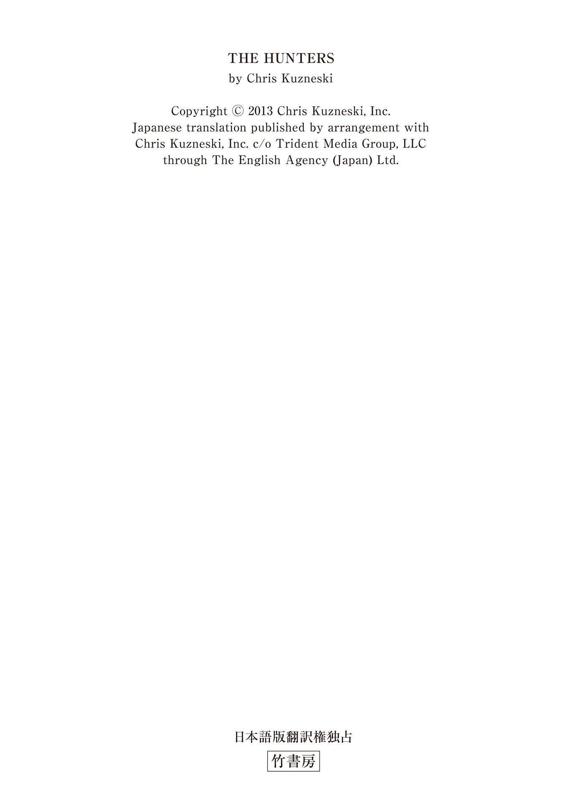
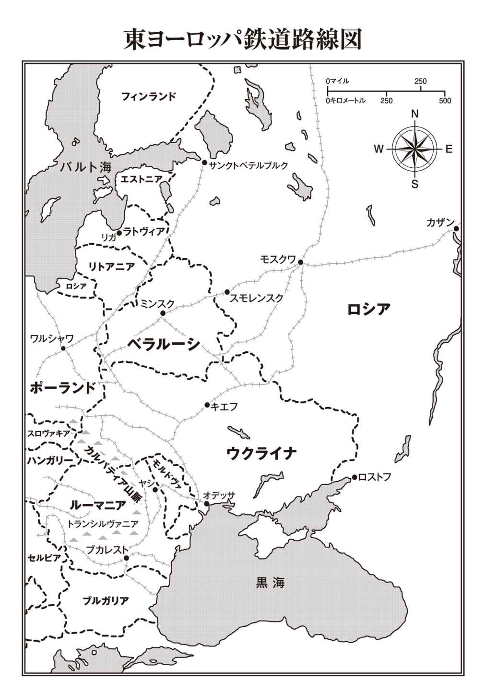

| ＴＨＥ ＨＵＮＴＥＲＳ ルーマニアの財宝列車を奪還せよ 下 (竹書房文庫) | |
| クリス・カズネスキ | |
| (2016) | |
この作品は縦書きでレイアウトされています。
また、ご覧になる機種により、表示の差異が認められることがあります。
一部の漢字が簡略字で表示されていることがあります。

ＴＨＥ ＨＵＮＴＥＲＳ
ルーマニアの財宝列車を奪還せよ 下
主な登場人物
〈ハンターズ〉
ジャック・コッブ .........リーダー。元海兵隊特殊部隊
ジョッシュ・マクナット .........武器担当。元海兵隊
サラ・エリス .........潜入担当。元ＣＩＡ
ヘクター・ガルシア .........コンピューター担当。元ＦＢＩ
ジャスミン・パク .........歴史・言語担当。新聞社勤務
ジャン＝マルク・パピノー .........アメリカの大富豪。ハンターズの金銭的支援者
アンドレイ・ドブレフ .........ロシアの元鉄道作業員
ヴィクトル・ボロフスキー .........ロシア警察の大佐
アンナ・ルシンコ .........ロシア警察の巡査部長
アレクサンドル・デチェバル .........ルーマニアの村の長老
グリゴリー・シドロフ .........ブラック・ローブズのリーダー

41
九月十八日 火曜日
ロシア タタールスタン共和国カザン（モスクワの東八百六十七キロ）
パヴェル・ドヴォルキンは自らの生まれ育ったモスクワと同じくらい、この街のこともよく知っていた。十年ほど前にブラック・ローブズに加わって以来、何百回となくタタールスタンの首都カザンを訪れたことがある。これまではカザンへの旅をいつも心待ちにしていた。だが、今日は違う。
操車場での任務が失敗に終わった後なのだから。
ハイカラーの黒のチュニック、黒のズボン、黒のブーツ、さらにはグループ用に特注した上着という格好で街を歩くドヴォルキンは、陽光の降り注ぐ通りをすれ違う歩行者が自分に投げかける視線に気づいていた。カザンの街中を歩く彼の存在は、多くの市民にとって今ではお馴 染 みの光景だった。尊敬や嫉 妬 の眼 差 しに混じって、不安げな視線も目につく。それも無理はない。当然だと言ってもいい。彼らが恐れるのには理由がある。ドヴォルキンが師に仕えるようになってから長い月日が経過したが、彼は忠実に任務を果たしてきた。その実績は彼の物腰や表情、そして何よりも服装に如実に表れている。
制服のデザインが実に秀逸だった。過去にならって長いスカートのような衣服をまとっていたら、遠い昔に憧れを抱いているだけの連中だと見なされていたに違いない。だが、伝統的な服装を現代風に改めたデザインの採用により、言葉には出さずとも忠誠を誓っていることを示すと同時に、一目置かれる存在になることができたのである。
ドヴォルキンはブラック・ローブズの一員であることに誇りを感じていた。もはや国家保安委員会はこの世にない。若い頃、ドヴォルキンはその一員となるために懸命の努力をした。ＫＧＢとして恐れられたその組織は、ドヴォルキンが受け入れられようと必死だったあの頃、輝かしい存在だった。
その当時、十八歳になったばかりだったドヴォルキンは、組織の一員として認められるための準備に青春時代のすべてを捧 げた。年齢的な資格を満たすとすぐに共産党に入党し、それから間もなくＫＧＢに加わる。ウラジーミル・クリュチコフが議長に君臨していた頃で、ＫＧＢは一段と強力な組織に発展すると思われており、ドヴォルキンはその中で重要な地位に就くつもりでいた。だが、その夢が実現することはなかった。
一九八〇年代末になると、ミハイル・ゴルバチョフ書記長が打ち出した一連の大胆な改革により、ソヴィエト連邦は不安定な状態に陥っていた。クリュチコフが国家の団結を望んだのは当然だ。彼はドヴォルキンも含めた若く有能な局員たちを結集し、一九九一年にクーデターを起こした。だが、クリュチコフの築いた堅固な基盤も、ゴルバチョフの手によりもろい砂のごとく崩れ去った──しかも、ゴルバチョフの手腕は巧みだった。クリュチコフやその支持者を厳しく取り締まるのではなく、放置したのである。そのため、クリュチコフが党に対して不満を述べる機会もなく、党が彼に対して復 讐 のための権限を与えることもなく、それがＫＧＢという組織の崩壊につながっていく。
一九九一年、ソヴィエト社会主義共和国連邦は正式に解体された。ＫＧＢも複数の弱い組織に分割され、新生ロシアの直接の指揮下に置かれた。しかも、この新生ロシアは、もはや共産党とは別物だった。
ほかの多くの党員たちとともに、パヴェル・ドヴォルキンは路頭に迷った。
しばらくの間、ドヴォルキンは自分の気性と訓練に見合った仕事に就いていた。恐喝や強盗などを働いていたそんな彼のもとに、二〇〇二年のある日、とある依頼が舞い込んだ。政治局の高官を有罪とするための証拠を入手してほしいというのだ。ドヴォルキンが手に入れたのは、ただの証拠ではなかった。その高官と関係を持った男 娼 を見つけ出したのである。そのことに端を発したスキャンダルの嵐の中で、ドヴォルキンの存在が新興のグループ──ブラック・ローブズの目に留まった。それから十年以上が経過した今、ドヴォルキンは組織の中枢の一人として、仲間たちから大いに信頼されている。
メンバーの中には本拠地がカザンに置かれていることを不思議に思っている者もいる。なぜシベリアのチュメニ州ではないのだろうか？ そこには師の生誕地のポクロフスコエがあるのだから。あるいは、サンクトペテルブルクでもいいではないか。そこは師が皇太子アレクセイの血友病を治癒させ、列車事故で昏 睡 状態に陥っていた女官のアンナ・ヴィルボワの意識を回復させた地だ。
だが、今のリーダーは組織の本拠地をカザンに定めた。ここは師が一九〇二年に暮らし、最初の信者たちが集まった場所でもある。「ロシア第三の首都」として知られるカザンは、カザンカ川とヴォルガ川の合流地点に発展した美しい街だ。多種多様な人々が暮らし、人口も増え続けているため、市内にはモスク、大聖堂、教会、寺院が数多い。多くの宗教の信者たちがひしめき合うこの街だからこそ、ブラック・ローブズの存在が必要以上に目立つこともない。
ドヴォルキンはボラク運河に架 かる橋を歩いて渡った。市内を流れる多くの水路の水面には、文字通りの意味でも比 喩 的な意味でも光り輝く建物群が反射しており、赤い煉 瓦 屋根を持つ白い石造りの建物の間に、見上げるような高さの電波塔、競技場、大学、宮殿、さらにはサーカスの大テントまでが点在している。はるか彼方 には建都千年を記念して建設されたミレニアム・ブリッジと、その特徴でもある黄色い大きなＭ字型の橋脚が見える。別の方角に目を向けると、破壊された城 塞 の跡にイヴァン雷帝の命で新たに建造された歴史的な城塞カザン・クレムリンがある。
ドヴォルキンは見慣れた街の風景をもう一度よく眺めてから、組織の本部に視線を向けた。地味で小さな三階建ての建物で、近隣の街並みに溶け込んでいる。市内の多くの建物と比べれば見劣りするものの、この界 隈 では最も大きい。周囲の建物と同じような建築様式を採用しているが、ややとがった赤い屋根を持つほかの建物とは異なり、緩やかな傾斜のある茶色い屋根をしている。
各フロアの両側の高さがある八つの狭い窓のほか、全方向を見渡すことができるように角の部分にも窓が設置されているこの建物は、落ち着いて洗練された雰囲気を醸し出し、見る者に威圧感を与えない。だが、これといった特徴のない入口に向かって歩みを進めながら、ドヴォルキンは建物の中と外から少なくとも三台のカメラと六人の人間が監視の目を光らせていることを意識していた。扉の取っ手に指をかけ、そのまま待つ。鍵も、暗証番号も、ＩＤカードも必要ない。ドヴォルキンの入館を判断するのは、建物内の護衛だ。ブザーが鳴り、ガチャッという音を確認してから、ドヴォルキンは扉を開け、建物内に入った。扉の奥には、ダークウッドのパネルを貼った鋼鉄製の箱がある。
高さ二メートル五十センチはある箱の中で待つうちに、ドヴォルキンの背後の扉が閉まり、すべての光が遮 断 された。暗闇の中に立つドヴォルキンの全身を、赤外線センサーがスキャンする。再びブザーが鳴り、ガチャッという音とともに、目の前のパネルがスライドして開く。ドヴォルキンは前に進み、別世界に足を踏み入れた。
あたかも一九一六年にタイムスリップして、ニコライ二世とその家族が好んで暮らしたアレクサンドロフスキー宮殿の深紅の間に迷い込んだかのようだ。金色に輝くシャンデリアが天井から吊るされている。厚手のカーテンの奥の壁を、大理石の円柱が支えている。椅子には深紅の布地がふんだんに使用されている。ふかふかの絨 毯 の色も深紅だ。壁にはかつての宮殿を装飾していたものと同じ、エメラルド色の壁紙が貼られている。
一見したところ、サンクトペテルブルクの深紅の間とこのカザン版との大きな相違点は二つしかない。一つは宮殿の敷地内を見渡せる窓がないこと。もう一つは、この建物内に白い服を着た美女が大勢いること。
倒錯した夢の中に出てくる天使たちを思わせる女性たちだ。
リーダーの指示に従い、女性たちはフリスティの教えを忠実に守っている。この一派は救済が罪を通じて行なわれ、神の恩 寵 を得るためにはアルコールとセックスが必要だと説いた。そのため、建物内のテーブルの半数近くにブランデーの入った大きなデキャンタが置かれ、物 憂 げにたたずむ女性たちは全員が王家のきらびやかさを性的に強調した衣装をまとっている。深紅の間にいる二人の女性は、クジラの骨で作った白のコルセットの上にきつい白のレースのブラウスを着用しているほか、深いスリットの入った体の線もあらわな丈の長い白のドレス、太 腿 までぴったりと覆った白のレースのストッキング、ヒールの高い白のボタン付きアンクルブーツといういでたちだ。女性は二人とも背が高く、細身で、ライトブラウンの長く艶 のある髪をしている。
カザンに活動拠点を置いたもう一つの理由がそこにある。市内には将来への希望に胸をふくらませた女優、モデル、スポーツ選手、学生があふれている。だが、その多くが成功をつかめないことに強い不満を抱いており、多少の金を積めば組織のために進んで身を捧げてくれる。
二人の女性はドヴォルキンの方を見なかった。おそらく焦点が定まっていないであろう瞳は、閉じたまぶたで覆われている。二人は鎮静剤を打たれているか、二日酔いか、あるいはその両方だろう。ここにいる女性たちが何をされたのかについて、ドヴォルキンが建物内のスタッフに問いただしたことはない。聞くまでもないことだからだ。女性たちの行動からは、アルコールや薬物の常用による影響が見て取れる。
ドヴォルキンはかつてリーダーが語るのを聞いたことがある。「迷える女性たちが内なる高みに達するために外からの刺激が必要ならば、それを得られるだろう」
〈本人たちが気づいているかどうかは怪 しいものだ〉
ドヴォルキンが左手に視線を向けると、黒のチュニックを着た背の低い男が奥の扉を抜けて室内に入ってきた。髪の毛を後ろになでつけ、険しい表情を浮かべている。「お待ちしていました。今からお会いになられるそうです」
「どの部屋で？」ドヴォルキンは訊ねた。
「居間です」
ドヴォルキンは安 堵 のため息を漏らした。居間は皇后アレクサンドラの謁 見 室を再現したもので、三階にある。リーダーが重要度の少ない打ち合わせのために使用する部屋だ。そのため、ドヴォルキンの期待はいっそう高まった。すべて予定通りに進んでいるから大丈夫だと伝えるために、リーダーは自分をここに呼び出したに違いない。
ドヴォルキンは男を深紅の間に残し、三階に通じる広い階段を上った。二階には事務室や立案室があり、組織のメンバーがリーダーの指示を受けて作業を進めている。
三階に到達すると、ドヴォルキンは階段の先を左に折れ、装飾の施された幅の広い廊下を進んだ。皇后アレクサンドラのカエデの間、薄紫の間、ローズウッドの間を再現した部屋の前を通り、謁見室の扉に近づく。扉の前に立ち、ノックをしようとした時、ドヴォルキンの視線の端が何かをとらえた。
目を向けると、皇后アレクサンドラの主寝室を再現した部屋のかすかに開いた扉の外に、ヒールの高い白のアンクルブーツが二足、ボタンが外れた状態で横倒しになっている。ドヴォルキンは寝室内をのぞこうとしたが、見えたのは豪華なことを思わせる部屋の内装の影だけだ。押し殺したような声が聞こえたような気もしたが、空耳かもしれない。このブーツをはいていた人物が、寝室内に引きずり込まれたのだろうか？
ドヴォルキンはノックをしてから謁見室の扉を押し開けた。室内はアレクサンドロフスキー宮殿の謁見室を模した造りだ。人造大理石の壁面の上部には、装飾豊かなエンタブラチュアがある。クランベリー色の厚手のカーテンが窓を覆っている。濃い金色を配した寄せ木細工の床の上には、フランスのサヴォヌリー風の絨毯が敷かれていた。室内の壁沿いに配置された椅子、テーブル、本棚、書き物机は、どれも十八世紀のフランス様式だ。
部屋の中央には小さなテーブルがあり、椅子が二脚置かれている。
そのうちの一つに座っているのは、グリゴリー・イェフィモヴィッチ・シドロフ。
ブラック・ローブズのリーダーだ。
42
リーダーの姿を目にするたびに、ドヴォルキンの心は動かされる。リーダーの明 晰 な頭脳と威厳のある態度や、ブラック・ローブズの組織内外に及ぶ権力に圧倒され、大いなる高揚感を覚える。けれども、それは同時に不安を煽 る要素ともなる。この日も、ドヴォルキンは思わず立ち止まってしまった。
タカのような顔つきをしたリーダーは、そんなドヴォルキンの動きに気づいていない様子だ。手招きをしながら、向かい側の椅子に腰掛けるように促している。ドヴォルキンは感謝の意を込めてうなずき、歩きかけたところで、再び動きを止めた。左目の端にまたしてもヒールの高いブーツが映ったからだ。だが、今度のブーツからは女性の華 奢 な脚が伸びている。すらりとした細い脚をたどっていくと、壁沿いのソファーにもたれかかった女性の上半身がある。この女性も白い服に身を包み、意識が朦 朧 としているようだ。下の階の女性と同じく、ドヴォルキンの存在を意に介していない。あるいは、まったく気づいていないのかもしれない。
ドヴォルキンはリーダーに視線を戻し、無言の質問を投げかけた。シドロフは無表情のまま視線を受け止めていたが、やがて初めてその存在に気づいたかのように女性へと目を向けた。考え込むような表情を浮かべた後、目を見開き、立ち上がり、ソファーに歩み寄り、女性の隣に座る。近くのテーブルからナプキンを手に取ると、シドロフは丁寧に折りたたみ、そのナプキンで女性に目隠しをした。女性はまったく反応を示さなかったが、ドヴォルキンは特に驚きもしなかった。
シドロフは立ち上がろうとしたが、その途中で思い直したらしい。女性に覆いかぶさるようにしながら別のテーブルの引き出しに手を伸ばし、ｉＰｏｄとヘッドホンを取り出す。さらにヘッドホンのイヤーパッドを女性の両耳に深く挿し込み、電源を入れて音量を上げ、ｉＰｏｄの本体をコルセットに覆われた女性の腰の窪 みに置いてから、シドロフはテーブルに戻ってきた。「さてと」シドロフは口を開いた。「これでいいかな」
「はい、ストラニック。ありがとうございます」ドヴォルキンは感謝を表した。「ストラニック」は「敬 虔 な巡礼者」を意味する語で、若い頃の師がしばしばそう呼ばれていたという。
シドロフは感謝の言葉など必要ないと言うかのように手を振った。ハエを追い払う時の仕草にも見える。「君は私によく仕えてくれたし、我々の大義のためにもさらによく仕えてくれた。君に対しては可能な限りの配慮をしたいと思っている」
「ありがとうございます、ストラニック。ありがとうございます」
ドヴォルキンはまだ室内の若い女性を意識していたものの、その存在感は次第に薄れつつある──シドロフのような大物を前にしているのだからなおさらだ。たとえ称賛を受ける立場にあったとしても、決して相手から注意をそらさずにいるのが賢明だと言える。
「飲み物でもどうかな？」シドロフが訊ねた。
ドヴォルキンは首を横に振った。
「私は飲んでもかまわないかね？」
「もちろん、かまいません、ストラニック」ドヴォルキンにとっては、「ストラニック」と呼びかけるのがいちばんしっくりくる。「サー」では堅苦しすぎるし、「リーダー殿」では不自然すぎるし、「グリゴリー」では馴れ馴れしすぎる。
シドロフは椅子から立ち上がり、女性が横たわるソファーの脇に置かれた移動式カートに向かった。リーダーがカット入りのブランデーグラスに琥 珀 色の液体を注ぐのを見ながら、ドヴォルキンは女性のすらりとした脚と、スリットの隙間からのぞくストッキングに覆われていない肌を再び強く意識した。
「そのために私は君をここに呼び寄せたのだ」シドロフは不意に口を開いた。その氷のように冷たい口調が、はるかに強い寒 気 となってドヴォルキンの全身を貫く。
「よくわかりませんが」ドヴォルキンは答えた。
「我々の大義に対する君の献身は、君を批判する者たちさえも認めるところだが、我々の大義に対する君の理解は不十分だという声も聞かれる」
「批判する者？」ドヴォルキンは不意を突かれた。「誰がそのようなことを言ったのですか、ストラニック？」
シドロフはその質問も手を振って遮 った。「私は癒すためにここにいるのであって、責めるためにいるのではない」シドロフはブランデーに口をつけた。「君の思うところを述べたまえ。君の知っていることを話したまえ。私が君の心を癒してあげよう」
「何についてでしょうか、ストラニック？」
シドロフはかすかに肩をすくめた。「何でもかまわない。我々に関係のある話ならば」
ドヴォルキンは椅子の背もたれに寄りかかり、まばたきをした。「どこから始めればよいのですか？ あまりにも多いものですから」
シドロフはその発言を否定した。「そんなことはなかろう。ここから、この部屋から始めればよい」シドロフはソファーに横たわる女性にゆっくりと視線を向け、笑みを浮かべた。
「なるほど」ドヴォルキンは話し始めた。「我々の師はまだ十八歳だった頃、ヴェルホトゥリエ修道院に向けて旅をされました。そこでフリスティ、すなわちキリストを信じる者たちのことをお聞きになられたのです」
シドロフは不快感をあらわにした。「『清める者たち』の方がふさわしいように思うが」
「もちろん、もちろんそうです。これからその話に移るところです」ドヴォルキンはあわてて付け加えた。「フリスティは聖人、聖職者、聖書を排除しました。彼らは──つまり、我々は、罪を悔い改めることで神聖なる高みを得ようとしたのです」
「それで、罪を悔い改めるためには......？」
「罪を経験しなければなりません」
「続けたまえ」シドロフは再びブランデーを口に運んだ。
「罪が大きければ大きいほど、改 悛 の情も大きくなります」
「それで？」
「我々の師はこの修行を繰り返すことで、内なる大きな力を見出されました。病人を治療し、未来を予見できるようになったのです」
「それで？」
ドヴォルキンは困惑した。リーダーが何を求めているのか確信が持てない。そのため、同じ質問を返すことにした。「それで、とは？」
シドロフは手にしたグラスを下ろし、ドヴォルキンの方に向けた。「そこだよ、わかったかね？ 君を批判する人間が口にしているのは、そこなのだよ。君が話を知っているのは間違いないが、十分に理解していないように思える。君はきちんと理解できているのかね？」
ドヴォルキンは「もちろんです」と返事をしたかったのだが、シドロフは言葉を挟む暇を与えなかった。
「師が罪を犯され、悔い改められるにしたがって、その力は大きくなっていった。師は皇帝の息子が苦しむ血の止まらない病気を治された。皇帝の女官を死の淵 からよみがえらせた。師は彼らのために涙を流され、彼らのために働かれ、彼らを愛され、彼らのために生きられた──どんなねたみや憎しみや誤解を受けようとも」
「私も師の偉大さを理解しております」ドヴォルキンは弱々しく返した。
しかし、シドロフの言葉は教え以上の効果を伴っていた。彼は自らの言葉で自らの気持ちをかき立て、感情を高めていく。このようにして自らの心の中に熱い思いをたぎらせ、その炎をほかの人々に伝えることで、シドロフはブラック・ローブズのリーダーの地位にまで上り詰めたのだ。
「聖職者たちは師を追放しようとした」シドロフは教えを説いた。「だが、彼らは自らの罪により追放の身となった。聖職者たちの意を受けた者たちがナイフで師を殺そうと試みたが、失敗に終わって屈辱を味わった。その一方で、皇后は師を愛した。王女たちも師を愛した。師が寝室に招かれたのは、愛されていたからにほかならない。宮殿内の女性たちは師を愛した。だから師は権力の座にある男たちの憎しみの的になったのだ。男たちは皆、師のように愛されたかったからだ。そうだな？」
「そうです」ドヴォルキンは答えた。
「そうだな？」
「そうであります！」熱い炎が燃え移り、ドヴォルキンは叫んだ。「だからフェリックス・ユスポフ公、パヴロヴィチ大公、プリシュケヴィチ議員は、師を殺害するための陰謀を企てたのです」
シドロフがあまりにも激しくグラスをテーブルに叩きつけたので、ドヴォルキンはグラスが割れるのではないかと思った。リーダーの顔には満面の笑みが浮かんでいるが、目だけは氷のように冷たい。「けれども、彼らは師を殺せなかった、そうだな？」
「そうであります、ストラニック」
「師はほかに何と呼ばれていたかね？」
「それは──それは──」
「ストラニック以外に、我々の師は何と呼ばれていた？」
ドヴォルキンは焦りながら考えを巡らせた。「怪僧」と呼ばれていたことは知っているが、そんな答えを述べる勇気はない。
「後年の話だ、パヴェル！ 師は何と呼ばれていた？」
「スタレッツです！」ドヴォルキンは不意に思い出した。「敬愛なる師、年長の指導僧です」
シドロフの口調が和らいだ。「その通り」大きく息を吸い込む。「スタレッツだ」シドロフはお告げかメッセージを探すかのように天井を眺めてから、強い哀 れみの表情を浮かべてドヴォルキンを見た。「我々の師であるスタレッツは数多くの罪を犯され、数多くの改悛を行なわれたために、病気を治し、未来を見ることができたのだ。そうだな？」
「はい......はい、スタレッツ......」
新しい呼び名が示されたからには、それを使用する方がいいとドヴォルキンは判断した。
シドロフの視線はドヴォルキンに向けられたままだ。「だが、それだけではない。ほかにももっと君は知っているはずだ」
「......はい、知っています」そう返事をしながら、ドヴォルキンは頭の中で必死に答えを探した。〈ほかにも、とはどういう意味だ？ 宮殿内での行ないの話か？ ほかの人間関係の話か？〉
シドロフはドヴォルキンの目の前に、まるで大いなる高みから見下ろすかのように立っている。「我々の師は死さえも超越されたではないか」
ドヴォルキンは恥ずかしさのあまり顔が紅潮するのを感じた。「もちろんです！ そんなこともわからなかったとは！ お恥ずかしい限りです！」
ドヴォルキンにとって意外なことに、シドロフはさもおかしそうに笑い声をあげた。「まあいい、まあいい。いいかね、フリスティの教えの中には鞭 打ちがある。『我が身を鞭打ち、神に近づく』と彼らは唱 えていた。そうだな？」
「はい、スタレッツ」ドヴォルキンはほっとしながら返した。「あなたが鞭をお持ちならば、喜んで自らを打ちます」
その申し出を聞き、シドロフは笑みを浮かべた。「いいや、我々の間に鞭は必要ないだろう。もはや鞭打ちのための時間は残されていない。我々の務めはそれよりもはるかに重い」
「かしこまりました、スタレッツ」ドヴォルキンは謙虚に答えた。
「教えてくれないか、パヴェル。我々の務めとは？」
「我々の務め？」ドヴォルキンは聞き返した。
シドロフの眉 間 にしわが寄る。「君は我々の師の話を知っている。それならば当然、師を敬う者たちの務めも知っているはずだ」
「それは......師を見つけ出すことです」
「その通りだ」シドロフは一呼吸置いた。「彼らは師の腹を切り裂いた。師は死ななかった。彼らは師に毒を持った。師は死ななかった。彼らは師を三度撃った。師は死ななかった。彼らは師を殴った。師は死ななかった。彼らは師を水に沈めた。師は死ななかった。彼らは師の体を燃やした。師は......死なな......かった。我々の師は、今もなお生きておられるのだ！」
シドロフはドヴォルキンから視線を外した。「これまでの生涯を通じて、私は師を模範としてきた。私は罪を犯した。私は悔い改めた。私は力を得た」シドロフは室内を歩き回り始めた。高貴な部屋の内装から力を得ようとするかのように。「私はあらゆる手がかりを追った。私はあらゆる糸口を探った。そしてようやく──ついに、私は師の居場所を突き止める方法を発見した」
シドロフはドヴォルキンのもとに戻り、椅子の背もたれの後ろに立った。左手をドヴォルキンの右肩に置き、冷たい笑みを浮かべる。「君はただ待ち、見ていればよかった。アメリカ人たちに任せて、我々の代わりに師を発見させればよかったのだ。だが、君は弱すぎた。自分の役割を果たすことができなかった」
怒りと嫌悪感に駆られ、シドロフは銀の果物ナイフをドヴォルキンの左腹部に深く突き刺し、そのまま右側に動かして腹を切り開いた。ドヴォルキンの脳の一部はショックで麻 痺 した。声にならない甲高い悲鳴をあげた。だが、その一方で、帝政ロシア時代の果物ナイフが肉を貫通し、内臓を切り裂き、筋肉を切断するその力強さに感銘を受けていた。
ドヴォルキンは口を開いた。だが、悲鳴の代わりに「ああ」という小さな音が漏れただけだ。両手が上に動いたものの、ナイフをつかむべきか、ナイフを持つ手をつかむべきか、それともシドロフの顔をつかむべきか、心の中で決心がつかずに動きが止まる。結局は本能の判断に従い、膝の上にこぼれ落ちる内臓を受け止めるために手を下ろした。
シドロフは思う存分腹部を切り裂いてから、ドヴォルキンの体を床に突き飛ばした。脇腹を下にした姿勢で倒れたドヴォルキンは、切り裂かれて血があふれ出る傷口を両手で押さえながら、目を見開いてリーダーを見上げ、浜辺に打ち上げられた魚のように口を開いたり閉じたりを繰り返した。
シドロフは椅子の後ろに立ったまま、血まみれの果物ナイフを左手に持ち替えた。「師は私の到着をお待ちになられている──私に力を与えようとお待ちになられている。君はただ待っていればよかったのだ。それなのに、君は楽をしようとした。暖かく居心地のいい部屋の中から、アメリカ人たちの後を追おうとした。だから彼らの列車内に盗聴器を仕掛けようと試みた。そのせいで、彼らの一人に姿を見られた。その女が君を調べにきた。パニックを起こした君は、女を攻撃した。その結果、彼らは我々が監視していることに感づいてしまったのだ」
シドロフは倒れたドヴォルキンの肩を手荒につかみ、仰 向 けの姿勢にした。「だが、心配はいらない。君にはフェリックス公、大公、議員が我々の師に与えたのと同じ機会を与えてやろう」
シドロフは両手をドヴォルキンの喉 に回し、締め付けた。
ゴロゴロという弱々しい音が口から漏れるとともに、ドヴォルキンの命の灯 が消えていく。
自らが下した罰に満足したシドロフは、立ち上がるとソファーに向かった。恍 惚 の笑みを浮かべながら、身動き一つしない若い女性の隣に腰を下ろし、そっと目隠しを外す。目隠しが重く感じられるのは、ナプキンを経皮麻酔薬に浸してあったからだ。目隠しが皮膚に触れた直後から、麻酔薬は女性の皮膚を通して血流中に浸透していた。
シドロフは眠ったままの女性をしばし見つめた。
〈これほど美しい姿は見たことがない〉シドロフは思った。
〈無 垢 な天使のようだ〉
家族から虐待を受け、自己嫌悪に陥る前は、このような美しい女性だったのだろう。そして彼女は絶望感に駆られてここを訪れたのだ。
シドロフはソファーに横になり、意識のない女性を腕に抱いた。悔い改めるためには彼女の力が必要になる。夜が更けるまで。
43
九月二十日 木曜日
ルーマニア ヴァシュカウツィ（モスクワの南西千三百九十キロ）
ガルシアはゴールドファインダー・プログラムでこれまでの旅程を振り返っていた。モスクワの駅を発 って以来、千五百キロ近くを走行している。これまでのところ、すべてが順調だ。「乗客の皆様にお知らせします。当列車はウクライナからルーマニアに入りました。次の停車駅はゴールドシティーです」
その声を聞き、マクナットはうめき声をあげた。楽観的な性格で、クマが大砲を撃つような世界を夢見ているマクナットでさえも、今回の任務の成功のためにはチームの推理がすべて的中しなければならないことくらいは理解している。
まず、フェリックス公が財宝を積んだ列車をモスクワから出発させたと仮定した。次に、歩くことのできる兵士たちは全員が、失敗に終わったポーランドと東プロシアへの攻撃に駆り出されたはずだと考えた。つまり、列車内には重い荷物を運ぶことのできる人間が乗っていなかったので、財宝は列車から降ろされていないということになる。さらには、追っ手がいた場合にはまく必要があるため、列車は少なくとも一カ所は分岐点を経由して方向転換をしていたはずだと推測した。しかも、この方向転換は目撃者のいない状況で行なう必要がある。そのためには、この分岐点は人口密度が低く、人目につきにくい場所になければならない。
こうした情報をすべてゴールドファインダー・プログラムに入力したところ、ある一つの選択肢がはじき出された。ルーマニアのトランシルヴァニア高原だ。「高原」とは名ばかりで、その地形は急 峻 な丘 陵 と窪地から成る。周囲をカルパティア山脈の高峰に囲まれているが、このあたりでは岩がちな地形に変わって広大な森と美しい景観の断崖が占めている。果てしなく続くように思われる森林地帯では何を探すにしても困難なため、財宝を隠すには格好の場所だと当たりをつけたのだった。
あとは財宝を実際に発見できるかどうかだ。
間違った行き先の列車に乗ったのではないかという不安を募らせていたマクナットは、コンピューターの画面を一 瞥 した。「嵐の前の静けさとは言うけどさ、これはあまりに静かすぎるぜ。二十時間近くたつのに、嵐どころかそよ風すら吹いていない」
マクナットの指摘ももっともだった。上空の衛星画像からも、周囲三百六十度をとらえたビデオ映像からも、怪しい点は見当たらない。無線の通話からも、連結部分に取り付けた圧力の変化を察知する装置からも、不審な声や物音は聞こえない。聞こえてくるのは運転室のアンドレイ・ドブレフが歌うロシア民謡だけだ。休憩中に代わりの運転手が必要になるため、ドブレフはジャスミンに機関車の操作の基礎を教えていた。今もジャスミンはドブレフとともに運転室にいる。
コッブはイヤホンを通してマクナットに心配は無用だと伝えた。「時には青空に太陽しかないような日もある。晴れているならいいじゃないか。考えすぎだ」
「実を言うと、晴れているから不満なんだ」
ガルシアが振り返った。「晴れていたらいけないの？」
マクナットはうなずいた。「モスクワを発つ前に観光でもしたいと思っていたんだ。今日のような天気なら、赤の広場で並ぶのにちょうどいいじゃないか。肌を焼くこともできるしさ」
肌を焼く話は置いておくとして、コッブは「赤の広場」のところが気になった。マクナットが歴史的に有名な場所を訪れたがる人間だとは、思ってもいなかったからだ。「歴史に興味があるとは知らなかったよ」
「そうじゃないよ」マクナットは全員に向かって説明した。「俺はビートルズの大ファンなんだ。だからモスクワを離れる前に、レノンの墓を訪れたかったのさ」
列車中に笑い声が響く。本人の目の前で大笑いするわけにもいかず、ガルシアはワークステーションの前から離れなければならないほどだった。運転室内のエンジン音のせいで会話がはっきりと聞き取れなかったジャスミンまでも、涙が出るほど大笑いした。突然笑い出したジャスミンに困惑して、ドブレフは列車内で何が起きたのか知りたがった。笑いが止まらなくなったジャスミンがロシア語で事情を説明するのに五分ほどかかっただろうか。説明を聞いたドブレフは、誰よりも大きな声で笑った。身をよじりながら笑ううちに小便を漏らしそうになり、あわててトイレに駆け込んだほどだ。
その間、マクナットは何が何だかわからずに立ち尽くしていた。
「どうしたんだよ」マクナットは誰にともなくつぶやいた。「俺がビートルズのファンだというのがそんなにおかしいのか？ 確かに昔のバンドだけど、曲が好きなんだよ。レノンは音楽の天才じゃないか」
＊ ＊ ＊
笑いが収まるまでしばらく時間がかかったが、その後は再び元の状態に戻った。
パピノーが留守の間、コッブが彼の机を使用していた。机の上は紙の地図や図表で散らかっている。ガルシアもワークステーションの前に戻った。予備として持ち込んでいた何台ものモニターには、列車の中、外、下に新たに設置された防犯カメラからの映像が表示されている。ガルシアを囲むように並ぶモニターは、まるで間仕切りのようだ。
歩き回ったり、ガルシアの背後から画面をのぞき込んだり、体がなまらないようにスクワットや屈伸をしたりしている時以外のサラは、ソファーに寝転がってタブレットで地図を眺めていた。首筋にはまだ跡が残っているものの、ブラック・ローブズの襲撃からはほぼ回復しているように見える。
「退屈だぜ」ソファーの横の椅子に座ったマクナットは、調理室で作った鼻につんとくる特製サンドイッチ──刻んだスイートピクルス、つぶしたニンニクのオリーブオイルあえ、燻 製 のハム、キュッセンドルフのスイスチーズ、キュウリのスライスを挟んだ黒パン──をほおばりながらつぶやいた。「なあ、ジャック。人を撃ちたいんだけど。それができるのはいつ頃かな？」
「この旅の途中ではないことを希望している」
「冗談だろ」マクナットは言い返した。
サラはあきれて目をむいた。マクナットは物事を大きな視点で見ることができないのだろうか？「一つ聞きたいんだけど。いったい誰が私たちの邪魔をするというの？ 私たち自身だって、まだ目的地がわかっていないのよ」
「ロシア人はものわかりの悪い連中だからな」
「だったら何よ、馬に乗ったコサックでも警戒しないといけないわけ？」
「ちょっと、言葉に気をつけた方がいいですよ」機関室からジャスミンが警告した。「今でもかなりの人数のコサックがいますし、彼らは外国人を忌み嫌っているんです」
「ほらね」マクナットは言った。
サラとマクナットは同時にコッブの方を見た。だが、コッブはすでに二人のやり取りを気にもかけていなかった。ほかに考えなくてはいけないことがあったからだ。列車内は静かで、重量のある車両がやや凹凸のある道 床 の上に敷かれた古い線路を走る音だけが絶え間なく聞こえる。
コッブたちは全員が同じ服装をしていて、それが今ではあたかも制服のようになっていた。黒の超軽量の長袖Ｔシャツは、最新のスポーツ素材でできており、暑い時には風通しをよくする一方、寒い時には保温性が高まるようになっている。アイゼンハワージャケットとカーゴパンツはどちらも濃いオリーブ色で、やわらかく強い布地はこすれてもまったく音を立てない「ステルス」素材だ。ジャケットとズボンには各自の様々な必要性に合わせて、使いやすい場所にポケットが付いている。その多くが予備の弾薬用なのは言うまでもなく、丈の長いジャケットは濃い茶色のホルスター付きのベルトをしっかりと隠すこともできる。靴も色は黒で、見た目はハイトップの室内履きとコンバットブーツの中間のような形状だ。防水と防 滑 の機能を備え、シャツと同じように断熱性にも優れている。正確に時間を合わせてある各自の腕時計の文字盤は光を反射しない。文字盤の風防の水晶は垂直軸に沿って偏光されているので、はめている本人以外は時刻を見ることができない。また、文字盤の照明が外に漏れることもない。
数分間の沈黙が続いた後、コッブはある場所の地図をｉＰａｄの画面上に呼び出すようサラに指示した。机の上の地図上に異なる色の色鉛筆で書き込まれた、何本もの線を指差す。
「フェリックス公は財宝を隠そうとすると同時に、家族とともにヤルタまでたどり着くための、安全なルートを確保しようとしていたはずだ」コッブは言った。「つまり、交通量の少ないルートを探す必要がある」
「ヤルタへの？」サラは訊ねた。
「ヤルタ方面 へのだ」コッブは訂正した。
「それだと、私たちはかなり離れたところにいるんじゃない？」サラは地図上で東の方を指差した。「この列車は南西に向かっているけど、ヤルタは東へ数百キロのところでしょ？」
「フェリックス公が財宝をウクライナに──当時は『リトル・ロシア』として知られていた場所に、隠そうとしたとは思えない」コッブはかぶりを振った。「反ロマノフ派の軍に近すぎる。このルート沿いのどこかで、彼はグループを二つに分けたに違いない。逃亡するために家族とたどったルートと、財宝がたどったルートの二つがあるのさ」
「彼の家族が逃げた先はマルタだっけ、ヤルタだっけ？」マクナットは相変わらずサンドイッチを口いっぱいにほおばりながらつぶやいた。「こんがらかっちゃったよ」
「最終的にはマルタです」ジャスミンの声がする。「イギリスの戦艦に乗ったんですよ。覚えていないんですか？」
「忘れた」そう言いながら、マクナットはナプキンで口をぬぐった。
ここで話を変えるため、コッブは親指の指先を喉に向け、左から右に動かした。マイクのスイッチを切るようにという合図だ。ここから先は内密の話になる。
全員がコッブの意図を理解しておいてうなずいた。各自がマイクのスイッチを切るためのパスワードとしてあらかじめ指定した単語をささやく。それに合わせて、マイクの音声が遮断されていく。コッブは室内を見回しながら、チームのメンバーからの確認の合図を見届けた。
コッブが最後に目を合わせたのはガルシアだった。彼も親指を立てて合図を送っている。
「問題はないか、ヘクター？」コッブは訊ねた。
「万事オーケーさ」ガルシアは答えた。
「本当か？」
「もちろん、本当だよ。何でそんなことを聞くの？」
コッブは片方の手のひらを向け、静かにするように合図した。
「パンサー」コッブはささやいた。それがコッブの設定したパスワードで、再びマイクのスイッチが入る。「ジャスミン、ちょっと頼みがある」
不安そうに室内を見回したガルシアは、司令センター内にチームの全員が揃っていなかったことに気づいた。
コッブは話を続けた。「ガルシアのマイクがまだ生きていることを確認してもらいたい。ちょっと前の彼の声が聞こえたか？」
「はっきり聞こえましたよ」ジャスミンは答えた。「万事オーケーだって言っていました」
コッブは顔をしかめた。「やっぱりそうだったか」
マクナットの手にはいつの間にかＭＰ７が握られていた。銃口が向けられているのはガルシアだ。ガルシアが目を落とすと、銃身に取り付けられたレーザーサイトから発する光が、赤い点となって胸元に輝いている。
少しでもおかしな動きを見せたら、彼の命はない。
44
任務を遂行する際のチェックリストの一項目として、コッブは列車に取り付けられたカメラの位置をすべて教えるようガルシアに要求していた。あらかじめ位置を把握しておけば、緊急時にどのカメラの映像を呼び出せばいいかすぐにわかるからだ。
列車がモスクワの駅を出発した直後、コッブはマクナットに対して、司令センターの車両内に不審なカメラが仕掛けられていないか調べるように依頼した。マクナットは一台だけ怪しいカメラを発見した。窓の下のねじの中に設置されていたものだ。コッブがガルシアから位置を聞き出した中に、そのカメラは含まれていなかった。ただしその時点では、コッブもマクナットも、誰がそのカメラを仕掛けたのか──ブラック・ローブズなのか、ロシア政府なのか、それともチーム内の誰かなのかについては、確信が持てずにいた。
それを突き止めるため、コッブとマクナットは内部捜査を始めた。
ガルシアの前に壁のように並んだモニターを眺めているうちに、コッブはシステムに送られてくるすべての映像および音声の状態を監視する診断画面の存在に気づいた。素人目には、何本もの緑色の線が絶えず画面上をスクロールしているとしか見えないだろう。時折表示されるタイムスタンプだけが、動き続けるこれらの線が持つ意味を示している。幸いなことに、コッブはこのソフトに馴染みがあった。緑色の線はデータが問題なく流れていることを意味する。線が赤に変わった場合は、何らかのエラーが発生したことになる。タイムライン上の好きなところをクリックすれば、データファイルが開き、ユーザーはシステムが記録したその時間の映像を見たり、音声を聞いたりすることができる。
コッブの直感は、ガルシアがカメラの件に関与していることを告げていた。
その直感が正しいかどうかを確かめるために、コッブは自分がガルシアのコンピューターの画面でデータの状態を見ている時、マクナットに問題のカメラの前にコーヒーの入ったマグカップを置いてもらった。その数分後、列車が急カーブに差し掛かった際、目 論 み通りコーヒーがこぼれた。コーヒーがかかったカメラはショートして動作を停止した。もしガルシアがその隠されたカメラの存在を知っているならば、そこから送られてくる映像の情報も画面上に表示されているはずだ。コッブの見ている目の前で、線が緑から赤に変わり、データに異常が発生したことを告げた。それにより、司令センターに不審なカメラを仕掛けたのはガルシアだということが判明した。その理由は不明だが、ガルシアがそのカメラの存在を秘密にしていたことは確かだ。
もちろん、その場でガルシアを問い詰めたりはしなかった。
そんなことをすれば、せっかくのチャンスが台なしになる。
その後、コッブはガルシアを除くチームの全員を集め、ガルシアの前では言動に注意するよう伝えるとともに、隠されたカメラを自分たちに有利なように利用する機会をうかがった。ショートした回路は二十四時間もあれば乾いてしまう。つまり、時間切れが次第に近づきつつあった。
それはガルシアを問いただす時が訪れたことを意味していた。
＊ ＊ ＊
落ち着いた様子を見せていたガルシアだったが、一瞬の間にすっかり取り乱していた。茶色い肌の顔から見る見るうちに血の気が引いていく。今にも気を失うのではないかと思うほどだ。
「仕方なかったんだ！」ガルシアは訴えた。「パピーの握っている僕のハッキングの証拠が表に出たら、何年も刑務所暮らしをしなければならないよ」
コッブはその訴えに顔をしかめただけだった。「彼は俺たち全員に対して似たような証拠を握っている。そんなのは理由にならない」
「あなたはそうかもしれないけど、僕は違う！ 刑務所なんかに入れられたら、生きて──」
コッブはガルシアの言葉を遮った。「おまえの事情には興味ない。いいから黙ってこっちの話を聞け」
ガルシアは身動き一つしまいとした。恐怖に怯 えているために、時折顔が引きつるのだけはどうしようもない。
「おまえがパピーの意をくんで動いていることは、最初から感づいていた。一人はそういう人間がいるはずだと思っていたし、それがおまえだろうと踏んでいた」コッブは失望をあらわにして首を横に振った。「まあいい。そういうのもおまえの専門分野の一部なんだろうからな。だが、それも今、この瞬間で終わりだ。俺たちの計画を彼に伝えたり、彼の指示で情報を遮断したりすることは、もう二度と──繰り返すが、二度としてはならない。悲劇的な結果を望んでいないのならば」
「何でも知っているような口をきかないでくれよ」ガルシアは反論した。
マクナットがガルシアに詰め寄ろうとしたが、コッブは腕を伸ばして制止した。コッブが許可を与えれば、誰かを殺したいというマクナットの念願がかなうことになる。
「パピーやブラック・ローブズに関するネタを見つけられなかっただと？」マクナットが大声で叫ぶのに合わせて、野良犬が激しく吠 えているかのように口から唾 液 が飛び散る。「そんなはずがないだろうが！」
ガルシアはチームのメンバーの顔を見回したが、誰一人として味方になってくれそうになかった。「それは噓 じゃない。意味のあるような情報はなかったんだ。もし見つけていたら、絶対みんなに教えていたよ！ 僕の命だって危険にさらされているんだから！」
「おまえが思っている以上に危ない状況にあるぞ」コッブは脅した。ほんの数センチ、伸ばした腕を下げる。その動きに合わせて、マクナットが身を乗り出す。見えないリードにつながれているかのようだ。「というわけだから、こうしようじゃないか。俺たちにはおまえが必要だし、おまえにも俺たちが必要だ。これは俺個人の意見だが、これまでのことは水に流そう。もう怒ってはいない。ただし、条件がある。今すぐにその情報をよこせ」
ガルシアは再び懇 願 しようとして口を開きかけた。だが、機関室から戻ってきたジャスミンの顔にも、失望の色が浮かんでいることに気づく。ガルシアは観念して頭を垂れた。「わかりました」
「それでいい」コッブはメンバー全員を代弁して答えた。「その情報を提供できたら、おまえは俺たちの信頼を取り戻すことができる。取引成立、ということでいいな？」
「もちろんです」ガルシアはべそをかきながら応じた。「本当に──」
マクナットが遮った。「『ごめんなさい』なんて言うんじゃねえ！ おまえが謝る理由は一つしかない。走行中の列車の外に放り出されるのが怖いからだろう？」
「違うよ」ガルシアは否定した。「罪悪感に苛 まれているからだ」
「笑わせるんじゃねえよ！ おまえのことは最初から怪しいと思っていた。おまえのような人種はいつもそうなんだ」
「そのくらいにしておけ」コッブは制止した。
「僕のような人種だって？」ガルシアは思わず言い返した。罪の意識はあるものの、家族や誇り高きメキシコ人の血を侮辱するような発言は見過ごせない。「今の発言を取り消してくれ！」
「嫌だね！」そう叫び返したところで、マクナットはチームメイトの険しい視線が自分に向けられていることに気づいた。列車内を見回すが、その理由がわからない。「何かまずいこと言った？」
ジャスミンが口を開いた。「このチーム内で人種差別的な発言は認められません」
「人種差別？」金切り声をあげて聞き返したマクナットの頭は、いつにも増して混乱した。「プエルトリコ人の話なんてしていないぞ。俺はオタクのことを言っていたんだ。ああいう連中には耐えられないんだよ──いつも本なんか読んでばかりで。どうやったらそんなやつを信用できるんだ？ 普通の人間らしく、テレビを見ろってんだ」
「まず言わせてもらうけど」ガルシアは反論した。「僕はプエルトリコ人じゃない。それともう一つ──」
「いい加減にしろ！」いらだちの限界に達したコッブは叫んだ。「過去のことをぐずぐず言うのはここまでだ。ガルシア、約束の情報を入手しろ」
ガルシアはうなずいた。「はい、わかりました」
コッブはジャスミンの方を見た。「ドブレフから新しい話は何かないか？」
「このまま本線を走っていても、まったく意味がないと言っています」
「これが本線なのか？」マクナットは話題が変わったのがうれしくて大声をあげた。「未舗装の道に、古びた村に、峠 越えのルート。ドラキュラの映画にもこんなひどい田舎は出てこないぜ」
ジャスミンは笑みを浮かべた。「実を言うと、トランシルヴァニアのかなり近くにまで来ているんですよ」
「ドブレフから何か提案は？」コッブは訊ねた。
「もちろん」ジャスミンは答えた。「トランシルヴァニア高原に通じる、今では使われていない線路があることを、あなたに伝えてほしいという話でした。彼が言うには──」
「積荷を分割するとしたら、そこだということね」サラが先回りした。
コッブはうなずいた。どんな任務に臨んでいても、一度はこのような思いがけない瞬間が訪れる。理論と現実が同じ結論を示しているのだ。
「その線路はどこにあるの？」ガルシアは新たな情報をゴールドファインダーのプログラムに入力しようとして訊ねた。
任務に戻ろうというガルシアの熱心な態度を見て、マクナットとサラは不快感をあらわにしながらそっぽを向いた。
ジャスミンはガルシアに向かってほんのかすかな笑みを浮かべた。「見つけられっこないです。アンドレイの話では、その線路はどんな地図や路線図にも載っていないみたいなので」
「見つけてみせるさ」ガルシアは譲らない。
「ジャックから頼まれた情報を入手することに専念した方がいいんじゃないですか？」ジャスミンは確認した。
「それならすでに検索をかけているところさ」ガルシアは答えた。「いいから、知っていることを教えて」
「私にはわかりません」ジャスミンは言った。「いったい誰を信用したらいいのかも」
「おい、そのくらいにしておけ」コッブはたしなめた。
「ドブレフはあなたと直接お話がしたいそうです」ジャスミンはコッブに伝えた。
「わかった。マクナット、サラ──ここは穏やかに頼むぞ。ガルシアに仕事をさせてやってくれ」
「これが最後のチャンスだ」そう吐き捨てると、マクナットはその場を離れた。
「ガルシア、戻ってきた時にはいい知らせを聞かせてくれ」
「もちろん」ガルシアは約束した。「任せておいて」
コッブはサラに視線を向けた。サラは両手を上げ、「やってられないわ」と言うかのようなポーズを取ってから、ソファーに戻ると再び地図を眺め始めた。マクナットもさっきまでサンドイッチを食べていた椅子に腰を下ろす。
コッブは二人に向かってうなずいてから、ジャスミンに歩み寄った。「行こうか」
二人は司令センターを兼ねる一両目から機関車へと向かった。連結部分を渡る時、コッブは周囲の景色を初めて目の当たりにした。
〈列車の車窓からの眺めは、世界のどこでも共通のものに違いない〉コッブは思った。〈線路沿いの街に住む人たちは日々の喧 騒 の中で、通過する列車の音などほとんど気にも留めていないのだろう。その街の先には丘陵地帯があり、草地が広がり、川が流れている〉
コッブはフェリックス公の視点で景色を見ようとした。だが、ロマノフ朝時代の世界と現在の世界とは違う。ルーマニアの財宝を保護するために、フェリックス公は文明からできるだけ離れた場所を目指したはずだ。
外の景色に関するコッブの思いは、機関車の中に入ると現実に引き戻された。外の空気と景色に触れたのもつかの間、機関車の轟 音 が聴覚以外の感覚をかき消していく。コッブとジャスミンは体をひねったり首をすくめたりしながら、床の上の電源装置や天井の冷却ファンをよけて先に進んだ。
「パピノーさんが本当に私たちを陥れようとしていると思いますか？」機関車の内部を進みながら、ジャスミンは大声で叫んだ。騒音に半ばかき消されてしまっているものの、その声からは不安が感じられる。
コッブは首を横に振った。「そうは思わない。だが、俺たちには知らせていない何かが存在することは間違いない。それがどうにも気がかりなんだ」
二人はエアコンプレッサーとフィルターの横を進み、天井から吊るされた発電ブレーキ用のグリッドとファンに頭をぶつけないように少しかがみながら、巨大な主発電機の脇を横向きになって通り抜けた。
「どうしてそんなことをするんでしょうか？」ジャスミンは詳しく知りたがった。
「まさにそこだよ」コッブは答えた。「彼がそんなことをする理由がわからない。いくつか理由は思いつかないわけでもないが、どれも十分に納得できるものではない」
「気をつけておくべきことは何かありますか？」
「何もかもだ」
二人は話をやめ、体をねじりながら主発電機とターボチャージャーの脇をすり抜けた。ようやく運転室の前に到達できた。燃料タンク、バッテリー、圧縮空気のタンクなどは、足の下、車両の下部に設置されている。
運転室の後方の扉を開くと、アンドレイ・ドブレフが振り返った。運転室にも轟音が入り込むが、コッブが扉を閉めると音が遮断される。ドブレフは笑みを浮かべた。リーダーの姿を見てうれしそうにしている。引退同然のつまらない日々から抜け出す機会を与えてくれたのはコッブだった。年老いたものの威厳のあるこの機関車を再び走らせてくれたのもコッブだった。ドブレフは自らが「古くからのダンスのパートナー」と呼ぶこの機関車を、自慢したくてたまらないのだ。
〈まさしくパートナーだな〉運転室に入りながらコッブは思った。機関車は人を魅了する。決して期待を裏切らない。機関車に恋をした男の子が、大人になってからも同じような愛を注ぐ相手に出会えないのも理解できるような気がする。
ジャスミンは八角形を半分に切ったような形をした狭いスペースにある二つの椅子のうちの一つに座った。もう一つの椅子にはドブレフが座っている。コッブが立っているのは、そのすぐ後ろにあるいくらか大きな長方形の部分だ。正面の小ぶりなフロントガラスの先に見えるのは、どこまでも続く線路と草地と木々と丘と地平線だけだ。側面の窓に目を向けると、同じ景色が瞬 く間に後方へと遠ざかっていく。
ドブレフが座っているのはコッブの右側にあるサスペンションの付いた高い椅子で、そこが機関士の持ち場だ。ドブレフの前にはブレーキ、スロットル、速度計のほか、列車内の各システムを操作する二十個以上のボタンがある。
ジャスミンはコッブの左側にある同じような椅子に座っていて、こちらは機関助手の持ち場に当たる。ジャスミンの前にも操縦装置や計器盤が並んでいるほか、列車が衝突したり衝突されたりするのを回避するための無線がある。ジャスミンの背後の狭い扉の奥はトイレだ。
一分ほど経過した頃、コッブは窓の外を流れる地形の速度が明らかに落ちたことに気づいた。操縦装置に目を向ける。「スロットルが二の目盛りのところにある。かなり遅いな」
「これ以上スピードを落とすと止まってしまうかもしれませんね」ジャスミンは答えた。「私たちの探している分岐点がこの先のどこかにあります。転 轍 機 を見つけるためには、列車を降りなければならないでしょう。この先、頻繁に列車が止まることになると、みんなに伝えておく方がいいかもしれませんね。ガルシアを除いて、ですけれど」
45
機関車は甲高い悲鳴のような大きな音を立てた──年齢を考えれば、それも無理はない。続いて蒸気を吐き出しながら、徐々に速度を落として停止する。コッブは最初に機関車の外に飛び降り、続いて降りるドブレフとジャスミンに手を貸した。
ジャスミンの通訳によると、ドブレフは今いる場所のことを何十年も前から知っているらしく、「行き止まり」と呼んでいるという。
「転轍機が最後に使用されたのははるか昔のことなのですが、その時に誰かが操作できないようにしてしまったようです」ジャスミンは通訳した。
「線路はどうなんだ？」コッブは訊ねた。
ジャスミンはドブレフに同じ質問をした。「線路は元のまま残っている、と言っています」
ジャスミンが通訳する間も、ドブレフは話し続けている。
「言い伝えによると、ロシアの白軍がこの先に赤軍の一団を追い詰め、包囲したそうです。その後は誰一人としてその地域に立ち入っていません。大量の死体が放置されているとか、危険な武器が草むらに埋もれているとか、いろいろな噂があるようです」
コッブは笑みを浮かべた。「言い換えれば、人を近づけさせないための情報操作だ。転轍機を修理してまで、そんな場所に行ってみようとは思わないだろう」
「なるほど」ジャスミンは少し間を置いてから、コッブの推理をドブレフに説明した。「古くからの言い伝えよりも、あなたの説の方が気に入ったと言っています」
列車が停止しているのは約二十キロ後方で本線と分岐した支線の途中で、やや急な勾 配 の途中に当たる。ドブレフが説明していた通り、ほとんど列車が通らないような場所だ。村も、川も、防壁もない。牛の放牧や牧草地を目にしたのもはるか後方だ。このあたりにあるのは土と草と森と丘だけ。列車がオークやブナの木々の間を抜けた時には、空を見通せないこともあった。
ここまでたどり着くことができたのは、機関士としてのドブレフの腕前のおかげだ。急な上りやありえないような下り勾配の途中で急カーブが連続した時などは、コッブでさえも不安を覚えたほどだった。急降下の前の上りに差し掛かったジェットコースターに乗っているかのような仲間の声がイヤホンを通して聞こえてきた時も、笑っている余裕はあまりなかった──下りの時はなおさらだ。
コッブが運転室にいる間、ドブレフはずっと独り言をつぶやいていた。機関車の外に出た今も、独り言は続いている。
「知っておいた方がいい内容なのか？」コッブは訊ねた。
「いいえ」ジャスミンはドブレフの邪魔にならないように、あるいは気に障らないように配慮して、小さな声で答えた。「列車のこととか、昔話がほとんどです。息子さんのことや、一緒に暮らした日々の話もあります。金貨の話も、今では失われてしまったルーマニアの輝かしい過去の話も。父方の血に母方のロシアの血が混じってしまったことを、残念に思っているみたいです」
「頭の中での民族紛争か」コッブは言った。「厄介だな」
「私も北朝鮮と韓国という同じ問題を抱えています。頭の中で南北が対立している二世代目に当たりますから」
コッブは笑みを浮かべた。「どちらかが勝った時には教えてくれ」
ジャスミンはにやりと笑った。「ところで、アンドレイはただ意味もなく思い出話をしているわけではないみたいです。重要な分岐点に差し掛かったところで、自分の人生を振り返っているといったところでしょうか」
「彼の人生の分岐点と、この列車の分岐点か。何となくわかる気がするな」
その頃、司令センターではガルシアがモニターに囲まれるようにして座り、衛星からの映像で周辺の森林地帯を確認していた。同時に、「ルーフカメラ」を使用して、鳥、動物、昆虫以外の生き物の気配がないかも調べている。一方、マクナットは機関車の屋根にうずくまり、サイレンサーと反射式照準器を備えたヘッケラー＆コッホＭＰ７サブマシンガンで、コッブ、ドブレフ、ジャスミンの三人の警護に当たっていた。
「そこまでの武器が必要なのか？」コッブはマクナットに訊ねた。
マクナットはうなずいた。「まだコサックのことが心配なんだ。大挙して襲ってくるかも」
コッブは笑った。だが、大した想像力だと馬鹿にするわけにもいかない。このような岩と木しかないような──しかも、現代文明の気配すらない場所にいると、人間の心に何らかの影響が及ぶ。
守られているという安心感を覚えながら、コッブは当座の問題に注意を戻した。
転轍機を発見しなければならない。
これまではドブレフかジャスミンが事前に無線で運転指令所に連絡を入れ、遠隔操作によってポイントを切り替えてもらうことで、希望する線路に進入することができた。その大半は後続の列車を先行させるために、本線上を移動したものだ。また、橋を通らないようにするため支線に入ったことも二回あった。コッブとしては、高さ六十メートルの鉄橋の上や山腹を貫くトンネルの中はできるだけ避けたかったからだ。
そのような場所では、攻撃から列車を守るのが難しい。
この支線に入ってからは、ドブレフが自ら線路に飛び降り、古くて重い金属製の転轍機を自分で切り替えていた。だが、いよいよ人 気 のない地域に入ってきたため、ドブレフは念のために誰かについてきてもらった方がいいと考えたのだ。
コッブとしても、暑苦しい機関車の車内よりも、涼しくて乾燥した秋のルーマニアの外気の方がありがたかった。むせ返るような暑さの八月と、雪に覆われた凍 えるような十一月に挟まれたこの時期は、幸運なことに穏やかな気候に恵まれている。同時に、かたい大地を踏みしめることができたのもうれしかった。列車内でかすかな振動を感じ続けていると、まるでシェーカーの中のカクテルになったかのような気がしてきたからだ。
「ここがトランシルヴァニアなんだな」マクナットはつぶやいた。「一匹でもコウモリを見つけたら、俺様が撃ち落としてやる。血を吸われる危険を冒すわけにはいかないからな」
ジャスミンは笑った。マクナットが真剣なのか、それとも冗談を言っているのかわからない。
とりあえず、歴史の講義をするのがよさそうだと判断した。
「トランシルヴァニアはかつてダキア王国だった地域です」ジャスミンは全員に説明を始めた。「西暦一〇〇年頃、ローマ帝国がダキアを属州にしました。ローマの勢力が弱まると、その後は混乱状態に陥りました。アヴァール、ブルガール、カルピ、ゲピド、フン、スラヴ、ヴィシゴートなどの民族に次々と蹂 躪 されたのです。一〇〇三年にはハンガリー王国の支配下になりました。続いてオスマン帝国による支配を経 て、一六八三年にはハプスブルク家が領有し、一八六七年にはオーストリア＝ハンガリー帝国に組み込まれたのです」
「素晴らしいわ」サラの抑揚のない声が聞こえた。「無能な男たちが争うとそういう結果になるのよ」
「聞くか聞かないかは自由だが」コッブは言った。「話を茶化すのはやめろ」
「あと少しで終わりますから」ジャスミンは続けた。「第一次世界大戦後、オーストリア＝ハンガリー帝国は解体されました。この地域の人口の大半を占めていたルーマニア系の人たちは、一九一八年十二月一日にルーマニアへの併合を宣言したのです」
マクナットが咳払いをした。「ドラキュラの話は？」
「串刺し公」として悪名高い十五世紀のヴラド・ツェペシュは実在の人物だが、ドラキュラは架空の人物だ。ドラキュラは一八九七年にアイルランド人の作家が著した小説の主人公で、その作家は美しいイギリス人女性が外国の影響を受けることに対して強く反対していたと言われる。
だが、マクナットはそんなジャスミンの説明のかなり早い段階で、あることに興味を引かれていた。
「串刺し公ヴラド？」そこから先はほとんど話を聞いていなかったらしい。
「彼はオスマン帝国の支配に抵抗した愛国者です」ジャスミンは詳しく説明した。「串刺しにした敵の兵士たちを道沿いに並べて立てたのです。相手の位の高さに合わせて、杭 も高くしていたらしいですよ」
「まるで案 山 子 だな」マクナットはつぶやいた。
ジャスミンは話を続けた。「あいにく、死体に虫が湧 き、そのせいで病気が蔓 延 して、多くのルーマニア人が命を落としたそうです。うまい作戦ではなかったと言えますね」
コッブは二人の取りとめもない話を聞き流していた。緊張感をほぐすのに悪いやり方ではない。だが、ドブレフに名前を呼ばれたので、コッブは二人に静かにするよう指示した。コッブが駆けつけると、ドブレフはすぐ目の前を指差している。
「ここを調べてほしいと言っています」ジャスミンが通訳した。
だが、コッブの目に見えるのは、生い茂った葉と、牙のような形をした木々ばかりだ。さらに一歩近づいてのぞき込むと、サンゴネランの群生がある。よく見るとサンゴネランの茎は金属製の骨の周囲に巻き付いていた。
はるか昔に使われなくなった転轍機──あるいは、その一部だろう。
「これを動かすには道具が必要になります」ジャスミンを介してそう説明してから、ドブレフは彼女を伴って列車内に戻った。一分後、老機関士はつるはしと太いロープを手に戻ってきた。ジャスミンがドブレフに代わって機関車の運転席に座っている。
マクナットは屋根の上から身を乗り出し、機関車の窓から内部をのぞき込んだ。「そんなところに座って何をしているんだい？」
「必要が生じた場合には、いつでもバックできるようにするためです」
サラの声が割り込んできた。「いつ吸血鬼が襲ってくるかわからないもの」
マクナットはサブマシンガンを握る手に力を込めた。自分でも何がいちばん怖いのかよくわからない。コサックの集団か、吸血コウモリの群れか、それともジャスミンが機関車を運転することか。
ドブレフの手を借りながら、コッブは転轍機の基部付近の草を引き抜いた。木製の転轍機は、基部に固定する金属製のブラケットの高さに合わせて切断されてしまっている。コッブはつるはしの頭部を握り、とがった方の先端でブラケットの内部に残る木材をかき出してから、鉄製のつるはしを空 になったブラケットに深く挿し込んだ。
「こういうことだろ？」コッブは訊ねた。
「そ う 、そ う 」ドブレフはうなずいた。
二人はロープの両端をつるはしの柄に結んで輪を作った。コッブは輪の中に体を入れ、転轍機が傾いている側の反対を向いた。
「俺も一緒に縛られようか？」マクナットが訊ねた。
「必要になったら呼ぶ」コッブは答えた。
全身に力を込めながら、コッブはサイドレバーを握り、体を前に倒した。簡単にはいかないだろうと覚悟していたものの、転轍機は意外にも容易に動いた。まるで今朝、油を差したばかりだったかのようだ。コッブが引っ張ると、錆 があたかも花粉のように煙となって舞い上がる。木の根っこのように見えたものが動くと、その中で鈍い金属の光がきらめいた。何十年以上にもわたって風雨にさらされることのなかったレールだ。
それに続いて、線路の切り替わった「ガチャッ」という音が響く。
ドブレフが控え目な歓声をあげながら、小走りに機関車の運転室に戻っていく。コッブはロープから体を外し、つるはしを引き抜き、ドブレフの後を追った。
コッブが機関車に飛び乗り、司令センターへと戻りながらマクナットにもそうするように合図をした時、列車は再び音を立てて動き始めた。二人は司令センターのコッブの机に同時に到着した。
「やるわね」サラが言った。「頭脳と肉体の両方を使うなんて」
コッブはサラに向かって笑顔を見せながら椅子に座った。「みんな、気を緩めるなよ。これから見かけとは異なる地に突入する」
「その通り」ガルシアが同意した。
「どういう意味だ？」マクナットはＭＰ７を肩に掛けながら訊ねた。
「この線路は森を抜け、標高の高い地点に通じている。古い鉱山鉄道のように見せかけているけどね」ガルシアは衛星画像を分光分析した画面に切り替えた。これは国防総省が鉄道車両や船舶内の鉛の容器を捜索する際に使用する技術で、物質の比重の違いを識別し、周囲の地形をネガフィルムのように示すことができる。「岩や灌 木 の間に、鉱山用の工具やヘルメット、放置されたトロッコ、カンテラなんかがある」
「でも、どうしてここが昔の鉱山ではないと言い切れるの？」サラが訊ねた。
「軌間がトロッコと合っていないからさ」そう言いながら、ガルシアは画面に表示されているトロッコを扱ったネットのサイトを指差した。称賛の言葉を待って仲間の顔を見回すが、誰一人として口を開かない。
それから三十分間、列車は息詰まるような期待感の中を前進した。ただし、順調に走り続けたわけではなく、止まったり動いたりを繰り返していた。ドブレフが線路の状態を調べなければならなかったからだ。
「ロシア人の工事技術は大したもんだな」機関車の先頭に取り付けたカメラの映像をガルシアの肩越しにのぞき込みながら、マクナットがつぶやいた。
「ここはルーマニアよ」サラが注意した。
「俺の言いたいことはわかるだろ。昔の人たちのことを話しているんだ。いい仕事をしていたっていう意味さ」
「革命を起こした男どもは例外だけどね」サラの言葉からは、男性一般に対する軽蔑が感じられる。
「この革命には女性も一枚かんでいたんですよ」ジャスミンがイヤホンを通して説明した。「女性たちは皇帝に反対するデモ行進を行ないましたし、皇后アレクサンドラだってラスプーチンを招い──」
列車が大きく揺れながら停止した。ドブレフのつぶやき声が聞こえる。
「もうすぐだと言っています」ジャスミンが通訳した。
「どうしてわかるんだ？」
「この先にある勾配がほとんどの列車にとって、特に高速での走行にとっては、きつすぎるそうです」
コッブは机の上の地図を調べた。「それも当然だな。さっきの分岐点以降の線路はどの地図にも載っていない」コッブはガルシアを見た。「俺たちの居場所を表示してくれ、ヘクター」
ガルシアは目にも留まらぬ速さでキーボードを叩き、画面を見上げた。画面上には青い点が光っている。「ここだよ」
サラは画面に顔を近づけた。画面上の青い点は、再び動き出した列車に合わせて動いているが、背景には何も記されていない。「なるほどね、それで『ここ』ってどこなの？」
ガルシアは画面をじっと見つめながら、地理的な情報を何とかして読み取ろうとした。「何とも言えないね」
「説明してくれ」コッブが強い口調で命令した。
「ＧＰＳによると、ここの名前はキオアルだ」ガルシアは発音に注意しながらゆっくりと言った。目はせわしなく複数の画面の間を動いている。「でも、地図によるとラプシュだったり......別の地図だとカヴニクだったり......カンピア・トランシルヴァニエイだったり。実際のところは、そうした地名の境目のどこにも属さない場所にいるようなものなのかな」
「ちょっと待てよ」マクナットが口を挟んだ。「ＧＰＳが正しくないなんてことがありうるのか？」
「ＧＰＳは間違っていないよ」ガルシアは説明した。「でも、この地域の境界線は民族的な意図のもとに、過去百年の間に何度も書き換えられている。変更が公式に発表されたこともあれば、そうでないこともある。どの地図を使用するか次第で、いくつもの地名も当てはまってしまうんだよ」
ガルシアは画面上の画像をコピーして、コッブのコンピューターに転送した。
コッブは送られてきた画像を自分の目で確認しながら、机の上の地図と見比べた。ルーマニア国内の各地域が民族誌的な観点から色分けして示されているが、その境目には名称も説明も記されていない白い部分がかなりの広さで延びている。列車の現在地を示して点滅している青い点は、四色に塗り分けられた地域の間に位置するひときわ大きな白い空間の真ん中にある。
「すべての地図を考慮して判断すると」ガルシアは発表した。「断言できることは一つだけだね」
「それは何？」サラが訊ねた。
「僕たちは文字通り、地図にも載っていない場所にいるのさ」
46
コッブは立ち上がり、車両の後部へと向かった。壁にはめ込まれたボタンを押し、扉が開くのを待ち、平台型車両に足を踏み入れる。
周囲には目を見張るような景色が広がっていた。列車はゆっくりと斜面を上っている。一定の勾配を上り続けているので、まるで登山電車に乗っているかのような気分だ。すぐ後ろをついてきたマクナットとサラも、平台を取り囲む高さ一メートル五十センチのフェンスの上に顔を出して外を眺めた。線路は地面に溶け込んでいるかのように見える。
「これはすげえや」マクナットが言った。
「まったくだな」コッブも同感だった。
ところどころペンキが剝 がれ、太陽の光で色あせているものの、線路は木の根や地面に見せかけるため茶色に塗られている。
反対側から外をのぞこうとしたサラは、ちょうど列車がマツやポプラの鬱 蒼 とした森に差し掛かったため、危うく木の枝にはじき飛ばされそうになった。列車の後方を見たコッブの視線の先には、起伏に富んだ緑の山々、白い雲、青い空がある。
「ここがどんなところなのか、わかればいいんだけど」サラがつぶやいた。「地図上の地名という意味じゃなくて──つまり、このあたりのやぶの下の地面はどうなっているわけ？ 徒歩で移動しなければならなくなった場合、大きな裂け目でもあったら通れないじゃない。干上がった川床の下には陥没穴が隠れているかもしれないし」
「流砂もあるかな？」マクナットが質問した。「あれは嫌いだな。映画で見るたびにぞっとするんだ」
「それはどうかな」司令センターにいるガルシアの声が聞こえた。「分光分析によると、水分のありそうな痕 跡 がほとんど見当たらない。小川も、沼も、井戸もない」
「井戸もないって？」コッブは聞き返した。「そいつは面白い。つまり、この一帯にはまったく人が住んでいないことになる。農民や羊飼いすらもいないわけだ」
コッブが話をしているうちに、列車はより開けた地形に出た。遮るもののない視界が三人の目の前に広がる。どこまでも緑が連なり、赤や黄やオレンジに色づいた葉が点在する中では、列車の存在そのものが場違いに思えてくる。依然として、人の姿は見当たらない。
「惜しいわね」サラがつぶやいた。
「何がだい？」マクナットが訊ねた。
「ヒツジや牛飼いの姿が見えないこと」サラは答えた。「牧草地として最適に思えるけど」
「あるいは、戦場としても最適だ」二両目の後方からコッブの声が聞こえた。
二人が振り返ると、リーダーは貨車の外側に取り付けられた梯子 の最上段に立っていた。サラとマクナットもコッブのもとに駆け寄る。マクナットは両手で平台型車両のフェンスの上端をつかみ、体を押し上げた。フェンスの上に飛び移り、貨車の側面に手を添えて体を支えながら、コッブの視線の先に目を向ける。
列車は白い花を咲かせた緑色の草が生い茂る広々とした地形を半分ほど横断した地点にいた。進行方向の正面には、またしても鬱蒼と茂った森が控えている。高い木々が密生しているために、サラは口を開いた巨大なクマの薄汚れた牙を見ているかのような気がした。
その牙の間から、何かが飛び出してくる。
「ジョッシュ」コッブは声をかけた。「双眼──」
質問を口にしながらコッブは視線を落としたが、マクナットの姿はそこにない。数秒もしないうちに、マクナットはシュタイナー１６００ヤードレーザーレンジファインダー軍用双眼鏡を手にして戻ってくると、コッブにそれを手渡した。
「ありがとう」コッブは曇り止め機能の付いたレンズをのぞき込んだ。
「そっちでも見えてる？」イヤホンからガルシアの声がした。
「ああ」その一言だけで答えは十分だった。
木々の間から姿を現したのは馬の群れだ。乗りやすさで定評のある白のリピッツァナー、スタミナではどんな馬にも引けを取らないぶちのハンガリアン・ウォームブラッド、丈夫なことで有名な茶色のシャギャ。
「騎馬兵だ！」コッブとガルシアはほぼ同時に叫んだ。
「だから言ったじゃないか！ コサックだよ！」マクナットは再びフェンスの上によじ登り、自分の双眼鏡──アパッチ10 ×25 コンパクトモデルを目に当てた。
「まだそうだと決まったわけじゃないですよ！」機関車にいるジャスミンの声が聞こえた。生まれて初めての銃撃戦の可能性を前にして、何とか冷静さを保とうとしている。
マクナットの双眼鏡も馬の姿をとらえた──少なくとも三十頭はいるほか、木々の間からさらに多くの馬が次々と飛び出してくる。騎手は幅広い年齢層の男性で、片手で手 綱 を握り締め、もう片方の手に握った何かを頭上で振り回している。
「あれはモシン・ナガンじゃないのか？」マクナットは啞 然 とした口調で叫んだ。「第一次世界大戦中のソヴィエト軍の正規銃だぞ！」
誰からも反応が返ってこないので、マクナットは双眼鏡を下ろした。その理由はすぐにわかった。
二両目の車両にいるのは自分一人だったからだ。
マクナットはフェンスから床に飛び下り、武器庫代わりの三両目に駆け込んだ。
＊ ＊ ＊
それに続く三十秒は三十分のように長く感じた。
「距離は約二百メートルだよ、ジャック」ガルシアが不安そうな声で伝えた。チームのコンピューター担当は映像を一心に見つめながら、騎手の姿をはっきりととらえようとしていた。けれども、列車が絶え間なく上下左右に振動しているうえに、馬にまたがる騎手も激しく揺れているため、容易な作業ではない。コンピューターの扱いに慣れた指先をもってしても、これほど小刻みに揺れる画像をデジタル的に安定させるのは至難の業だ。
「あいつらは何者だ、ガルシア？」司令センターに戻ったコッブは訊ねた。自分の目で周囲の地形を見回しながら、細かい一点に意識を集中させることなく、全体の状況を把握しようとする。
「鮮明な画像が得られれば、特徴をつかめるかもしれないんだけど」
「何だ、モザイクでもかかっているのか？」マクナットがジョークを挟んだ。
コッブは狙撃手に対して集中しろと注意しようとしたが、するまでもなかった。マクナットがすぐに黙ったということは、本人も十分に事態を理解している証拠だ。
貨車にいるマクナットは、モスバーグ５９０とベネリＭ４の二挺 のショットガンを取り出した。左右の手に武器を一挺ずつ持ちながら、５９０の方が五百グラムほど軽いが、イタリア製のベネリと比べて射程が短いことを考慮する。マクナットはモスバーグを下に置き、海兵隊が導入しているベネリＭ４を選んだ。西側に向いたスラットの方に移動し、一枚を開こうとしながら全員のイヤホンに向かって呼びかける。「バリケードを築く手伝いがいてくれるとありがたいんだけど」
「まだ撃つな」司令センターの車両にいるコッブの強い口調の声が聞こえた。
「仰せの通りにいたしますけどね」マクナットは言い返した。「一つだけ言わせてもらうぞ。やつらのライフルは年代物かもしれないが、あのカービン弾が命中したら頭が風船のように割れちまうぜ」
コッブはイヤホンを通して聞こえる声を無視して、次に取るべき動きに神経を集中させた。改めて、自分に向かって言い聞かせる。〈マクナットが特殊部隊ではなくこのチームにいるのは、これが理由なんだ〉正規の軍隊に所属する兵士なら誰であろうと、口答えなどせずに自分の命令に従うはずだ。
「あと百五十メートル」ガルシアが声をあげた。
「マクナット」コッブは厳しい口調で呼びかけた。「機関車に行き、ドブレフとジャスミンを守れ。騎手が列車を止めようとしたり乗り込もうとしたりした場合には、何とかして食い止めること。ただし、できる限り殺さないように」
「何だって？」「何ですって？」マクナットとサラは同時に叫んだ。
「あのう......ジャック？」ガルシアがおずおずと訊ねた。
コッブはガルシアを無視した。「いいか、おまえら、よく考えろ。あいつらは銃を振り回しているだけで、狙ってはいないじゃないか」
「それは馬に乗ってでこぼこした地形を走っているからだぜ」マクナットは反論した。「これだけの距離から撃っても弾の無駄だってわかっているのさ」
「命令は伝えたはずだぞ、マクナット。早く命令に従え！」コッブは怒 鳴 った。
「ジャック！」ガルシアが叫んだ。
「何だ？」コッブも叫び返した。
「あいつら、こっちを狙い始めたよ」そう伝えるガルシアは、恐怖と感嘆の入り混じった目で、先頭を走る騎手たちを見つめていた。彼らは両脚の太腿で馬を制御しながら、両手で銃を握って構えている。「適当にぶっ放そうとしているんじゃない。両手を使ってしっかりと狙いを定めて撃とうとしているよ！」
「それはコサックの得意とする戦法です」ジャスミンが説明を補った。
「ほらね」マクナットの声がする。「だから警告したろ？」
騎手たちにどうしてあんな真似ができるのか、ガルシアには見当もつかなかった。以前に一度だけ馬に乗った経験があり、その時もトロットよりも遅い速度でまたがっていただけなのに、まるでドリブル中のバスケットボールのように激しく上下に揺さぶられた覚えがある。「あと百二十五メートル」
「もういいだろ？ もう撃ち殺してもいいだろ？」マクナットは懇願した。
「早く機関車まで行け！」コッブは声を荒らげた。
「もう向かっているよ！」マクナットは負けじと怒鳴り返しながら、ダッフルバッグを抱えたまま貨車から平台型車両を横切り、扉を勢いよく開き、司令センターの車両内を駆け抜けていった。
一方、すでに騎手たちを見ていないコッブは、傍 目 には頭がおかしくなったのではないかと思われかねない行動に移った。
コッブが突然ソファーのクッションを取り外し、動かせるものはすべて開けたりひっくり返したりし始めたのを見て、サラは呆 気 にとられた。そんなコッブの動きを待っていたかのように、カーテンの奥の窓ガラスにひびが入り、ほんのわずかに遅れて遠くから銃声がとどろく。
「あと百メートル」ガルシアがあえぎながら伝えた。
コッブはカーテンを閉じ、必死の捜索を続けている。「なかなかうまいもんだな」
「ジャック！」サラも必死の叫び声をあげた。
「今のは弾がかすめただけだ」コッブはすぐに説明した。「地面に跳ね返ったのが当たっただけかもしれない」
「いったい何を探しているのよ？」サラはぶちぎれる寸前だ。
コッブは司令センターの真ん中に立ったまま、落ち着いた声で訊ねた。「テーブルクロスがどこにあるか、誰か知らないか？」
47
マクナットはダッフルバッグを前に抱えたまま、機関車の運転室に飛び込んだ。ドブレフは操縦装置の上端からかろうじて外が見えるような姿勢でうずくまっている。ジャスミンはトイレの扉にぴったりと背中をつけ、顔の前でリボルバーを構えていた。鼻で激しく呼吸していて、胸も大きく上下している。だが、落ち着いて周囲に目を配っているようだ。
マクナットはダッフルバッグを床に投げ出し、ベネリのショットガンをジャスミンの空いている方の手に押しつけた。「これも持っておくといい」
ジャスミンは目を丸くしてマクナットを見た。「これまで一度も撃った経験が──」
「今日が初体験ということだ」マクナットは返した。
「あと七十五メートル」イヤホンを通してガルシアの声が聞こえる。
ジャスミンは武器に視線を落とした。
「いざとなったら棍 棒 代わりに使うこともできる」マクナットは伝えた。「ただし、いざとなるかどうかが俺次第だとしたら、連中はそんな距離まで近づけないだろうけどな」
「わかったから口を閉じなさいよ」今度はサラの声だ。
もはやマクナットには言い返している余裕などなかった。片膝を突き、ダッフルバッグを開けることで手いっぱいだ。
ドブレフが何かつぶやいた。
「必要なものでもあるのか？」耳の中にコッブの声が届く。
ジャスミンが答えた。「速度を上げて強行突破することはできないと言っています。線路が古いので脱線するおそれがあるようです」
「教えてくれてありがとう」コッブは応じた。「だが、こっちの計画はそうじゃない」
「そりゃそうよね。いずれ線路が尽きてしまえば、怒り狂ったやつらに追いつかれるものね」サラが言った。
ジャスミンはトイレの扉に背中を押しつけたまま、今の会話をドブレフに通訳した。騎手たちの武器からの銃声が繰り返し聞こえてくる。
「あと五十メートル」全員のイヤホンにガルシアの声が響いた。
「ジャックが『殺すな』と言ったら、こっちも『殺すな』の指示に従わないといけない」そう言いながらマクナットは立ち上がった。武器を自慢げに掲げ、大きな笑みを浮かべてジャスミンを見る。「それでも、撃たないわけにはいかない」
ジャスミンが見たところ、その武器は後ろ半分が灰色をした大型の信号弾用の銃で、その先についている銃口だか銃身だかは、消防士が使用する消火用ホースと大きな懐中電灯を組み合わせたような形状をしている。ジャスミンの見ている目の前で、マクナットは銃を安定させるためにショルダーストックを、狙いを安定させるために狙撃用のスコープを取り付けた。ジャスミンは床のダッフルバッグに目を落とした。バッグの中にはまだ五つの装置が残っている。
「あと二十五メートル」ガルシアは声がかすれてしまっている。
「ネットガンさ」マクナットは誇らしげに宣言すると、運転室の側面にある小さな窓を押し開けた。
「何ですって？」ジャスミンは聞き返した。「それが撃つのは──」
「ああ、ネットだよ。こいつが必要になるかもしれないと思ってね。何かを、あるいは誰かを捕まえよう──」
「ジョッシュ！」ジャスミンはマクナットが開けた窓の外を指差しながら叫んだ。
マクナットが素早く振り返ると、一人の騎手が運転室に近づきつつあった。銃口がドブレフに向けられている。
マクナットの目は騎手の姿をほんの一瞬だけとらえた。赤ら顔で口ひげを蓄えており、ゆったりとしたベージュ色のズボン、茶色のブーツ、ベルト、ベスト──次の瞬間、マクナットが引き金を引くと、発砲音とシュッという音が鳴り響く。マクナットの武器の大きな銃口から、野球のボールのような物体が飛び出した。発射されるとすぐに、物体のケースが二つに割れ、中から飛び出したクモの巣のようなネットが空中で大きく広がり、騎手の頭から腰までを包み込んだ。
あたかも神の手で張り飛ばされたかのごとく、騎手が馬から落下する様を、ジャスミンは魅入られたように見つめていた。マクナットが開けた窓から思わず身を乗り出し、騎手が無事かどうかを確認する。ドブレフにすぐ引き戻されたが、ジャスミンの見たところ、地面に叩きつけられた騎手は落馬した場合の身のこなしに慣れている様子だ。ネットが絡まっているために立ち上がることはできないものの、手足を動かしてもがいている姿からは、大きな怪 我 をしているようには見受けられない。
マクナットが次のネットボールを装 塡 している時、テーブルクロスを結び付けたカーテンレールを手にしたコッブが駆け込んできた。ジャスミンを窓の前から押しのけ、同時に自分の体を盾 にして守りながら、コッブは即席の白旗を窓から突き出し、激しく振り始めた。
「何するんだよ、チーフ」マクナットは今にも怒りを爆発させそうだ。
「黙れ！」コッブは怒鳴った。「彼らはただの村人だ」
「だから？ 俺たちを殺せることに変わりはないぜ」
「まったくおまえは。引き金にかける指じゃなく、脳みそを使って物事を考えろ！」コッブは叫んだ。最も離れた地点にいる騎手からもはっきりと見えるように、白旗を振り続ける。「彼らはなぜ俺たちを襲撃しているんだ？ 列車を見るのが初めてなわけじゃあるまいし」
ドブレフが何かをつぶやいた。考え込んでいるかのような口調だ。
「私たちが勝手に入り込んだからだと言っています」ジャスミンは通訳した。「でも、彼の使った単語は......勝手に侵入したという意味ではなくて......」
「俺たちは招かれざる客で、ここでは温かい歓迎を受けられないということさ」
「そうです」ジャスミンは感心した様子で答えた。「彼が言っていたのはそういうことです」
コッブは続けた。「なぜなら、彼らは何かを守っているからだ──馬に乗ったまま列車を襲撃するという危険を冒すほどの何かを」
「財宝だわ」息をのむサラの声がイヤホンを通して聞こえた。
マクナットとジャスミンはコッブのことを改めて尊敬の眼差しで見つめた。
「彼らは財宝について知っているかもしれない」サラの声は責めるような調子だ。「それなのに、あんたは殺そうとしていたのよ、マクナット」
「仲間の脳みそにマスケット銃の弾が命中してほしくないと思うのが間違いだと言うなら謝るよ」
「彼らは俺たちを殺したいとは思っていない」コッブは言った。「ただし、その気になれば殺せることを、俺たちに伝えようとしていただけだ」
「思いやりのある人たちだぜ」マクナットはつぶやいた。
「ジャック、金の羊毛の物語を知っています？」ジャスミンが質問した。
「あらあら」サラが口を挟んだ。「昔のお話？」
「関係のあるお話です」ジャスミンは返した。「イアソンとアルゴー船の乗組員たちは、金の羊毛を奪うために、テッサリアからコルキスに航海しました。コルキスの王アイエテスは、イアソンたちに上陸を許しましたが、裏切って攻撃したのです。結局、イアソンは金の羊毛を手に入れることができたのですが、双方に犠牲者が出てしまったのです」
「俺は彼らを攻撃するつもりなどない」コッブは言った。
「それは人道的な見地から？ それとも、彼らが財宝の在 り処 を知っているから？」サラが訊ねた。
コッブは答えなかった。答えないのがコッブの答えだった。どちらの質問に対しても、答えはイエスだ。それにもう一つ、理由がある。守り続けて百年が経過した今の世代は、財宝を喜んで譲り渡す可能性もありうるのではないだろうか？ 交渉次第では、列車に積み込む作業も手伝ってもらえるかもしれない。
マクナットは完全に納得していない様子だが、口を開くことなく次の騎手が近づくのを見守っていた。
「スルーシャイチェ！」不意にドブレフが叫んだ。
「静かにして耳を澄ますように言っています」ジャスミンが通訳した。
コッブは旗を振り続けながら言う通りにした。長年にわたって鉄道で勤務してきた機関士の耳は、列車の騒音のせいでコッブたちが聞き漏らした何かをとらえたに違いない。
「銃声が聞こえません」ジャスミンは笑みを浮かべながら通訳した。
「確かにそうだわ」サラの声が聞こえた。
騎手たちは掛け声をあげたり、口笛を吹いたり、銃を振り回したりしているが、武器を構えている騎手は見当たらないし、銃声もやんでいる。巧みな乗馬術を披露しながら、列車の周囲や脇や前方や後方を走り続けているものの、襲撃する意図がないことはもはや明らかだった。
「あいつら、ネットに絡まりたくないだけじゃないのかな」マクナットがつぶやいた。
コッブは両腕を下ろし、いらだちを募らせながら旗ざお代わりのカーテンレールを握り締めた。チームの狙撃手の方を向く。「もっと注意して見ていれば、彼らが線路に手をかけようとしていなかったことに気づいたはずだ。木 槌 やつるはしを使って線路を一本ねじ曲げられたりすれば、俺たちは停止せざるをえなかった。そうすれば、彼らはわざわざ馬に乗って列車に近づくような危険を冒す必要もなかったはずだ。けれども、彼らはそうしなかったじゃないか」
「そんな手を使うのはコサックとしてのプライドが許さなかっただけかもな」マクナットはまだ不満そうだ。
「あんた、自分が間違っていると認めることができないわけ？」サラの声が聞こえる。
マクナットは顔をそむけた。誰一人として、自分が正しかったかもしれないことを認めてくれないからだ──今だって、まだそうかもしれないと信じている自分がいる。あれだけ派手に騒いだ後では、そうでも思わないとやっていられないからだ。だが、自分がネットをかぶせた男が再び馬を走らせながら窓の外に姿を現したことに気づき、マクナットは目を輝かせた。男は馬にまたがったまま、隙間の空いた白い歯を見せて満面の笑みを浮かべていた。誇らしげに銃を掲げ、銃口をやや外側に向けている。
「すげえ」マクナットの口から声が漏れた。
「どうしたんですか？」ジャスミンが訊ねた。
「あいつ、モシン・ナガンＭ91 －30 で、俺に向かって敬礼したぞ」マクナットは銃尾の交差した模様の間に三つのＲが刻印されているのを見て驚 愕 した。「あれはルーマニア用に改造され、国が侵略された場合に備えて保管されていた銃だ」
突然、白旗の突き出ている窓の外から声が聞こえ、全員の注意が声の主に向けられた。威厳のある男性の声で、いくらかかすれているのは山の厳しい気候とタバコのせいだろうか。
「君たちは誰だ？」男性はスラヴ系の言葉で訊ねた。
コッブとマクナットはジャスミンを見た。
「たぶん彼がリーダーで、私たちは何者だと聞いています」ジャスミンは伝えた。
「ルーマニア語か？」コッブは訊ねた。
「いいえ、ロシア語です」
「列車に記されている文字を見たんじゃないかしら？」サラが意見を述べた。
「それを突き止める方法は一つしかない」コッブは言った。「俺たちは探検家で、危害を加えるつもりはないと伝えてくれ」
「あと、艦隊の誓いを厳守する意図があるということも」マクナットが付け加えた。
コッブの前を通り過ぎ、窓に近づきかけていたジャスミンが振り返った。
「『スター・トレック』にあったろ」マクナットは言った。「原住生命体に干渉してはならない」
「勘弁してよ」サラのため息が聞こえた。「我がチームの狙撃手がまた空想の世界に迷い込んだわ。フロリダに転送できればせいせいするのに」
48
コッブはチーム内のつまらない口論を無視して、整った顔立ちをした年配の男性に神経を集中した。男性はジッパー付きの濃い色のジャケット、ズボン、ブーツ、ウールのキャップといういでたちだ。
その見事な手綱さばきは、まるで生まれた時から馬に乗っているかのようだ。
男性はまだゆっくりと前進を続ける列車の動きにぴったり合わせて、トロットで馬を走らせている。昔ながらの騎手のように見えなくもないが、コッブはその男性にどこか違和感を覚えていた──現代的なにおいがするのだ。〈ずいぶんときれいな歯をしている。両手は長年にわたって岩を持ち上げたり、つるはしを握ったりしてきたようには見えない。それに、鞍 にまたがる姿勢がどこか堅苦しい。どうやら生まれた時から乗っているわけではなさそうだ。訓練を積んだ結果なのではないだろうか？〉
ジャスミンが騎手に向かってコッブの言葉を伝えた。年配の男性は若い女性通訳の流 暢 なロシア語に耳を傾けた後、再び口を開いた。
「何の用だ？」男性はロシア語で訊ねた。
ジャスミンはその言葉を通訳した。
イヤホンを通してサラの声が聞こえた。「どう答えるつもりなの、ジャック？ 真実を隠すの？ 半分だけ真実を交えるの？ それとも、すべての真実を明かすの？」
コッブもすでにそのことについて考えを巡らせていた。だが、彼にしては珍しく、最良の結果を得るためにはどの手を使えばいいか、確信が持てない。
「ジャック？」ジャスミンが静かに促した。
馬上の男性はコッブに視線を向けたまま答えを待っている。
「まだ通訳しなくていいぞ。彼に俺の言葉を聞いてほしいからしゃべっているだけだ」コッブは口を開いた。「黙って立っていたら、噓を考えているんじゃないかと思われかねないからな」
「噓を考えているんですか？」ジャスミンが訊ねた。
「いろいろ考えているところだ」コッブは認めた。
その時突然、コッブの肩に手が触れた。いつの間にか、隣にドブレフが立っていた。列車の速度はかなり落ちている。ドブレフの言葉をジャスミンが通訳した。
「アンドレイはあの男性に話したいことがあるそうです」
ドブレフはコッブの許可を待たずに会話を始めた。立場上、ドブレフにはその権利がある。鉄道業界の規則では、運転手の彼がこの列車の責任者に当たるからだ。コッブにはドブレフを制止する数の力があるものの、権利は持っていない。そのため、コッブはドブレフに譲った。ドブレフは窓から頭を突き出し、騎手のリーダー格の男性と会話をしている。気さくで親しみのこもった口調は、どこか楽しそうですらある。だが、同時に真 摯 な気持ちも伝わってくる。
コッブとマクナットはジャスミンの方を見た。
「アンドレイは男性に対して、自分の人生と旅について語っています」ジャスミンは説明した。「この丘陵地帯を訪れるのは子供の頃からの夢で、それは家族の夢でもあったこと。この古い列車とともに、夢を抱いていた昔の自分をようやくここに連れてくる機会ができたこと。馬に乗った男性は笑いながら、私たちが観光客なのかどうかを知りたがっています。アンドレイは必ずしもそうではなく、さっきあなたの言った『探検家』の方が正しいと答えています。相手の男性に対して、君も誇り高きロシア人だろう、訛 りからわかるよ、といったことを伝えていますね。私たちがここを訪れた目的は、すべての忠実なロシア人にとってだけでなく、この地に暮らすすべてのルーマニア人にとっても、重要な意味を持っていると説明しています」
「その目的が何かについては？」コッブは知りたがった。
〈話の核心はそこだ〉
「アンドレイはただ──アメフトの用語で何て言うんでしたっけ？ ボールをキープする？」
「その通り」マクナットが答えた。
「ドブレフは相手に何と伝えたんだ？」コッブは訊ねた。
「目的についてはあなたが、後で一対一で、グラスを傾けながら説明すると」
「つまり、時間稼ぎをしてくれたのよ、チーフ」サラの声がした。
「時間だけでなく、対等の立場もですよ」ジャスミンが付け加えた。「リーダー同士、一対一で。つい数分前まで『招かれざる客』だったことを考えると、ずいぶんと譲歩してくれたと言えるんじゃないですか」
「なるほど」マクナットが小声で反応した。「いいやつみたいだな」
ジャスミンはコッブの顔を正面から見た。「アンドレイは男性に向かって列車に乗らないかと誘ったのですが、断られました。彼は私たちに、私たち全員に、列車を降りるよう求めています。アンドレイに対しても列車を止めるように言っています。村に戻ってツイカでも飲みながら話をしようということみたいです」ジャスミンは質問される前に説明した。「ツイカというのはルーマニアの伝統的な飲み物で、リンゴやプラムから作ったブランデーの一種なんです」
「うーん、そいつは大賛成だな」マクナットがつぶやいた。
マクナットが感想を述べている間に、ドブレフは運転席に戻り、指示を待つことなく機関車のブレーキをかけ始めた。一方、馬で並走する男性は、再び話し始めた。
「あなたと話がしたいと言っています」ジャスミンはコッブに伝えた。
コッブは肩をすくめて無言で「わかった」の意志を示し、列車の窓から頭を突き出した。相手が話をしている間、コッブは山間部の美しい景色と、騎手たちが列車を取り囲んで走る壮大な光景を目に焼きつけた。まるで二十世紀の初頭にタイムスリップしたかのような気分だ。
「『君がリーダーだな？』と言っています」ジャスミンが通訳した。
「そうだ 」コッブは答えた。
「アメリカンスキ？」男性が訊ねた。
「そうだ 」
「ロシア語では俺たちアメリカ人のことを本当にああ呼んでいるのかい？」マクナットが訊ねた。
ジャスミンはうなずいた。
「へえ。ジョークだとばかり思っていたよ」
馬に乗った男性は言葉を切った。コッブの顔を見つめるその目からは、コッブよりもはるかに多くの人生経験を積んできたことがうかがえる。
男性は再び話し始めた。「『なかなか面白い話になりそうじゃないか』そう言っています」ジャスミンが通訳した。
コッブはすべてを達観したような笑みを浮かべてからうなずいた。「そうだな 」
ルーマニアの村人を率いるロシア人の男性は返事の代わりに肩をすくめ、最後に何かを伝えてから、馬を方向転換させようとした。
「『悪い平和の方がよい争いよりもまし』」ジャスミンが通訳した。「ロシアの古い諺 です」
「ロシアにはその手の諺がたくさんあるんじゃないのか？」マクナットが訊ねた。
「この男性は諺がお気に入りでね」イヤホンを通して聞こえてきたのは、誰も予想すらしていなかったジャン＝マルク・パピノーの声だった。「彼はロシア警察のヴィクトル・ボロフスキー大佐だ。彼は私に尋問──」
だが、コッブはパピノーの言葉を最後まで聞き取ることができなかった。音声が途切れたからではない。近くの木々の間から銃声がとどろいたからだ。その直後、ボロフスキー大佐の乗った馬の頭部が血しぶきとともに失われ、骨と脳とたてがみが飛び散った。
49
周囲から隔絶された村までたどり着くために、ボロフスキー大佐とアンナ・ルシンコ巡査部長はロシア交通警察、通称ＧＡＩから徴用したヘリコプターに乗り込んだ。モスクワから密 かにクルスクまで飛び、同地で給油を行なっている間に、ボロフスキーはルーマニア内務省の知り合いに連絡を入れ、ヴァシュカウツィへと移動する許可をもらった。ルーマニア入国後は、現地の当局に武器を預け、内務省の副大臣に対して、今回の訪問の目的はかなり昔の考古学調査の際に知り合った古い友人に会うことだと伝えたのだった。
そこからはすべてが順調に運んだ。
列車が姿を見せるまでは。
年代物の銃を手に馬を駆って列車を止めるという計画をボロフスキーから聞かされた時、アンナは何とかしてやめさせようとした。だが、モスクワを離れて以降、ボロフスキーと意思の疎通を図るのが難しくなっていた。大佐はアンドレイ・ドブレフを発見して殺人事件を解決しようとしているのではなく、何らかの個人的な任務を遂行中なのではないか、そんな思いがアンナの胸の中で次第にふくらみつつあった。ボロフスキー大佐は昔かたぎの人間だ。官僚主義や事務仕事や規則に縛られた今の時代の警察官には、まったく当てはまらない。
その意味では、警察官というよりもカウボーイに近い。
現代の世の中に生き残る、昔ながらのヒーロー。
尾根に立って七十年前の双眼鏡をのぞきながら──古い割には優秀な製品だと認めつつ──アンナはボロフスキーが馬で列車に近づき、地面に向かって発砲し、機関車と並走する姿を目で追っていた。その間ずっと、大佐は笑みを浮かべていた。楽しくて仕方がないといった様子で。
高い場所から見下ろしているアンナの目には、虫の大群がおもちゃの列車にたかっているかのように映っていた。自分のまわりにも大勢の村人たちが集まっている。鋭い銃声にひるむこともないし、愛する者たちが直面している危険を恐れているようでもない。目の前で繰り広げられている出来事を、無言のまま一心に見つめている。
中には誇らしげな表情を浮かべている村人もいる。
けれども、それも無理はなかった。モスクワの警察官から村に連絡が入ることなど、めったにあるものではない。任務への協力を要請され、長年の訓練の成果を見せるべき時が訪れたのだ。しかも、国際的な重要性のある案件だという。ここにいる人々のほとんどは、これまで村から五十キロ以上離れた場所に行ったことすらない。
世界に影響を及ぼすかもしれない出来事に関われるなんて、名誉以外の何物でもない。
だが、十分後に状況が変わった。
待機していた干し草用の荷車──村に戻るための乗り物にアンナが乗り込もうとした時、背後で不気味な銃声がとどろいた。アンナはあわてて振り返り、双眼鏡をのぞいて目の前の光景を確認した。
撃たれたのは一人だけのようだ。
ヴィクトル・ボロフスキー大佐。
＊ ＊ ＊
コッブは顔の側面に飛び散った血と、馬の脳の一部に一瞬呆 然 としたものの、素早く機関車の運転室の床に伏せた。
ジャスミンも首をすくめると同時に、機関車の屋根を撃ち抜こうとでもするかのようにショットガンを上に向けて構えた。教えられた通り、恐怖心を制御しようとしている。ジャスミンが生き残れるかどうかは、自分の感情を敵としてではなく、あまり歓迎したくない友人として扱うことができるか否かにかかっている。
「今度こそ、人を殺してもいいよな？」マクナットは皮肉を込めて吐き捨てながら、銃弾が飛んできた方向に体を反転させた。マクナットが襲撃者の姿を目にする直前に、ガルシアも相手を確認していた。
「四輪バギーにＡＫ－47 ──ブラック・ローブズだ！」二人の叫び声が全員のイヤホンに響き渡った。
地平線が土煙でかすんでいた。南側の木々の間から百頭の竜が吠えているかのような咆 哮 とともに近づいてくるのは、十数台の黒の四輪バギーだ。黒い修道服に身を包み、ＡＫ－47 のアサルトライフルを手にした男たちが乗り込んでいる。幅広のタイヤを持つ大型の車両は、草をなぎ倒し、花を踏みつぶしながら、猛スピードで斜面を上ってくる。一方、騎手たちは列車を挟んでその反対側へと回り込んできた。そこにはまだ自分たちのリーダーがいる。
コッブが顔を上げると、マクナットがジャスミンとドブレフを床に引きずり倒したところだった。
「フルメタルジャケット弾だ」マクナットは小声でつぶやきながら、ジャスミンの手からベネリのショットガンを奪い取り、車両の南側に銃口を向けたが、すぐに舌打ちをした。
「どうした？」コッブは訊ねた。
「くそっ、距離が遠すぎる」マクナットは答えた。「射程外だ」
次の瞬間、マクナットは運転室の後部扉から飛び出していった。漫画の一場面だったら、走り去った後に煙だけが残っているような勢いだ。
ジャスミンはマクナットを目で追っていたが、その姿が見えなくなるとコッブの方に顔を向けた。コッブはまだ床の上に横になったまま、頭だけを持ち上げていた。顔の半分は赤のペンキをぶちまけられたかのような状態だ。頭を撃ち抜かれないように注意しながら、窓の外の様子をうかがおうとしている。
「ジャスミン、君は下がっていろ」コッブは指示した。「大切な通訳を失うわけにはいかないからな」
その言葉にジャスミンは少し傷ついた。コッブが心配しているのは彼女自身ではなく、彼がしばしば使う表現を借りれば、「任務遂行における重要な要素」としての彼女だったからだ。コッブやほかの仲間たちのことが好きになりかけるたびに、ジャスミンはこの現実を突きつけられる。
ジャスミンが窓から離れると同時に、サラが運転室に入ってきた。タイプⅣのモジュラー・タクティカルベストにオプスコアのバリスティック・ヘルメットという完全装備だ。この二つは金で買うことができる最高の防弾装備で、前者は特注のダウンベスト、後者はかなりいかしたバイク用ヘルメット風の外見をしている。だが、どちらも30 －06 徹 甲 弾 に至るまでの、あらゆる銃弾に耐えることができる。
サラの両腕にはチームのほかのメンバーのための装備が抱えられていた。ベストとヘルメットをコッブとジャスミンに向かって放り投げ、ドブレフには予備の装備を手渡してから、サラは背中に留めていたＳＩＧ５５３コマンドバージョンのアサルトライフルを体の前面に回した。重量三千二百グラム、全長八百五十ミリ、口径五・五六ミリ、装弾数三十発のこのライフルは、世界最高の武器の一つと見なされている。
「ありがとう」そう言いながら、コッブはジャスミンにもっと姿勢を低くするように指示を出し、彼女のベストとヘルメットの装着を手伝ってから、自分の装備を身に着けた。
「どういたしまして」サラは返した。「マクナットのところに戻らないと。あいつ、戦争をおっぱじめようと武器を準備しているわ」サラは不敵な笑みを浮かべた。「連中を殺す許可はもらったって言っていたけど、本当？」
答えが返ってくるまでの間に、車両の南側の側面から、金属に命中する鉛の音が聞こえてきた。
「ああ」コッブは答えた。
「待ちたまえ！」イヤホンにパピノーの叫び声が響いた。
「サラ、行くんだ」コッブはフランス人の訴えを無視して伝えた。サラを見ながら武器を積んだ貨車の方を指差してから、喉の前で指を水平に動かす。
サラは親指を立て、運転室から姿を消した。防備を固めたコッブも、ブラック・ローブズの姿を確認するために扉へと向かおうとする。その時、反対側にあるトイレの扉の方角から、何かを引っかくような音が聞こえた。コッブが振り返ると、自分の乗っていた馬の脳みそまみれになったボロフスキーが、目を丸くして息を切らしながら、運転室の外の梯子に必死でしがみついているのが見える。
「ジャック、聞こえているのか？」パピノーが訊ねた。
「こいつを遮断しろ、ガルシア」コッブはロシア人に向かって手を伸ばしながら、大声で指示した。パピノーのことを意味しているのは言うまでもない。
「彼からの音声だけ？ それとも──」ガルシアが確認しようとした。
「全部だ！」コッブがわめいているところに、ジャスミンとドブレフもボロフスキーに手を貸そうと駆けつけた。ドブレフもベストとヘルメットを着用しているが、サイズが合っていない。コッブにとっては、ボロフスキーがロシア人の警察官だろうが村人たちのリーダーだろうが、どっちでもよかった。チームにとっての脅威ではなく、むしろ役に立つのではないかと考えていた。命を救ってやればなおさらだ。
ガルシアはコッブの命令通り、パピノーとの通信を完全に遮断した。
「ドブレフ！」コッブは機関士に向かって叫んだ。ドブレフが顔を向けると、人差し指で北側に見える森の方角を何度も指差す。ドブレフはうなずくと、操縦装置の前に戻った。
エンジンの回転数が上がる音を聞きながら、コッブはうめき声をあげるボロフスキーの体をジャスミンとともに車内に引き入れた。
「ありがとう 」ボロフスキーは息も絶え絶えに感謝した。
コッブは自分のヘルメットを差し出した。
だが、大佐は手を振ってヘルメットを受け取ろうとしない。
「ジャスミン、あそこに見える森の外れまでできるだけ近づくように、ドブレフに伝えてくれ」コッブは指示した。「ガルシア、何人いる？」
「二十人、いや、もっと増えている」答えが返ってくる。「三十......四十人！ まだまだ来るよ！」
コッブは心の中で舌打ちをした。「全員、撤退に備えよ」
「嫌だ！」マクナットが叫んだ。
「いいか、『備えよ』と言ったんだ。撤退を命じたわけじゃない！」
「了解」ガルシアとサラはほとんど同時に返事をした。
それに続いて、サラのささやき声が聞こえた。「いいからさっさと指示に従いなさいよ、マクナット」
50
列車が次第に速度を上げる中、コッブは運転室内の南側に移動した。慎重に外の様子をうかがうと、いちばん近くにいるブラック・ローブズのメンバーのＡＫ－47 が火を噴き、騎手と馬が撃ち殺された。その直後、同じブラック・ローブズの男の体が四輪バギーから吹き飛ばされた。頭部が破裂し、真っ赤な血しぶきだけが見えた。
「射程に入った」マクナットがうれしそうに報告した。
「あと数秒でこっちも入っちゃうよ」ガルシアの声が聞こえる。彼はブラック・ローブズが使用している武器のスペックと地図とを見比べているところだ。
再び鈍い音を聞いたコッブの目が、宙を舞う別のブラック・ローブズのメンバーの姿をとらえる。
マクナットの高笑いが聞こえてきた。「その前にあいつらが死体の山を築くことになるぜ。さて、勇気のあるやつがあと何人いるかな？」
マクナットの予想は当たった。先頭を走っていた四輪バギーは次々と東に方向転換を始めた。マクナットの射程の圏外に出るが、同時に向こうからも有効な攻撃が仕掛けられなくなる。ブラック・ローブズは列車をいったんやり過ごした後、後方から再び攻撃を仕掛けるつもりだろう。
そのおかげで、コッブのチームには時間の余裕ができた。
〈マクナットのおかげだ〉コッブは五発入りの弾倉を備えたアキュラシー・インターナショナルＡＸ３３８遠距離狙撃銃を使用するマクナットの姿を思い浮かべた。
続いてコッブは北の方角に目を向けた。五十人ほどのブラック・ローブズが列車の前方に展開している。まだ四輪バギーに乗っている者もいるが、ほとんどはバギーから降り、車体の陰に隠れながら発砲している。騎手たちは列車の後方に集結しており、機を見てブラック・ローブズに向かって発砲している者もいるものの、多くは列車を盾代わりにして並走しながら次の指示を待っているところだ。
コッブが車内を振り返ると、怯えた表情のボロフスキーがトイレの扉に寄りかかって立っていた。
「さっきのツイカの話はまだ生きているのか、彼に聞いてくれ」コッブは客人から視線をそらすことなくジャスミンに指示した。
ジャスミンがコッブの言葉を伝えると、ボロフスキーの表情が変わった。ゆっくりとした落ち着いた口調で答えが返ってくる。
「『君のおごりなら』と言っています」
コッブは笑みを浮かべた。「喜んで。ここから脱出するために、彼の部下の助けが必要だと伝えてくれ」
「列車を放棄するの？」司令センターでガルシアが息をのんだ。
「ごちゃごちゃ言わずに聞け、ヘクター。おまえには仕事がある。連中がロシア人版のおまえのような人間を連れてきていた場合、俺たちのコンピューターの中身を解読させるわけにはいかない」
「つまり、データを破壊しろっていうこと？」
コッブはうなずいた。「運び出すことのできない分のデータは抹消しろ。わかったか？」
「了解」そう答えたガルシアの指は、すでにキーボード上を目まぐるしく動いていた。頭の中では、何台のラップトップ・コンピューターを持ち出すことができるか、どんな機種がいいか、計算が始まっている。
「サラ、必要なものは揃っているか？」
「頭と指先があれば大丈夫よ、ジャック」サラは答えた。
ジャスミンの方に視線を戻したコッブは、ボロフスキーが運転室の窓から上半身を乗り出し、すでに部下たちに対して指示を与えている姿を見て安堵した。
「何か知っておく必要があることは？」コッブはジャスミンに訊ねた。
ちょうどその時、ボロフスキーが振り返って何かを伝えた。
「部下たちの準備はできていると言っています」ジャスミンは通訳した。それに続く大佐の言葉に数秒間耳を傾けてから、さらに付け加える。「馬の背中に飛び移り、しっかりつかまるようにとのことです」
「つかまるって──何に？」ガルシアの不安そうな声が聞こえる。
その間もボロフスキーの話は続いている。
「馬たちは驚くほど訓練が行き届いているそうです」ジャスミンは全員を安心させた。「大きな音や突然の動き、重量の増加などに反応しないように訓練されています。怯えたりはしないと言っています」
「僕がゲロを吐いても大丈夫なの？」ガルシアが訊ねた。
「あんたが二歳児みたいに泣きわめいたとしても大丈夫よ」サラが応じた。
「いいか、みんな」コッブは命令した。「ほかの人間の足手まといにならない程度に必要なものだけを持って、大至急ここに来るように」
最初に到着したのはガルシアだった。ポケットはフラッシュドライブやバッテリーパックでぱんぱんにふくらみ、両手にはタブレットの入ったバッグをいくつも抱え、目をきょろきょろと動かしながら流れ弾を警戒している。さらに、ショルダーバッグには二台のラップトップ・コンピューターとワイヤレス充電器が入っていた。
「ほかの二人はどうした？」コッブは詰問した。
マクナットの狙撃銃の銃声が散発的に響くほかは、列車の後部から物音一つ聞こえてこない。
「マクナット？ サラ？」
「あいつ、動こうとしないのよ、ジャック」サラの声が聞こえた。
「マクナット！」コッブは叫んだ。
「援護する人間が必要だろ」マクナットが答えた。「撤退に備えろって言ったじゃないか」
コッブはブラック・ローブズ以外の人間を殺してやりたい気分になった。自分の指示を当てつけがましく返されると無性に腹が立つ。ちょうどその時、扉を抜けてサラが運転室に入ってきたので、コッブは彼女に撤退の指揮を任せることにした。
すでにボロフスキーは馬に乗り移っていた。その馬の手綱を握っているのは、マクナットがネットガンで攻撃した騎手だ。そのほかに五人の騎手が、運転室の北側の出入口付近を並走していた。それ以外の騎手たちはほかの車両を取り囲むように馬を走らせながら、ブラック・ローブズが東側から回り込んで列車に向かってくるのを防いでいる。さらに、数人の騎手が列車の先頭と後部に集結してマクナットと協力し、列車に近づこうとする四輪バギーがいないか目を光らせていた。列車は北に見える森を目指してゆっくりと走り続けている。周囲には土煙が舞い上がっているため、正確な射撃は難しい。土煙の色が濃い部分を狙い、何かに当たることを祈るしかない状況だ。
チームのメンバーの方を振り返る前に、コッブは改めて戦況を確認した。騎手が四人とブラック・ローブズが十三人、倒れている。犠牲者の数は両軍の総数に比例しているが、こちら側としてはこれ以上の犠牲者を出すわけにはいかない。態勢を立て直す必要がある。
コッブは手のひらを耳に当てた。「撤退しろ、マクナット」
全員の耳に応答が聞こえた。「こっちはちょっと手が離せない状態なんだよ、ジャック」
「これは命令だ、マクナット」
ジャスミンたちはコッブの落ち着いた口調に驚いた。
サラはマクナットからとんでもなく馬鹿げた返事が、例えば「ここは軍隊じゃないんだぜ、ジャック」とか「あんたから指図を受ける覚えはない」のような言葉が返ってくるだろうと確信していた。だが、サラは戦闘中の兵士の身に起きる変化を理解していなかった。目的意識、責任感、義務感が、それ以外のすべての要素を限りなく小さなものにしてしまう。
これもまた全員が驚いたことに、マクナットの反応も沈着冷静で、反抗的な態度は微 塵 もなかった。聞こえてきたのは「俺に任せてくれ、ジャック」だけだった。
サラは熱いものがこみ上げてくるのを感じた。マクナットの本当の姿を見たのは、これが初めてだ。彼は兵隊ごっこが好きなうぬぼれ屋ではなく、自分を犠牲にすることも厭 わない人間なのだ。
「サラ、みんなを列車から降ろしてくれ！」コッブが叫んだ。
その言葉が、つかの間の物思いにふけっていたサラを現実に引き戻した。コッブはじっと見つめたまま、サラの反応を待っている。サラがうなずくと、コッブは後方の車両に向かって列車内を走り出した。
マクナットが気づくよりも早く、コッブは武器庫代わりの三両目に駆け込んでいた。マクナットに耳を傾けさせ、理解させるためには、普通の言葉で話しかけても効き目がない。コッブはマクナットが最後の頼みの綱として隣に置いていたＭ１を手に取り、構え、一台の四輪バギーを目がけて発砲した。ぎりぎり射程に入っているかどうかの位置だったが、十分に狙いを定めた銃弾は左の前輪に命中した。四輪バギーの車体が大きく傾き、運転手が投げ出される。
マクナットが素早く顔を向けた。「お見事！」
「撃ち続けろ、兵士だろ！」コッブは怒鳴った。「敵から目をそらすんじゃない！」
マクナットはにやりと笑いながら狙撃銃のスコープをのぞいた。その直後、列車の北側に回り込もうとした別の四輪バギーの運転手を見事に始末する。
「俺たちで連中を片付けられるぜ、ジャック」マクナットは歯を食いしばりながら言った。「射程に入ってくれさえすれば、全員を始末することだって可能だ」
コッブは両膝を突き、マクナットの耳に向かって静かに、しかしはっきりと伝えた。「優先順位を考えろ、マクナット。優先順位だ。俺のここにはもっと大きな計画があることくらい、わかっているはずだろ」
コッブは自分の頭を指差した。
「俺は狙撃兵なんだ」マクナットは答えた。「目の前にあるものだけしか見ない」
「だから俺がリーダーを務めているんだ」コッブは返した。「いいか、おまえがここで死んだら、俺も道連れになってしまう。任務は失敗に終わる。二人とも無駄死にだ」
マクナットは再び発砲してから、ボルトを後方に引き、続いて前方に押し込んだ。排出された薬 莢 がコッブの頰に当たる。マクナットは熱を持った薬莢でコッブの皮膚が焼かれる音を耳にした。だが、コッブはまったく反応しない。
マクナットはもう一度引き金を引くと、すぐにライフルを下に置き、スロットを閉じた。ステアーＡＵＧのアサルトライフルを背負い、高性能の武器が詰まったダッフルバッグをつかむ。
「おいおい、何をぐずぐずしているんだ？」マクナットはからかうような口調で言った。「行こうぜ！」
51
アンナ・ルシンコはほかの村人たちと一緒に遠くから戦況を見守っていた。周囲には張り詰めた空気が漂っているが、その緊迫感が自分と同じ理由によるものなのかは定かではない。
列車の北側に広がる森の陰から戦いを見つめながら、大きな銃声に時折身をすくめるほかは、全員が微動だにせずに立っていた。ボロフスキーが列車の運転室から馬の背中に飛び移るのを見た時、アンナは安心と危惧の両方の気持ちに包まれた。馬を駆るのは村の長老のアレクサンドル・デチェバルで、長年にわたって村の儀 仗 兵 を率いてきたデチェバル家の現在の当主だ。
アレクサンドルはルーマニア語で「人類の擁護者」を、デチェバルは「十人分の強さの」を意味する。アンナは彼のその名前に恥じない活躍に安堵していた。だが、撤退する儀仗兵の一団を追うブラック・ローブズは、騎手たちへの包囲網を次第に狭めつつある。
アンナは列車に目を向けた。まるでカタツムリが這 っているかのように、自分たちのいる方に向かって上り勾配をのろのろと進んでいる。列車から騎手たちへ、さらに村人たちへと視線を移すうちに、幼い女の子たちの姿が目に留まる。アンナの心の中に、娘の顔が浮かんだ。〈生きてもう一度アルマに会えるのだろうか？〉
〈弱気になってはだめ〉アンナは自分を叱った。〈これまで警察で培 ってきた経験があるじゃないの。ここの人たちは強い意志を持っているわ。彼らを奮い立たせて、何でもいいから武器を手に取らせればいいのよ〉
ボロフスキーならばその心情を表す古い諺を知っているかもしれないが、アンナには何一つ思いつかない。頭に浮かんだのは別のことだった。アンナはその疑問をルーマニア人の年配の男性の一人に、身振りを交えながら伝えた。
「干し草用の三つ又はどこにあるんですか？」
数人の年配の男女と話をしていたその男性は、最初に左を、次に右を指差した。続いてアンナに背を向け、首を横に振る。
「ない」そう言うと、男性はほかの村人たちとともに歩き始めた。
いらだちと困惑を覚えながら、アンナはその後を追った。
＊ ＊ ＊
列車を離れるに際して、コッブはガルシアとマクナットの二人が最も厄介で、それに僅差で続くのがドブレフだろうと考えていた。マクナットをどうにか納得させたコッブは、ガルシアが一刻も早く列車から降りたがっているのを見て安心した。
ボロフスキーに続いてジャスミンが運転室から飛び降り、その次にはガルシアの手荷物の一部を預かったサラが馬に飛び移った。ゆっくりと前進を続ける列車の隣にガルシアの乗る馬が並んだところに、コッブとマクナットが運転室に戻ってきたのだった。
「大事なところを守るんだぞ」コッブは忠告した。
「どうやって？」ガルシアは本気で心配しながら訊ねた。
マクナットがガルシアをにらみつけた。「人に聞かないとわからないようなら、タマを持っている資格なんてないぜ」
コッブはあきれて目をぐるりと回した。「いいから行け、ヘクター！ 早くしろ！」
ガルシアはあたかもプールに飛び込もうとするかのように、運転室の外に身を投げた。騎手の広い肩を両手でつかみ、両脚を開き、馬の背中に見事に着地した様は、これまでの人生で何度も経験があるかのようだ。だが、そう思っていられたのも、コンピューター類の詰まったショルダーバッグに引っ張られ、激しく上下する馬の尻からずり落ちそうになるまでの話だった。けれども、事前にサラから受けていたアドバイスに従い、ガルシアは騎手の腰に素早く両腕を巻き付けて難を逃れた。
一人の騎手がまたがる馬の前を、二人を乗せた馬がギャロップで駆け抜けていく。その様子をマクナットは感心しながら眺めていた。しばらくすると、マクナットの乗る馬が列車の横に並ぶ。最も重量のあるのがマクナットの荷物のため、ボロフスキーは彼のために体格的にも体力的にも最も優れた馬を用意していた。マクナットは完璧なジャンプを披露したが、線路脇の傾斜に馬が足を取られ、二人の人間とダッフルバッグもろとも転倒するのではないかとひやりとする場面もあった。
だが、馬と騎手はボロフスキーの判断が正しかったことを証明した。ベージュに黒いそばかすをちりばめたような毛色をした体格のいいリピッツァナーは、四本の脚を折り曲げて衝撃を吸収すると、ステップを変え、バランスを取り戻した。マクナットはすぐに体をひねり、ジャスミンに向かって呼びかけた。
「彼らに伝えて、いや、頼んでくれないか。俺にしんがりを務めさせてくれって」
ジャスミンを介して伝えられたマクナットの要望は認められた。
ドブレフはコッブの指示に従う前に、旧友のルドミラに別れを告げた。離れなければならないことは理解している一方で、一緒にいたいと強く願っていたことは否めない。深い感情の込められた、胸を締め付けられるような別れだった。ドブレフは愛する年代物の機関車にさよならを伝えていただけではない。古くからの友人を見捨てなければならなかったのだ。しわだらけの手のひらを機関車の内側の冷たい鉄の壁に当てると、ドブレフはルドミラが自分にとってどれほど大切な存在だったかの思いを込めて、最後の「ありがとう」を告げた。
そんなドブレフの目は涙で潤んでいた。
だが、ひとたび別れを告げると、ドブレフはためらうことなく馬に飛び移った。軽やかなジャンプとはいかず、馬のお尻から滑り落ちそうになる。しかし、騎手が両腕をワシの翼のように広げて後方に突き出し、手のひらを後ろに向けながらドブレフの両腕をしっかりとつかんでくれたおかげで落馬を免れた。
ドブレフは笑顔を浮かべて感謝を示した。
コッブは馬上のサラが列車の後方を盛んに指し示していることに気づいた。マクナットの武器の発砲音も聞こえる。
「敵の数が多すぎるわ！」サラが叫んだ。「もうすぐ列車に追いつきそう！」
コッブはその報告に驚かなかった。もはや運転する人間がいないし、勾配もますます急になっているため、機関車の速度は落ちつつある。自分用の馬が隣にやってきたので、コッブも飛び移った。コッブが騎手の後ろの所定の位置に腰を落ち着ける前に、ボロフスキー、ジャスミンの乗った馬が近づいてきた。ロシア人の警察官はすでに話を始めている。
「一戦を交えるべきではないと言っているわ」ジャスミンが通訳した。
「それならばどうしろと？」
ボロフスキーは説明を始めた。
「まずはこの場を離れることに専念した方がいいという考えです」ジャスミンが伝えた。
「逃げろっていうわけ？」一団から少し離れたところを走るサラの表情が歪 む。
「彼が使った言葉は『撤退』です」ジャスミンは説明した。「戦術的撤退ということです」
「俺に言わせりゃ『弱虫の撤退』だ」マクナットのつぶやき声がイヤホンから聞こえた。
コッブは勝算を考慮し、これから出るであろう犠牲者の数を計算した。自分たちがいるのは彼らの本拠地だ。格好の隠れ場所や防御に最適な地点を知っているに違いない。それと同時に、コッブはジャスミンから聞かされたイアソンとアルゴー船の話も思い返していた。彼らの務めは、財宝を今ある場所から動かさないようにすることなのだろう。そのためには、自分や仲間の命も顧みないし、財宝を狙う者たちの命を奪うことも厭わない。その一方で、ボロフスキーと騎手たちは、ブラック・ローブズが攻撃を仕掛けてくる前から、一時的な休戦に合意していた。しかも、自分たちはボロフスキーの命を救ったばかりだ。
「彼の言う通りにする」コッブは宣言した。
村人たちから成る騎手は馬の進む方向をいっせいに少しだけ変え、小高い丘の上にある木々が密生した地点を目指し始めた。後ろを振り返ったコッブは、目にした光景に愕然とした。ドブレフにとって、列車は愛と美しさの象徴だった。だが、ブラック・ローブズにとっては、邪悪な目的のための襲撃対象にすぎない。
しかも、彼らの目的はいまだに謎のままだ。
コッブの思いは後方から鳴り響くエンジン音と銃声で妨げられた。先頭を走っていた四輪バギーの一団のエンジン音がひときわ大きくなり、トレッド幅の広いタイヤがまるで暴走を始めたバッファローの群れのように地面を踏みしめている。舞い上がった濃い土煙で、ＡＫ－47 を構えながら馬の後を追うブラック・ローブズの姿がかすむ。
コッブは前に座る騎手にしっかりとつかまりながら、体を反転させて状況を観察した。重い積荷を乗せた馬たちと、エンジンを搭載した敵との距離が縮まりつつある。作戦を考え直す必要があるかもしれない。たとえ木々がいくらかは防御の役に立ってくれるとはいえども、カスター将軍にならって決死の戦いを挑みたいとは思わない。しかし、しんがりを務めるマクナットや騎手たちが、このまま「戦術的撤退」の名のもとに犠牲になるのを黙って見ているわけにもいかない。
どうやらボロフスキーもその選択肢を秤 にかけているようだ。
体をよじったまま後方を見つめていたコッブは、その後に起こった出来事を目の当たりにした。マクナットがまるで熟練した曲乗り師のように体をひねり、両脚の力だけで馬上でバランスを取りながら、サイガ20 Ｋショットガンを構えたのだ。
その瞬間、コッブは思い当たった。おふざけモードでない時のマクナットは、危険な殺しのプロだ。ロシア製のサイガは全長が七百三十ミリしかなく、ほかのどんなセミオートマチックのショットガンよりも多い十二発を装弾できる。つまり、十二発の高温の銃弾が、まるで空飛ぶピラニアのように追跡者たちの間に降り注ぐ。しかも、慎重に狙いを定めれば、おまけの効果も期待できる。運転手を失った四輪バギーが急に方向転換し、仲間に突っ込むこともあるはずだ。
最後尾を進むマクナットが仕事に取りかかると、ゲームの一場面のような光景が展開することになった。運転手が体を震わせ、鮮血が飛び散る。暴走した四輪バギーが転倒し、上を向いた車輪が空回りする。混乱を来たした中に横たわるのは、マクナットの攻撃による犠牲者たち──すでに息を引き取ったか、あるいは瀕 死 の状態にあるかのどちらかだ。
ほかの四輪バギーの運転手たちはライフルを構えようとするものの、車体が激しく上下するために狙いを定めることができずにいる。マクナットの武器から最後の二発が放たれた直後、コッブの乗る馬の騎手がルーマニア語で何かを叫んだ。意味はわからないが、「しっかりつかまっていろ！」のような警告が込められた言葉だ。
騎手が急に左へと進路を変え、木々に向かって直進し始めたので、コッブは息をのんだ。騎手の肩越しに前方を見ると、森の暗がりが急速に近づいてくる。コッブは本能的に何かがおかしいと感じた。その何かの正体がわからないことに不安を覚える。次の瞬間、コッブたちは宙を舞った。力強くジャンプした馬が、倒木や灌木やツタで覆われた広い溝のようなものを跳び越える。それとほぼ同時に、ＡＫ－47 の銃弾を浴びた周囲の樹皮や枝が飛び散り始めた。
騎手の体にしがみついていたコッブは、馬が着地すると同時に後ろを振り返った。いまだに危険な状態に置かれているにもかかわらず、その光景に思わず目を見張る。巧みに木々をかわしながら、馬たちが華麗に、力強く、次々と森の中に跳び込んできた。すべての馬が森の中に入った後、コッブの目は森の入口付近で何かが動いたのをとらえた。正確には、多くの何かだ。その何かが一団となって、防衛線を築いている。
騎手たちが馬を急停止させたため、同乗していたアメリカ人とロシア人は危うく振り落とされそうになった。騎手たちが百八十度方向転換して敵に向き合った時、たった今跳び越えたばかりの溝の近くに残りの村人たちが姿を現した。
＊ ＊ ＊
村人たちが姿を見せる様は、とげをもつ植物の開花を低速度撮影の映像で見ているかのようだった。その中央にいたアンナ・ルシンコも、ほかの人たちの動きに合わせた。何十人もの人々が、森の入口に沿って五十メートル近い長さの列を作っている。節くれだったその手に握られているのは、ムレシュ川に注ぐ小川でマスやサケを捕獲する際に使用している網だ。
離れたところにいながらも、アンナとコッブはほぼ同時に笑みを浮かべた。獲物を確実に仕留められると悟ったオオカミの笑みだ。二人が期待に胸を高鳴らせながら見つめる中、残ったブラック・ローブズの四輪バギーが猛スピードで罠 に近づいてくる。
アンナも含めて、村人たちはいっせいに網を投げた。村人の半数が網の両端を引っ張り、格子状に編まれた厚手の網を木々の間にしっかりと固定する。そこにブラック・ローブズが突っ込んできた。現代の四輪バギーが昔ながらの網に激突すると、運転手は座席から振り落とされるか網に体が絡まるかした。先頭を切って走っていた四輪バギーの運転手たちが、叩きつけられてあえいだり、網から逃れようと必死にもがいたりしているうちに、武器が地面に落下する。後続の四輪バギーは、仲間を避けるために急ハンドルを切るものの、木々が邪魔をして行き場がない。四輪バギー同士が衝突して操縦不能に陥り、運転手が車外に投げ出され、車体が横転する。頭と体を岩やむき出しになった木の根に激しく打ちつける運転手が続出する中、エンジン音が虚 しく鳴り響く。タイヤの空回りする音や、倒れた運転手の苦しそうなうめき声も聞こえる。
次の瞬間、なす術 もない獲物に村人たちが襲いかかった。激しい攻撃を加える母親や祖父の姿を見せまいとして、年配の女性たちが幼い子供らの前に立ちはだかっている。これから起こる恐ろしい現実の世界は、子供の心が受け止めるにはまだ荷が重すぎるとの判断だろう。ここに暮らすのは愛情深き人々で、どんな手段を用いてでも家族を守ろうと考えている。斧 、シャベル、熊 手 、さらには太い丸太を手に、村人は自分たちが生き延びるために、何が起こったのかまだよく理解できずにいるブラック・ローブズの男たちを殴打し始めた。すべての侵入者の息の根が止まると同時に、村人たちの間に興奮のざわめきが広がっていく。そのざわめきはすぐに歓声に変わった。
アンナもそんな村人たちの中にいた。笑顔を浮かべながら見上げると、馬を降りたヴィクトル・ボロフスキーが同じように満面の笑みを浮かべながら近づいてくる。ボロフスキーは手を差し出した。
アンナは笑みを浮かべたまま、ボロフスキーの手を両手で握り締めた。
ボロフスキーの目に浮かんでいたのは、感謝と誇り。
アンナの目に浮かんでいたのは、目の前で起きたことへの驚きだった。
52
一行は再び馬に乗り、息をのむような美しさの丘を登った。荘厳な森を抜けた先にあったのは、小さな村だ。経験豊かな探検家でも、この村は見落としてしまうかもしれない。カムフラージュが施されているわけではないのだが、建造物が大きな岩や葉の落ちた木々の間に巧妙に配置されているため、目の前に来るまでは地形の一部だとしか思えないのだ。
ロシア軍のヘルメットのような形をした草 葺 きの小屋が、共同の井戸や円形をした石造りの炉の周囲に配置されている。その様を見て、ジャスミンは感動を覚えた。森という天然のコロッセオの内部に、村全体がすっぽりと収まるように造られている。この村はできた当初から現在まで、変わらぬ姿を保っているのだろう。
騎手たちや勝利の余 韻 に浸る村人たちは、まず自分たちの小屋に戻って馬をつなぎ、餌 と水を与え、体を洗ってやったりブラシをかけてやったりした。作業が一通り終わると、今度は中央の炉のまわりに集まった──各自が鍋やナイフや袋などを持参している。村人たちは協力して食事を作り始めた。
ジャスミンはボロフスキーに歩み寄った。「ここの人たちはいつからこのような生活を送っているのですか？」
「約百年前からだ」ボロフスキーは答えた。
コッブが近づいてきたので、ジャスミンは大佐の答えを伝えた。
「正確には九十五年なんじゃないかな」コッブは言った。
ジャスミンがそれを通訳すると、ボロフスキーはうなずいた。
「ブラック・ローブズのことは知っていたのですか？」コッブは訊ねた。
「彼らが存在することという意味なら、もちろん知っていた」ボロフスキーは答えた。「今日、この場に現れることという意味なら、知らなかった」
マクナットはうなずきながらコッブの方を見た。「列車の中にはまだやつらの仲間が残っているけど、そいつらはどうする？ きっと俺たちを探しにくるぜ」
「わかっている」コッブは重々しく口を開きながら、ガルシアの方に視線を送った。ガルシアは装備を一カ所にまとめ終えたところだ。コッブが見たのを合図に、ガルシアはショルダーバッグから機材を取り出して通信回線の設定を始めた。木々の間のやや開けた場所に腰を下ろし、切り株の上にラップトップ・コンピューターを置いている。
「あなたはなぜここにいるのですか、大佐殿？」コッブは年配の警察官に訊ねた。
ボロフスキーは唇をきっと結んだままだ。村や住民たちを見つめるその目には、涙が浮かんでいる。「巡査部長──代わりにお願いできるかな？」ボロフスキーはアンナに頼んだ。
「承知しました」アンナはジャスミンを介して答えた。モスクワからここまでの移動中に、ボロフスキーはすべてをアンナに説明していた。「あなたはここに何があるのかを、それがどのような経緯でここに送られたのかを知りたいのですね？」
コッブは一度だけうなずいた。
「大佐殿の曽祖父に当たるディミトリー・ボロフスキーは、フェリックス・ユスポフ公の最も忠実な側近でした。公はディミトリーに対して、ルーマニアの財宝を傭 兵 や墓泥棒、腐敗した政治家、宝探しが目当ての人間から守るように依頼したのです。ロマノフ朝復活の機が熟するまで」
「ロシア人がルーマニアの財宝をルーマニア国内に隠したわけか」マクナットがつぶやいた。「うまいことやるもんだな」
「うまいことやると言えば」サラが口を挟んだ。「あんたがさっき馬の上で見せた芸当もなかなかのものだったわ。馬には乗り慣れているの？」
「ロデオでピエロ役をやっていたんだ」マクナットは答えた。「妹によく言われたよ。何の役にも立たない趣味だって」
コッブは二人のやり取りをうわの空で聞きながら、アンナの言葉の最後の部分を考えていた。「機が熟したかどうかは何をもって判断するのですか？」コッブは質問をボロフスキーに投げかけた。
大佐はしばらくの間、その答えを慎重に探していたが、やがてあきらめたかのように肩をすくめた。「誰にもわからんよ」続けてまたしてもロシアの諺を引用した。「『未来は待つ方法を知る者の手の中にある』」そう言いながら、客人のコッブたちにゆっくりするよう促した。「その話は後にしよう。ひとまずは座って、食べて、一休みしたまえ。我々全員が必要としているのはそれではないかね？」
ボロフスキーがアンナを従えて歩き去ろうとする頃には、おいしそうなにおいが周囲に漂い始めていた。大佐がまだ声の届く距離にいる時に、ガルシアが彼の方を見た。
「大佐殿、電波を受信するのにちょっと苦労しているんですけど。正確にはここはどこなんですか？」
「儀仗兵の村だ」ボロフスキーはジャスミンを介して答えた。
「それはわかりましたが、どの地図にも載っていないんですよ」ガルシアは食い下がった。
ジャスミンが通訳するのを聞きながら、アンナは顔をしかめた。正確な現在地を明かすのは賢明とは思えなかったからだ。だが、ボロフスキーは軽く首をかしげただけだ。
「ここはトランシルヴァニア高原さ」そう答えると、ボロフスキーは歯をむき出し、指を鉤 爪 のように曲げて見せながら、ドラキュラを真似てうめき声をあげた。
「ほら、やっぱり！」マクナットが言った。「彼だってドラキュラがこのあたりにいることを知っているじゃないか」
ボロフスキーは笑みを浮かべた。ちょっとふざけてみただけで、心が軽くなる。つかの間のことかもしれないが。
＊ ＊ ＊
コッブにはブラック・ローブズの心配をする必要がなかった。今のところは、の話だが。彼らの動きを監視するために、斥 候 が送り出されている。とりあえずは、座って、食べて、考えをまとめることが先決だ。
食事は申し分なかった。前菜のサルマーレは、挽 肉 の代わりに、細かく刻んだアプリコット、プラム、チェリーがツタの葉にくるまれていた。続いて出されたたっぷりの野菜スープには、「農民のパン」として知られるママリガを添えて食べた。メイン料理はガーリックソースを添えた焼き魚だ。
「いずれもこのあたりの森や畑、川や湖で手に入れたものです」デチェバルは誇らしげに説明した。コッブが村人たちの輪から離れたのは、ガルシアがどうにかパピノーと連絡をつけてからのことだ。コッブはここに至るまでの経緯を説明した後、相手の反応を待った。
「まいったな」しばしの沈黙の後、パピノーはつぶやいた。
「それでは答えになっていない」コッブは納得していない。
「とにかく、まずは話を聞いてくれ」パピノーは説明を始めた。「ブラック・ローブズはラスプーチンを崇拝する狂信者のグループだ。罪を犯し、次いで悔い改めるという、師のやり方を模範としている。そうした行為を通じて、怪僧と呼ばれたラスプーチンは大いなる政治的な権力を手に入れた。それはこの結社のメンバーも同じだ。彼らが私に接触してきたのは、我々が到着して──」
「どうしてやつらは俺たちの正体を知っていたんだ？」コッブは訊ねた。
「確かなことはわからない」パピノーは噓をついた。ブライトンビーチから回収した紙を渡した協力者の存在は明かすわけにいかない。「彼らはあらゆる場所に情報網を張り巡らせている。運輸省や移民局の高官とのコネを利用して、今回の作戦を手助けしようと向こうから申し出てきたのだ」
「その理由は？」
「わからない」パピノーは再び噓で答えた。
「あんたはその申し出をすんなりと受け入れたというのか？」コッブは信じられない思いで問いかけた。「何らかの代償を支払うことになるかもしれないとは思わなかったのか？ いいや、答えなくてもいい。答えはわかっている。もちろん、あんたはその可能性があると考えた。だが、俺たちに教える必要があるとは思わなかったんだ。たぶん、俺たちなら何とか切り抜けるだろうと判断した。たとえ俺たちが失敗したとしても、五百万ドルの大金をちらつかせれば、その餌に食いついてくる新たなチームはいくらでもいる、そういう考えなんだろう？」
「ジャック」フランス人は反論しようとした。「君の信頼を失ってしまったことは承知して──」
コッブは鼻で笑った。「失うも何も、そんなものは初めから存在していない。今のあんたが何かを取り戻せるとしたら、せいぜい威信のかけら程度がいいところだろう。それ以上の期待はするんじゃないぞ、いいな。お望みの財宝は見つけ出す。すでに契約を受け入れているからな。それまでの間、俺が財宝を送り届けた時、あんたの頭をお土産代わりに切り取らない理由でも考えておくんだな」
パピノーが何かを言いかけたが、コッブはガルシアに向かって喉元で手を水平に動かす仕草をした。ガルシアが通信を遮断してからも、コッブは彼の顔をじっと見つめていた。
「ブラック・ローブズの望みは何だと思う？」ガルシアは不安そうに訊ねた。「フェリックス公に対する復讐かな？」
「その可能性はある」コッブは同意した。「ボロフスキーなら答えを知っているかもしれない」そう言いながら、ガルシアの前に置かれたラップトップ・コンピューターに向かってうなずく。「今のところ、より差し迫った疑問はパピノーに関してだ。彼に関して探るように指示したはずだが、何かわかったことは？」
チームのコンピューター担当はリーダーの目を真っ直ぐに見ながら答えた。「現時点でわかる範囲では、パピノーは本人が説明した通りの人物だよ」
「彼自身の説明に関して、俺はまったく興味がないんだよ、ガルシア」コッブは答えた。「彼自身の口で説明しなかったことに興味がある。食事が終わったら、調べを続けるように」
そう告げて振り返ったコッブは、マクナットとぶつかりそうになった。
「おっと、失礼」マクナットは言った。「大丈夫かい？」
「ああ、マクナット。大丈夫だ」コッブはそのまま歩き去ろうとしたが、マクナットは目の前に立ったまま動こうとしない。「どうした？」コッブは訊ねた。
「あのさ、ちょっと話が。言いたいことがあって......その......武器庫でのことなんだが」マクナットは一瞬、目を伏せた。「つまり、ありがとうな。ただ......礼を言おうと思って」
「気にするな」コッブは相手を慰めた。「いつの日か、お返しをしてくれればそれでいい」
「そうできればいいんだけど」マクナットは答えた。
「そうできればいい、だって？」コッブは半分からかいながら聞き返した。「それはどういう意味だ？」
マクナットはすぐ自分の過ちに気づいた。お返しとして自分がコッブの命を救うには、コッブの身が危険にさらされるという前提が必要だ。チームのリーダーがそんな状況に陥ることを望むなんて。「待ってくれ！ 口が滑っただけだ。俺が言いたかったのは、つまり──」
コッブは笑い声をあげた。「気にするな。言いたいことはわかってるって」
マクナットは安堵のため息を漏らした。
コッブは続けた。「ついでに教えておくが、だから兵士たる者はそうした思いをいちいち言葉にしないのさ。『ありがとう』の一言で十分だ」
「一杯飲みながらの『ありがとう』は？」
「その方がいいな」
二人は円形の炉のまわりに座った村人たちのもとに戻り、自家製のチーズやずっと待ち望んでいたツイカを楽しんだ。食事を終えると、コッブ、マクナット、サラは腹ごなしに夕陽を見に出かけた。今が嵐の前の静けさだということは、三人とも理解している。
「ねえ」サラが切り出した。「これからどうするの、ジャック？」
コッブが答えるより先に、ボロフスキーがジャスミンを伴って近づいてきた。二人はアンナとドブレフとともに、食事の間中、ずっと話をしていた。
「私はこの瞬間を長年にわたって思い描いていた」ロシア人の警察官はジャスミンを介して話し始めた。「生涯を通じて、と言っても過言ではない。その時が訪れた今、思いつくのはある一つの諺だけだ。『人と出会った時は相手の身なりでその人を判断する。人と別れる時は相手の心でその人を判断する』」
ボロフスキーは今日初めて出会った相手を一人ずつ、敬意の念を込めて見つめた。コッブと視線が合うと、訛りの強い英語でゆっくりと口を開く。「一緒に来てもらえないだろうか。君に見せたいものがある」
53
機材のそばから離れるわけにいかないため村に残ったガルシア以外の全員が、高地に通じる緩やかな傾斜の丘を登っていると、ボロフスキーがまばらな森の中を横切る狭 軌 の線路を指差した。線路の先には鉱山用の小さな列車が止まっていた。すり切れたシートがかぶせられ、網のように組み合わせた細い枝や太い枝で隠されている。
それに気づいたドブレフは、喜びを抑え切れずに凹凸のある岩や丈の高い草の間を走り出した。興奮した様子で枝とシートを取り外し、その下から姿を現した列車をまじまじと見つめている。列車は屋根のない小さなトロッコが一両、それよりは大きな同じく屋根のない貨車が一両、四人用の座席とガラスの入っていない窓のある客車が一両、芝刈り機に毛が生えた程度の小型の機関車が一両という編成だ。この機関車は石炭でも薪 でも燃料にできるため、鉄道業界では「雑食性」と呼ばれている。
ドブレフの後を追うジャスミンは、老人の中に宿る少年の姿に気づいた。あまり心の内を見せることのない顔いっぱいに、これまでのドブレフからは見たことのないような笑顔が輝いている──いや、今まで見た誰よりも素敵な笑顔だ。
ジャスミンにとって、列車と線路は大きなおもちゃにしか見えない。
だが、ドブレフにとっては、これこそがルーマニアの財宝なのだろう。
ドブレフはしゃべりながら、列車の屋根から車両の下の狭い線路まで、ありとあらゆるものに手を触れている。「我々が乗っていた列車は軌間が千ミリ以上の線路上を走ってきました。けれども、これは六百ミリもありません」
一行の中でただ一人の村人のデチェバルは、それを聞いてうなずいた。全員が列車の手前まで到達するのを待ってから、ルーマニア語の混じった片言のロシア語で説明を始める。ジャスミンはボロフスキーの助けを借りながら、情報をチームの全員に伝えた。
「彼らがこの線路を敷設したのは一九一二年頃のことです。それ以前の運搬手段は、ロバと荷車だけでした。鉄道ができてからは、木材を運搬して売るようになりました。村の生計をかろうじて維持できる程度でしたが、それで十分だったのです。その後、村から少し離れた場所に、もっと大きな列車用の線路を敷設しました。私たちがここへ来る時に使用した線路です。けれども、それから......」ジャスミンは言葉を切った。「ええと、変ですね。彼の話によると、木材の商売が止まったそうです」
ジャスミンは自分の理解をデチェバルとボロフスキーに確認してから、情報を伝えた。「売り上げが落ちたとか、そういうことではなくて、木材の運搬を完全に停止したそうです」
「つまり」コッブが口を挟んだ。「その頃にフェリックス公がここを訪れ、村の生計のための資金を提供した。この付近から何かが運び出されるようなことがあっては困るからだ」
「そのため、荷車の生活に戻ったというわけか」マクナットが言った。「ロマノフ朝の崩壊後は、その生活を維持するのが精いっぱいだったんだろう」
「莫 大 な財宝の守護者でありながら、赤貧の生活を送るなんて」サラがつぶやいた。
「村人たちはそういう風には考えませんでした」ジャスミンは説明した。「宮殿における宦 官 に近いものだったんじゃないでしょうか。女王や王女に仕えることができるのを名誉と感じていたように」
マクナットが鼻を鳴らした。「その手の職業に就きたいとは思わないね」
「確かにそうね」サラが応じた。「あんたのタマ がなくなったら、『ノーナット』に名前を変えなければならないし」
全員が顔をしかめる中、コッブだけは小さな狭い線路を観察していた。炭鉱内の鉱車用に使用される線路はこのような感じだろう。
一行はボロフスキーの後に続いて、平坦だが低木に覆われた地面を先に進んだ。大佐が左利きのため、アンナは常に彼の右隣を歩いている。大佐が銃やナイフを使う必要に迫られた際に、邪魔にならないようにするためだ。
「やっぱり都会暮らしの方が私には合っているわ」サラがつぶやいた。
「道路が舗装されているからだろ？」マクナットが訊ねた。
「違うわ。店があるから」サラは不安定な足もとに苦労しながら答えた。「店に立ち寄ってハイキングに適したシューズを買うことができるじゃない」
「まったく同感だね」マクナットは返した。「この任務が終わったらパピーのケツを蹴っ飛ばしてやる理由をリストにしているんだけど、今のは十一発目の理由として採用するよ」そう言いながら、マクナットは顔をしかめた。「なあ、彼との通信は遮断されているはずだよな、チーフ？」
コッブはうなずいた。
「ああ、よかった」マクナットは武器の詰まったダッフルバッグを握り直した。「せっかくだからサプライズの方がいいと思っているんだ。もちろん、報酬を受け取った後にね」
先に進み続ける一行の足もとでは、地面がミルクをかけていないコーンフレークのような音を立てている。下草がびっしりと生い茂り、少なくとも三十センチは足が隠れてしまう。前に進むコッブたちの足に、草が容赦なく絡みつく。
「少なくともこの半世紀ほどは、このあたりで山火事の類 いは発生していないようだ」コッブは推測した。
「そのことに何か意味があるのですか？」ジャスミンはコッブの言葉をボロフスキーに通訳してから訊ねた。
「大きな山火事の二大原因は、落雷とタバコの火だ」コッブは答えた。「ところどころに黒く焦げた木の幹が見えるから、雷を伴う大きな嵐が襲ったことはあったのだろう。だが、この一帯はまるで聖域のように守られているのではないかという気がする」
「つまり？」マクナットが訊ねた。
「俺たちに見えていないだけで、防御手段があるということさ」
ジャスミンの通訳が終わると、ボロフスキーは笑い声をあげた。「その通り、防御手段がある」
マクナットは片足を上げた姿勢で動きを止めた。周囲を不安そうに見回す。「どんな防御手段？ 地雷？ クマ用の罠？ 小人の軍団？」
全員がマクナットを無視した。
「木々は常に何重もの目隠しとして機能してくれるし、食べ物の宝庫でもあるし、強い根を張って地面の侵食を防いでくれる」ボロフスキーは説明した。「線路を敷設する際、建設者たちは木々を切り倒すことに気が進まなかったし、そんなことをすればかえって村のためにならないと考えた。そこで線路を敷いた人たちは、木を切らずにすむように、隙間を縫って進む曲がりくねったルートを採用した。その結果、どこに通じているのかわからない列車が誕生したというわけだ」
「公園や山にある観光用の列車みたいな感じですかね」ガルシアの声が聞こえた。
ジャスミンがボロフスキーに通訳した。
「その通りだ」大佐は言った。「森の中では時折クマやシカが顔を見せるから、雰囲気はまさしくそんな感じだな」
「クマだ！ やっぱりそうか」マクナットが反応した。「彼らに聞いてくれないか。クマが大砲を撃てるかどうか」
ジャスミンはあきれた表情を浮かべた。もちろん、いちいち通訳したりはしない。
「線路があちこちに延びていることで、別の利点もある」ジャスミンはボロフスキーの言葉の通訳に専念した。「列車の後を追おうとする者がいたとしても、線路に注意が向いている──木の上で銃や首吊り縄を手に待ち構えている斥候にまでは気が回らない」
マクナットは不安そうに木々を見上げた。
「簡単に見つかるようなら」大佐は説明した。「見張りとして失格だよ」
「確かに」サラが応じた。「それに木の上の斥候がタバコで一服するはずがないわ。タバコの火で居場所がばれてしまうから」
「いろいろな意味で、タバコは体によくないということなんだな」マクナットは笑った。
54
一行の行く手には、またしても小さな林らしきものが見えてきた。ボロフスキーはコッブたちにそのまま待つように伝えてから、隣の茂みの中に分け入った。大佐が迂 回 した木立の中にある木々は、まるで重い雪が積もっているかのように枝が垂れ下がっている。絡み合った枝が壁のように視界をふさぎ、その奥を見通すことができない。ボロフスキーは一分ほどかけて、体をかがめたり横に移動したりしながら、木立の裏側に入っていく。突然、シュッという音が聞こえたかと思うと、まるで存在すらしていなかったかのように枝のカーテンが姿を消した。
コッブたちのいる場所からは、依然として前方には何も見えない──ロシア人の大佐の姿も見えない。光の届かない真っ暗闇が、どこまでも続いているかのようだ。
デチェバルは隙間のある歯を見せながら笑みを浮かべ、出現した入口に足を踏み入れた。次の瞬間、まるで奇術師の手にかかったかのように、その姿が消える。アメリカ人たちは眉を吊り上げながら互いの顔を見合わせ、状況を理解して笑ってから、アンナの後を追って暗闇へと向かった。
「ばね仕掛けか何かなのかな？」そう訊ねながら、マクナットはペダルかスイッチを探して周囲を見回したが、それらしきものは見当たらない。
サラが説明した。「幹の下の方にある四本の大きな枝を、下に折り曲げて紐 で結んでおくわけ。そうすることで、小さな枝や細い枝が、祈りを捧げる時に組み合わせた両手のような形になるのよ。紐を切断すれば、大きな枝は元の位置に戻る。このやり方のいいところは、木の幹そのものが曲がるわけじゃないから、この先に何かがあるのではと怪しまれるおそれはないし、隣り合った木々が絡み合ってほどけなくなる心配もない」
「しかも、簡単にリセットできるわけだな」マクナットは感心した様子でうなずきながらも、自分たちを中に閉じ込めるために仕掛けをリセットする「斥候」がいないことを確認しようと、後ろを振り返った。
全員が暗い灰色の洞窟の中に集まった。サラがすぐに光量の強いペン型の懐中電灯を取り出し、光で弧を描きながら内部を照らす。周囲には岩の壁がそびえてドーム状の天井を形成しており、まるで天然の円形闘技場の中にいるかのようだ。足もとに使用されている平らだが縁が不揃いな石板は、壁から切り出して置かれたものに違いない。壁にはまだその跡が残っているが、透明な膜のようなものが切り出した部分を覆っていた。
「鍾乳石がないわね」サラが指摘した。「ここは有望だわ」
「どうして？」ジャスミンが訊ねた。
「鉱物が垂れ下がって堆積するだけの水分がないのよ。つまり、ここはとても乾燥した洞窟だということ」
ジャスミンも理解してうなずいた。「乾燥した洞窟は宝物の保管に適しているわけですね」
「君が地質学の専門家とは知らなかったよ」マクナットが言った。
「そうじゃないけど」サラは説明した。「洞窟探検の経験があるから。シェイプアップのためには最適な運動よ」
「あっちです」アンナがロシア語で伝えた。ジャスミンの示す方向にサラがペンライトの光を向けると、デチェバルの姿が見える。彼の隣にあるのは、横に倒した二つの大鍋の間に三つの鉄製のボウリングの球を置いたような装置で、それぞれがワイヤーでつながっている。
「発電機だ」コッブは装置の正体に気づいた。
「少なくとも六十年くらい前の代物だぜ」マクナットは推測した。
コッブたちが見つめる中、デチェバルはフォード・モデルＴのエンジンをかけようとするかのように、左側にある横倒しの大鍋の前部に取り付けられたクランクを回転させた。四回転目でエンジンがかかり、咳 き込むような音を立てる。一行が周囲を見回すと、天井の岩盤の中央部分に一列にはめ込まれたライトが点滅を始めた。
明かりに照らされた洞窟内には、赤みがかった花 崗 岩 と緑色を帯びた珊 瑚 状の堆積物から成る息をのむような光景が広がっていて、丸石を敷いた通路がはるか奥に通じている。その洞窟の奥深くへと、まるで壁の一部と化したかのように延びているのは、八両編成の青と金の車両と一台の小型機関車だった。各車両の側面に記されているのはロマノフ家の紋章だ。双頭のワシが片方の鉤爪に黄金の王 笏 を、もう片方の鉤爪には十字架の付いた宝 珠 を握り、ワシの胸には馬にまたがって竜を殺さんとする聖ゲオルギオスを描いた赤い盾がある。
いちばん手前側にある最後尾の車両の後部には、最も威厳のある記号が描かれていた。ロシア帝国の大紋章だ。アレクサンドル・ネフスキーの鉄 兜 、ロシア帝国の領土を表す十五の盾形の紋章、大天使ガブリエルとミカエル、聖アンドレイ勲章が、オークと月桂樹のリースの上や金色のアーミンのマントの内側に描かれている。黄金の王冠がその上を飾り、黒い双頭のワシの姿を何羽も確認できる。ワシが飛び交う中にある文字は、ジャスミンの訳によると、「神は我らとともに」の意味だという。
「まったく、そうに違いないや」マクナットは笑い声をあげながら言った。もっと声に出して喜びたかった──それだけでなく、歌って、踊って、飲み明かし、特に理由もなく誰かの顔を殴りたいような気分だった。けれども、コッブからはボロフスキーや村人たちの前で喜びをあらわにしないようにと釘を刺されている。しかも、今日は何人もの村人たちの命が失われたのだ。そんなことをすれば失礼に当たる。
それでも、コッブたちは全員が心の中で静かに喜びに浸った。
列車の発見をきっかけに、各自の頭の中に夢の世界が広がっていく。その夢を現実のものとしてくれる何百万ドルもの大金に、大きく近づくことができたのだ。もちろん、列車の発見はそのための第一歩にすぎないことくらい、理解している。財宝をパピノーのもとに送り届けるためには、ボロフスキーと村人たちに気づかれることなく、ここから移動させなければならない。けれども、サラは十分な装備と支援のもとにエヴェレスト登頂を試みる自分の姿を夢想せずにはいられなかった。ガルシアの頭の中には、マイクロソフトもうらやむようなスーパーコンピューターの設計図が浮かんでいる。マクナットの夢はもっと単純で、自分の戦車を買うことだった。戦車でアメリカ大陸を横断し、ビールと女が必要な時だけ戦車を降りる生活を送れたら、どんなに素敵だろうか。三人とは違い、ジャスミンはこの発見が持つ歴史的価値を見定めようとしていた。けれども、いつしか思いは自分の名を冠した博物館の建設に移っていく。
四人の顔に浮かぶ表情が、すべてを物語っていた。
四人とも、幸せの絶頂にあると言ってもいい。
仲間たちが夢うつつの気分でいる中、コッブも洞窟の中身にしばし思いを馳 せていたが、すぐに列車そのものに注意を戻した。機関車の状態はよさそうだし、各車両の強度も問題ないように見える。賓客用の車両なのは間違いなさそうだが、外側の装飾には亀裂が入っていて、一部は剝がれ落ちてしまっている。列車は悪天候や数々の試練を経た後、ここに到着したに違いない。その後は洞窟という名の岩だらけの手の中で、囚 われの身になっている。列車にこびりついた堆積物の中には、手袋をはめているかのように苔 に覆われた部分や、骨ばった指のように結晶化した箇所もあれば、かたいスポンジ状の物質に覆われているところもある。
「私が子供の頃」デチェバルはボロフスキーとジャスミンの二人を介して説明を始めた。「曽祖父から列車がここに到着した時の話を聞きました。彼らは運転してきた列車をこの中に入れ、そのまま立ち去ったそうです。この中なら列車は安全です。乾燥していますから」
ボロフスキーが付け加えた。「列車は今でも十分に手入れが行き届いているが、到着してから一ミリたりとも動いていない。フェリックス公は最低限必要なものだけを持って再び出発したのだ」
「残りはどこにあるの？」サラが強い口調で訊ねた。
最初に覚えた畏 怖 の念は、皆 既 日食の時の太陽のようにすっかり消えてしまっている。今のサラは泥棒としての目で、戦利品の数を確認しているところだ。拳 を握った両手を腰に当て、威圧するような眼差しでジャスミンに説明を求める。「金塊は確か二十両分以上あるはずじゃなかったの？ ほかの車両はどこ？」
コッブは笑みを浮かべてボロフスキーに詫 びてから、サラに伝えた。「フェリックス公は皇后から追放された身だったとはいえ、この危険な旅路のためには護衛が必要だった」
「だから？」サラは詳しい説明を求めた。
「君がその護衛の一人だったとして、無償でその任務に就くか？」
サラは理解してうめき声をあげた。「何てことなの。十二両分以上も？」
「いいや、十二両ではない」ボロフスキーはジャスミンを通して訂正した。「ルーマニアの財宝はそれ以前から欲の皮の厚い政治家たちの手で略奪に遭っていた。フェリックス公が財宝をモスクワから運び出そうとした理由の一つがその点なのだ。政治家というのは、今も変わらないが、腐り切った連中だよ。フェリックス公自らがルーマニアの美術品、遺物、文書の中から最も重要な作品を選定し、少ない数の箱にまとめたのだ」
「もちろん、金塊もあるわよね？」サラは食い下がった。
ボロフスキーはサラの口調が気に障ったらしく、何かを言おうと口を開きかけたが、状況が悪化する前にコッブが割り込んだ。
「落ち着けよ、サラ」
コッブのことを憤然とにらみつけた時、サラは別のことに気づいてはっとした。〈この人たちは私たちが財宝目当てで訪れたことを知らない〉サラは顎 の音が聞こえるほどの勢いで口を閉じた。
コッブが視線を向けると、ジャスミンが「わかっています」と目で伝えながらうなずいている。今のやり取りは通訳していない。
「彼女は歴史的に貴重な品が失われたことを嘆いているのです」ジャスミンは疑いの眼差しで見つめるボロフスキーと、同じく不信感をあらわにした表情を浮かべるアンナに説明した。二人の背後に立つルーマニア人のリーダーにもお詫びの視線を向けてから、ドブレフの姿を探す。機関士は列車のそばに歩み寄り、閉じ込められたままの年老いた車両に慰めの言葉をかけていた。
「ヴィクトル、アレクサンドル」コッブはジャスミンを介して呼びかけた。「その後、フェリックス公はどうしたんですか？」
「ここを立ち去った」ボロフスキーが答えた。
「どうやって？」コッブが知りたいのはその点だった。二人は困惑した様子でコッブのことを見ている。コッブは一両目の車両を──洞窟のいちばん奥にある車両と機関車を手で示した。「運転してきた列車をここに入れたという話でしたが、ここから運び出した車両もあったのですか？」
デチェバルが全員を油断なく監視しながら答えた。
「曽祖父から聞いたのは、フェリックス公が立ち去ったということだけみたいです」ジャスミンは報告した。「その方法については聞いていないそうです」
列車を見つめているうちに、コッブは好奇心が募ってきた。再び列車を手で指し示す。「いいですか？」
ジャスミンはコッブの要請を伝えると同時に、敬意と責任を持って作業を行なうとの意思を自分の判断で付け加えた。ボロフスキーがデチェバルを見た。デチェバルがうなずきを返す。ボロフスキーはコッブの方に向き直り、自分もうなずいてから付け加えた。「みんなで一緒に調べてから、ここを離れることにしよう」
コッブは無理に笑みを作った。そんな具合に事が運ばないであろうことは、二人とも承知している。どちらか一方が折れない限りは。
「わかった」コッブは八両の車両に目を向けた。「冷静に、敬意を持って、仕事の一環として、ここに何があるのかを調べようじゃありませんか」
その時、コッブの背後から誰かが指の骨を鳴らしたような音が聞こえた。振り返って確認するまでもない。銃の撃鉄を起こす音ならすぐにわかる。
55
誰一人として後ろを振り返らなかった。
「今のはデチェバルで、リボルバーだ」マクナットが歯を食いしばったまま伝えた。
コッブはマクナットの小指がダッフルバッグの握りを一回だけ叩くのを確認した。ほんのかすかな動きだが、たまたま指が震えたわけではない。コッブは全員に伝えた。「あれは単なる警告だ。そうでなければ、俺たちはすでに背中から撃たれているはずだ。さあ、行くぞ」
デチェバルは財宝を積んだ列車と洞窟の出口との間に立っている。英語を理解できないので、ほかの人たちと一緒に列車に入っても意味がないと判断したためだ。たとえ自分がすぐ隣にいたとしても、アメリカ人たちは内容を知られることなく堂々と会話ができるのだから。実際のところ、デチェバルは会話の内容など気にしていなかった。彼にとって重要なのは、誰にもここから財宝を運び出させないようにすることだけだ。
「さあ」ボロフスキーはコッブたちに声をかけた。「一緒に来てくれたまえ」
ボロフスキーは一行を先導して、まずはいちばん奥にある一両目の車両へと向かった。天井からの薄暗い照明でも物陰になった部分を見通せるだけの明るさがあるが、懐中電灯で光を補いながら先を急ぐ。自分たちに列車内への立ち入りが認められたのは、ある種の協定のようなものがまだ生きているためだろう、そうコッブは踏んでいた。その理由として主に二点が考えられる。一つは、コッブたちを拘束したり殺害したりすれば、次はもっと多くの人数がこの地を訪れる可能性があること。もう一つは、ブラック・ローブズにも対処しなければならないこと。
どちらの敵を相手にするとしても、ボロフスキーたちだけでは難しいだろう。
「つながったよ」イヤホンからガルシアの声が聞こえた。「そっちが見ているものは、こっちでも見える」
ジャスミン、サラ、マクナットの三人は、声を出さずにコッブの方を見ながら、ガルシアの言葉の意味を訊ねた。ボロフスキーたちの注意を引かないようにしながら、コッブは親指でペンライトを軽く叩いた。ペンライトは高精細度ビデオカメラを兼ねている。一・五キロほど離れた地点にいるガルシアが、ペンライトから送られている信号を映像化しているのだ。
マクナットは自分の手の中のペンライトを眺めた。
「何だよ、かっこいいじゃねえか」マクナットは小声でつぶやいた。
＊ ＊ ＊
そこから東に遠く離れたところでは、ウラジオストクに向かう囮 の列車の車内で、ジャン＝マルク・パピノーがラップトップ・コンピューターの画面を見つめていた。コッブの許可を得て、ガルシアからパピノーのもとに映像が送信されている。上空の衛星を経由して送られているのは、ペンライトに搭載されたビデオカメラからの映像だ。コッブはこのフランス人を裏切り者と見なしていたものの、ひとたび仕事を引き受けたからには最後までやり遂げるのが自分の信条だということを、相手に伝えたいと考えていた。
「映像と音声は届いていますか？」画面の隅に映るビデオチャット用の小さなウインドウからガルシアが訊ねた。
「良好だ」パピノーは答えた。「ここに映っているのは誰が撮影している映像だね？」
「これはジャスミンのカメラです」ガルシアが説明した。「最初に列車内に入るのは彼女でしょうから」
「それで、君の画像認識ソフトの方は？」
「うまくいくかどうか、間もなくわかると思います」ガルシアは答えた。
ガルシアの設計したプログラムは、コッブたちが発見した物体の画像をコンピューターに取り込み、その輪郭をデータベース上にある既存の物体と照合させることができる。すでにガルシアは、無数の歴史的な遺物の画像をシステム内に取り込んでいた。ルーマニアやロマノフ朝時代の財宝が列車内にあるのならば、すぐにわかるはずだ。
パピノーは列車に近づくジャスミンのカメラからの映像を食い入るように見つめていた。映像を見る限り、チームがいるのは内部を破壊された列車が眠る悲しい墓場だ。窓から垣間見える車内の様子からすると、フェリックス公と支持者たちは多くの積荷を乗せる場所を確保するために、列車の内装を完全に取り壊してしまったらしい。そのための最大の犠牲となったのが乗客用の座席だ。座席のほとんどは力任せに取り外されたか、粉々に叩き壊されている。
〈どうしてこんなにも急いで改装したのだろうか？〉パピノーは思った。〈いったい何を隠そうとしていたのか？〉
すぐにパピノーの目はその答えをとらえた......ほんの一瞬だけだったが。
ボロフスキーの手を借りながら一両目に乗り込んだ時、ジャスミンのペンライトのカメラの動きが止まり、文字通り山のような財宝が映し出された。積み重ねられた木箱の山が、列車内を満たしている。だが、パピノーはそれ以上の確認ができなかった。ジャスミンがクリスマスの朝を迎えた六歳の子供に逆戻りし、喜びを抑え切れずにはしゃぎ始めたからだ。
「王妃マリアの宝石だわ！」声は聞こえるものの、すべてを一度に見ようとジャスミンが体を動かし続けているために、映像が不鮮明になってしまっている。「失われた絵画も！ 歴史的に貴重な文書も！ 何もかもがここにあるのよ！」
「彼女に落ち着くよう伝えてくれ！」パピノーはガルシアに叫び、ガルシアがジャスミンにその言葉を伝えた。ジャスミンが興奮を何とか抑えることに成功すると、ガルシアのプログラムがようやく比較作業を開始できるようになった。パピノーが見守る画面上で、赤の細い線が様々な遺物の輪郭をなぞっていく。一致している可能性のある遺物がデータベース上に見つかると、映像の中の遺物が明るく光り、結果のリストに追加される。マルチプレーヤー対応のオンラインゲームのように、プログラムは発見を次々と数え上げていく。
パピノーが魅入られたように画面を見つめる中、輪郭をなぞり、比較し、リスト化するプログラムの速度が次第に上昇し、ついには画面上に大量の花火が打ち上げられたかのような状態になった。
＊ ＊ ＊
ボロフスキーは遺物を調べるジャスミンたちの姿を見ながら笑みを浮かべていた。ボロフスキーにとって何よりもうれしかったのは、彼女が目の前の財宝の金額よりも、その歴史的な価値に対して純粋な興味を示していることだ。ほかの人たちもここにある品物にまつわる遺産や、自分がこれらを守るために行なってきた大いなる努力を、理解してくれるといいのだが。
ボロフスキーは今日初めて出会ったアメリカ人たちに好感を抱き始めていた。
彼らを撃たざるをえないような事態にならないことを祈るばかりだ。
「フェリックス公はここを離れる前に」ボロフスキーは説明した。「どの品物を残し、どの品物を持っていくかの決断を迫られた。時間の余裕はなかった。今、君たちが目にしている財宝は、フェリックス公が百年前に残していったままの状態だ。品物を正確に分類する術などなかったので、財宝を守ると誓った者たちはフェリックス公がここを離れた時の状態のまま、今日まで残しておいたのだよ」
「素晴らしいの一言に尽きます」ジャスミンの口から言葉が漏れた。
ボロフスキーは再び笑みを浮かべた。「そう言ってもらえると、私としてもうれしいよ。同じような中身が同じように雑然と積み込まれている車両が、このほかに六両ある。だだし、八両目はちょっと違う......来てくれないか。そこには君たちが見ておかなければならないものがある」
全員を一両目の車両から降ろした後、ボロフスキーは先頭に立って列車の後方へと向かった。その間、ずっと無言だ。募る緊張感が各自に様々な思いをもたらす。ジャスミンはほかの六つの車両内にある財宝を調べたくてうずうずしていた。財宝の在り処を突き止めた今、サラとマクナットの心配は、パピノーから金を受け取るためには列車ごと送り届けなければならないのだろうかという点に集中していた。一方、アンナは大佐がいつになったら秘密を明かすのだろうかと考えていた。
コッブの頭の中には二つの疑問が大きくのしかかっていた。八両目にある財宝の中の財宝とは何なのか？ それを見るためにはどんな代償を支払わなくてはならないのか？
コッブは慎重に八両目の車両に足を踏み入れ、最後尾の客車を調べ始めた。前の半分は木箱、絵画、彫刻、文書で埋め尽くされている。見たところ、特に変わった点はなさそうだ。その時、ボロフスキーが車両の後方の隅を指差した。その先にあるものを見た時、コッブの全身に寒気が走り、両腕には鳥肌が立った。
そこにあるのは棺 だ。
コッブは棺に歩み寄りながら、その構造を観察した。厚く頑丈な木でできており、ふたの縁に沿って十六カ所に太い釘が打ちつけられている。奇妙なことに、ふたの両側にはしっかりとした鉄製の錠も付いている。開けるためには大きな鍵が必要だ。
ジャスミンを除く全員が、コッブの後を追って棺に近づいた。ジャスミンだけは八両目に入って棺を見た途端、あたかもゴルゴンの顔を見てしまったかのように、その場に立ちすくんだ。
「あの箱の中身に手を触れてほしくないみたいだな」マクナットが言った。
「ガルシア？ 何かわかったか？」コッブは小声で訊ねた。
「検索中だよ、チーフ。でも、これは難しいかもしれないな」
だが、心配する必要はなかった。ボロフスキーが中身を見せるつもりだったからだ。
大佐は首にかけていたチェーンを外し、その先に付いている鍵で古い二つの錠を開いた。さらに、近くの木箱の上に置かれていた小さなバールを手に取り、とがった先端をふたの下の隙間にこじ入れる。だが、十六本の釘のうちの一本を外すだけでも一苦労だったため、ボロフスキーはコッブに合図して、もう一本のバールを使い、反対側の作業に取りかかってほしいと依頼した。二人がかりで作業をしても、棺のまわりを一周するのに五分近くかかっただろうか。ボロフスキーが最後の釘を外すと、コッブとマクナットは木製のふたをそっと引き開けた。死体の腐臭が棺の中から顔面に襲いかかることは覚悟のうえだ。
だが、悪臭はしない。意外なことに、クモも、ゴキブリも、アリも、ウジ虫も、ハエも、ネズミも出てこない。かすかな芳 香 が漂っているだけだ。
「このにおいは何だ？」マクナットがつぶやいた。「まるで......果物みたいだ」
「シェラックワニスです」近づいてきたジャスミンが答えた。その視線は棺の中身に釘付けになっている。「防腐剤として使用されています──この大陸各地の木に生息するラックカイガラムシが分泌する樹脂状の物質から作られているんです」
「なあんだ」マクナットは応じた。「プルーンかと思ったよ」
けれども、マクナットはそれ以上の冗談を言う気分になれなかった。棺の中身は人間の大きさと形をしたプルーンのように見えたからだ。
歳月の流れの中で、両手は乾燥しながらもどこかごつごつとしている体に貼り付いてしまっており、一部は体内にめり込んでいるかのようにも見える。衣服も劣化が進んでいるらしく、ミイラ化した皮膚と一体化してしまっている。
しわだらけの皮膚に覆われた頭部に残る毛髪は、今では紐状のかびにしか見えない。耳、目、鼻、口はどうにか区別がつく程度だ。時を経るうちに、容 貌 は大きく変わってしまっていて、ハロウィーンでかぶる仮面を思わせる。
時間の経過の影響を受けていないと思われるのは、かつて指だったところにはまっている指輪だけだった。幅広い黄金の指輪には、まばゆいダイヤモンドが散りばめられている。指輪にはめ込まれているのは血のような赤い色をした美しいルビーだ。宝石の形は楕 円 形で、磨き上げられたその表面にはメノウのような縞 模 様 が浮かび上がっている。
その記号が何を意味するのかは一目瞭然だった。
ロシア正教会の八 端 十字架だ。
指輪は見せかけの神聖さを示しているようでもあり、正しい信仰心を表しているようでもある。堕 落 の象徴でもあると同時に、慎みの象徴でもある。人間の欲望と美徳を同時に示している。指輪を製造した人物が、このような贅 沢 な装飾品に手を染めてしまった罪を認め、神の許しを得るために自らの信仰を表す神聖な記号を後から添えたかのようだ。
「究極の財宝を発見したんですよ」ジャスミンが言った。
「そうなのか？」コッブは訊ねた。「つまり、こいつは俺が考えているあれなのか？」
全員を見つめるジャスミンの瞳には、恐怖の色がありありと浮かんでいる。
「ええ」ジャスミンは答えた。「これはラスプーチンです」
56
ジャスミンの発表に対する反応は控え目だった。発見の衝撃も、ボロフスキーの説明によって現実に引き戻される。ブラック・ローブズの関心を引いたのは、彼らが躍起になって手に入れようとしているのは、この遺体だというのだ。
ラスプーチンの遺体を目の前にしても、コッブは驚いたり怯えたりはしなかった。多くの死体に出会った一日の中で、また別の死体が現れたにすぎない。それよりも、この車両内のほかの部分に意識を集中させ、遺体のほかに予想外の何かが隠されていないかを探る。
サラは何気なく棺に近づいたが、指輪に気づくとその動きが止まった。
「もっといい画像を送って」ガルシアが依頼した。
マクナットはペンライトを指輪に近づけた。
「どうして彼の遺体だとわかったんだい？」マクナットはジャスミンに訊ねた。
ジャスミンは指輪を示した。「あれは皇后からの贈り物です」
「宮殿から略奪されて、ほかの宝物と一緒にたまたまここに置かれただけなんじゃないの？」マクナットは再び訊ねた。
「わざわざ死体に隠したりする？」サラが聞き返した。
「棺の中に隠したのさ」マクナットは答えた。「まわりに宝物がごろごろしているんだぜ。誰が棺の中まで探すって言うんだ？」
「私なら探すわね」そう言いながら、サラはマツでできた棺の縁から中をのぞき込んだ。「あそこまで厳重に棺を密閉してあったのよ。『貴重品在中』のネオンサインが光っていたようなものじゃない」
ジャスミンはサラの説を否定した。「それは違います。釘と錠前はほかの人を近づけないようにするためではないのです」
「いったい何の話？」サラは訊ねた。
ジャスミンは答えなかった。彼女の意図が伝わるまでに、それほどの時間はかからなかった。
「そうか」マクナットは息をのんだ。「ドラキュラを閉じ込めておくための棺だったのか」
「ラスプーチンで間違いないよ」ガルシアの声が聞こえた。「顔の特徴が一致した。彼の遺体が焼かれたというのは、噂にすぎなかったということだね」
誰一人として返事をしなかった。
列車の中は、まさに墓場のように静まり返っていた。
沈黙を破ったのはマクナットだった。指輪を指差しながら、サラに視線を向ける。「あれが欲しいんじゃないのかい？」
サラは宝石を見下ろした。死体からは今なお不思議な力が漂っているような気配がする。「放っておくわけにはいかないわね」サラは小首をかしげると、悪名高き神秘主義者をもっとよく見ようと片膝を突いた。
「持ち主に敬意を表しているとか？」マクナットが訊ねた。
「そんなところね」
「まさか君がブラック・ローブズの一員だなんて言わないでくれよ。俺様の自慢の銃でお相手をしないうちに、君を撃ち殺したくはないからな」
コッブはサラを一瞥し、素早く表情を探った。マクナットの言うようなことはないとは思うが、絶対にありえないとは言い切れない。パピノーはガルシアを脅迫して自分たちを監視させようとした。彼が二人目のスパイを送り込んでいたとしても、おかしくない。あるいは、ブラック・ローブズがサラを買収したのかもしれない。コッブは一瞬の間に──ほんの一秒ほどの間に、サラの姿勢と視線と手の動きを観察した。サラは首を横に傾けている。頭を垂れているわけではない。視線は動いている。目を伏せているわけでも、目を閉じているわけでもない。指先はリラックスした状態にある。武器の近くにあるわけではない。サラからはグアンタナモ基地の人間が「スナップバック」と呼ぶ特徴──捕虜やスパイや潜入者が、偽りの顔を脱ぎ捨てて本当の姿に戻ろうとしている時に見せる表情はうかがえない。
「サラ」コッブは呼びかけた。「君は俺たちの仲間だな」
「そうよ」サラは答えた。「見ているだけ」
コッブはうなずいた。「それならいい。さあ、行くぞ」
誰も行き先を訊ねなかった。全員が百年近く前に死んだ人間の魔法にかかっているかのようだ。この男の持つ不思議な魅力は、死後もなお、その体から発しているのだろうか？
コッブはチームの仲間を率いて洞窟の入口に戻り始めた。その時、両腕の毛にかすかな感触が走った。ほかのメンバーもすぐに同じ感覚を体験したが、研ぎ澄まされた神経を持つコッブが最初にその気配を感じ取ったのだ。コッブはふと立ち止まり、ゆっくりと頭を動かしながら左右を見た。
「俺も感じているぜ」マクナットが同意した。
「何を？」サラが訊ねた。
「この中で空気が動いている」マクナットは説明した。
「そんなはずはないですよ」ジャスミンが反論した。「そうだとしたら──」
「どこかに別の出入口がある」サラが先に言った。「マクナットの言う通りだわ」
コッブたちは列車の一両目の方を振り返った。その方向に洞窟の別の出入口があるという確証はないものの、常識的に考えればそういうことになる。
サラがにやりと笑いながら、コッブに意味ありげな視線を向けた。
「やれるか？」コッブは訊ねた。
「それが私の専門よ、ジャック」
「だったら頼む」コッブは指示した。
「わからないんだけど！」ガルシアの大声が聞こえた。「いったい何が起きているの？」
「ガルシア、俺も同じだよ」マクナットが答えた。「違うのは、俺は現場にいるのに、さっぱりわからないということだ」
そんなやり取りがあった頃には、サラはすでに一両目の車両と機関車の脇を通り抜け、洞窟のさらに奥へと入っていた。コッブはそれとは反対の、デチェバルが待っている入口の方に向かう。その後ろを、混乱したマクナットと事情をのみ込めずにいるジャスミンがついていく。
「あんたもこのことを知っていたのか、パピー？」歩きながらコッブは訊ねた。
「君たちが何の話をしているのかすらわからん」イヤホンを通してパピノーが答えた。
困惑した声の調子に噓はなさそうだ。
「ジャック」ジャスミンが呼びかけた。その声からはいらだちが感じられる。「何がどうなっているの？」
「外にいる時に線路を見たはずだ」コッブは説明を始めた。「だが、線路は洞窟の手前で終わっていたし、軌間も異なっていた。ほかに洞窟内に通じる隠された線路のようなものはなかった。その通りだな、ガルシア？」
「洞窟の入口あたりには鉄でできたものが存在しないね」ガルシアは同意した。
「けれども、この列車は洞窟の中に入ることができた」イヤホンから聞こえるサラの声は確信に満ちている。「つまり、かつてはほかにも線路があったのよ」
「列車を洞窟内に入れた後、線路を剝がして撤去したのさ。おそらく、融 かしてしまったのだろう」コッブは説明を引き継いだ。「財宝を再び外に運び出すためには、それなりの装備を持ったそれなりの人数のグループが、改めて線路を敷設しなければならない──しかも、儀仗兵たちから撃たれるのを覚悟のうえで」
「ちょっと待ってください」ジャスミンが遮った。「つまり、ほかにも出口があるということですか？ ロマノフ朝の支持者たちは、列車を後戻りさせる意図はなかったものの、前進させる選択肢は残しておいたということですか？」
「もうすぐ教えてあげるから」サラの声が聞こえた。
コッブは腕時計を確認した。「ガルシア、パピーが設置した例のカメラの回路はまだ乾かないのか？」
少し間があってから、ガルシアが答えた。「うん。まだつながらない」
コッブの耳はパピノーが鼻を鳴らす音をとらえた。かすかな怒りを覚える──フランス人の反応に対しての怒りではない。秘密にしていたことに対する怒りだ。司令センター内にカメラが設置されていることをあらかじめ知らされていれば、ショートさせたりはしなかった。今もカメラが正常に動作していれば、ブラック・ローブズに関する貴重な情報を手に入れることができていただろう。その責めを負うべきなのはパピノーであって、自分ではない。
コッブはジャスミンに向かって一緒に来るように合図した。ボロフスキーと話し合わなければならない。
＊ ＊ ＊
ブラック・ローブズのリーダー、グリゴリー・シドロフは機嫌が悪かった。
「やつらを撃つなと言ったはずだ！」シドロフは大声をあげ、列車の司令センターのテーブルに手のひらを叩きつけた。
ウラジミール・ロソヴィッチは貨車にあったヘッケラー＆コッホ91 狙撃銃を手にしていた。まるで自分の子供であるかのように、大事そうに抱えている。「我々は彼らを撃っていません」ロソヴィッチはぼそぼそと低い声で返事をした。「騎手たちを撃っていたのです」
ブラック・ローブズのメンバーたちは列車内をくまなく動き回り、使えそうなものや調査に値するものや単に奪い取るものを探している。味方の死者の山を築いた後、行く手をふさぐ網を取り外してから、六人が森の中に入って後を追おうとした。その後、森の奥から銃声が聞こえたが、誰が撃ったのか、誰が撃たれたのかに関しては、いまだに判明しないままだ。現在、ほとんどのメンバーは列車内に戻っている。
シドロフは何台ものコンピューターのモニターが乗った大きな金属製の棚に顔を向けた。そこでは三人のブラック・ローブズが作業を進めている。「セキュリティーシステムへの侵入はどんな状況だ？」
右端に座る男性は、ゲームに夢中になっているかのように背中を丸めている隣の男性の様子を見ていたが、シドロフの問いかけに対しては曖 昧 に肩をすくめただけだった。
シドロフはパピノーとコッブが使っていた椅子に大きな音を立てながら腰を下ろした。片手を振ってロソヴィッチに下がるよう合図する。ハッカーたちがマウスをクリックする音を聞きながら、シドロフは現在の状況を分析した。
かなり近くにまで来ている。生涯を通じて追い求めていた遺体はすぐそこに、ここから目と鼻の先にある。あともう少しで手が届く。現時点において、最大の障害とは言えないまでも、最も危険なのは、シドロフ自身の焦りだった。
そのことは自分でも認めざるをえない。遺体を手に入れたいという思いが募る中、無謀な攻撃を仕掛けてしまったのだ。気持ちばかりがはやっていた。その一因となったのが孤独感だ。師であるラスプーチンも同じような孤独を感じていたことは知っている。シドロフはそこから力を得ようとしたのだ。〈だが、私は未熟な、殉 教 者 のストラニックにすぎない〉
シドロフはカザンの街が、カザンの住民たちが恋しかった。本部の宮殿に戻りたいとの思いが浮かぶ。罪に対する禁断症状が高まっているような気がする。麻薬を断っている依存症患者の症状と同じだ。早めの注射が必要とされている。だが、数人の村人や数頭の馬を撃つくらいでは足りない。
〈皆殺しだ〉シドロフの頭の中に夢想が広がっていく。〈それがいい。騎手たちを、女たちを、子供たちを、探し出してやる。さっき送り出した六人はどうした？ なぜ連絡がないのだ？ 伝令もよこさなければ、戻ってもこないのはなぜだ？ このままでは絶好の機会を逃してしまう〉
シドロフはポケットから無線を取り出し、ボタンを押した。カザンの本部とつながる。「増援はどこだ？」
「間もなくそちらに到着します、スタレッツ。夜明け前には兵力が倍増するでしょう」
シドロフは笑みを浮かべた。本部はカザンに置かれているが、ブラック・ローブズは強大な組織であり、ベラルーシ、ウクライナ、モルドヴァ、ルーマニアにも人員を集める拠点がある。しかも幸運なことに、組織最大の武器調達施設があるのは、ここから数百キロと離れていない地点だ。
「私が要求した車両は？」
「ご希望の品はすべて──ご希望以上のものも含めて、揃っております」
57
コッブとジャスミンは洞窟の入口近くに集まったロシア人の大佐、女性警察官、村の長老、列車の機関士のもとに歩み寄った。
「ヤー・サジャレイユ」コッブはロシア語で伝えた。「申し訳ない」
ジャスミンはコッブの発音の正確さに驚いた。コッブが世界各地の訪れた先々で、その土地で使用される基本的な語 彙 を習得しようと努めていること自体は驚くに値しないが、現地の人と同じような自然な発音ができるとなると話は別だ。
ボロフスキーはため息をつき、顎が胸につきそうになるほどうなだれた。デチェバルは顔をそむけ、村の過去と現在と未来が映っているかのような目つきで、洞窟の入口を隠す木々の枝の先を見つめている。ドブレフとアンナの二人は、コッブの言葉の意味を理解できずにいた。
「なぜですか？」ジャスミンを介してアンナが訊ねた。「何があったのですか？ あなたが何をしたと言うんですか？」
「私のせいで彼らの務めは終わりを迎えることになった」コッブの答えをジャスミンが通訳した。コッブはボロフスキーとデチェバルの二人を見てうなずいた。「我々と争うのではなく話をすると決めた時、彼らはそのことを恐れた。ブラック・ローブズが現れた時点で、それは確信に変わった」
「私たちが常に準備を怠ることのなかった戦いですが、同時に恐れていた戦いでもあったのです」デチェバルは認めた。
「でも、あなたたちが立ち去ればいいだけの話では？」アンナはコッブに訴えた。「あなたたちは名誉を重んじる人なんでしょう？ ブラック・ローブズをほかの場所に誘い出して、ここの人たちはこのままにしておいてあげればいいじゃないですか」
ボロフスキーは首を横に振った。「彼なら連中を地球の果てまで誘い出すことだってできるかもしれないが、それだけですむ話ではない」大佐はデチェバルの方を向き、大きな手を肩に置いた。「時が訪れたのだ、友人よ」
だが、デチェバルは迷っている様子だ。
ボロフスキーは続けた。「ここに置いたままでは、もう財宝は安全ではないのだ」
デチェバルは全員から顔をそむけ、両手で顔を覆った。
ボロフスキーはコッブの方を向いた。「財宝のことは後で考えるとしよう。まずはここの村人たちを守らなければならない。そうだな？」
コッブはうなずいた。「その通りです。でも、その前にいくつか質問をさせてください。列車と機関車はまだここにあります。フェリックス公と側近たちはどうやってここを離れたのですか？ この地域から脱出した方法は？」
ジャスミンがコッブの疑問を通訳すると、ボロフスキーは答えを明かした。「フェリックス公と四人の専属の護衛は、荷馬車に乗って待機していた船まで運ばれ、バカウ、オデッサを経由してヤルタに到達したのだ」
「どうしてオデッサなのですか？」ジャスミンが訊ねた。「あそこは革命の中心となった街の一つで、戦艦ポチョムキンの反乱でも──」
「当時のオデッサは混乱を極めていて、競合する五つの軍の占領下にあった」ボロフスキーは説明した。「互いに勢力争いを繰り広げていたから、少人数の難民の一団が市内を通過したところで、誰も気に留めなかったのだよ」
ジャスミンが通訳をやめて口をつぐんだ。大きく見開いた目には、感嘆の色が浮かんでいる。「これは驚きました。実に驚くべき歴史的事実です」
「二つ目の質問だ、ジャスミン」コッブは強い口調で伝えた。ジャスミンはあんぐりと開けたままだった口を閉じてうなずいた。「村にあった大きな鍋のことです。村人たちが食事を作る時に使用していた鍋ですが、かなり大きなものでした。あれだけの量の金属はどこから手に入れたのですか？」
ボロフスキーの顔に大きな笑みが浮かぶ。「線路の鉄を融かしたのだよ。君はいい観察眼を持っているな。モスクワで警察官として働く気はないかね？」
「考えておきます」コッブも笑いながら答えた。「フェリックス公が訪れる以前から、村はここにあったのでしょう。土地が耕作にまったく適していないから、農業を営んでいたわけではない。多くの魚が獲れるわけでもなさそうだから、漁業で生計を立てていたわけでもない。山奥ということを考えると、鉱山か採石場でしょう。線路はおそらくこの洞窟内を貫通していた。おそらく村のすぐ近くも通っていたはずです。ひょっとして、まだ残っていたりしますか？」
ボロフスキーの笑みが一段と大きくなった。「君たちの列車が止まっている地点から少し進むと線路は途切れているが、かつてはその先にも通じていた。そのまま進んでいけば、村の中を抜けることができたのだ」
「けれども、あなたたちはその線路を埋めてしまった」コッブは言った。「ここまでやってきた人が、村やその資源の開発に乗り出さないようにするためです」
ボロフスキーはうなずいた。「我々が馬で跳び越えた溝は、村人たちが掘ったものだ。その時に出た土を使って線路を埋め、村までの盛り土を造ったのだよ」
「村に行く途中で横切りましたね」コッブは思い出した。「あの時はまったく気づきませんでした」
「年月を経るうちに固まり、植物も生えたからな」ボロフスキーは言った。
「では、四つ目の質問です。金 ですよ。儀仗兵の装備は整っていますし、村も食べ物に不自由していません。瘦 せこけた人の姿は見当たりませんでしたから。推測するに、フェリックス公は村人の務めを支援するための信託基金を設立し、その基金に忠実な側近だったボロフスキー家の名前を冠した、と言ったところでしょうか」
「見事な推理だな......まったく、その通りだ」ボロフスキーは返した。「村の生活必需品はすべて、ヨーロッパ各地の機関に分散して預けられているロマノフ家の資産の一部でまかなわれている」
ジャスミンは再び口をあんぐりと開け、目を大きく見開いていた。
不意にサラの声がコッブの耳に飛び込んできた。「見つけたわよ、ジャック」
「わかった」コッブは答えた。「すぐそっちに行く」
村人たちには絶対に危害を加えさせないつもりであること、および、すぐに戻ってくることをほかの人たちに伝えるよう、コッブはジャスミンに言った。さらに、ジャスミンとドブレフにはこのままここで待つように指示してから、マクナットに向かって一緒に来るよう身振りで示す。二人は小走りに洞窟の奥へと向かった。
二人は列車を通り過ぎ、その先にあるかろうじてそれとわかる小路を進みながら、サラの強力なペンライトの光が見える場所を目指した。サラは土が何カ所か塚のように盛り上がった地点の脇にしゃがんでいる。だが、二人が近づくと、土の塊のように見えたのは格子状の隙間のある木箱だった。
「これを一緒に持っていかなかったとは驚きだわ」サラが言った。
マクナットは隙間に顔をつけて中をのぞき込み、口笛を吹いた。ぼんやりと見える輪郭から判断するに、中身は榴 弾 砲 の砲弾、黒色火薬の詰まった大きな葉巻状の容器、穴を掘削する際に使用する大きなコルク抜きに似た道具だ。「フェリックス公が失敬したのは財宝だけではなかったみたいだな」
「自然のものであれ、人工のものであれ、トンネルを洞窟に変貌させるためにはそれなりの弾薬と道具が必要だ」コッブはペンライトの光を壁面に向けた。「色の濃い部分が見えるか？ あれは発 破 の際の名残だ。やわらかい岩がえぐられ、かたい岩盤が露出したのさ」
マクナットはペンライトの光を目で追った。壁の一部がまるで月面のようになっている。「つまり、洞窟のこの部分は後から掘ったということなのか？」
「そうじゃない」コッブは言った。「ここは洞窟ではなかった。トンネルだった。村人たちはトンネルをふさいだのさ」
マクナットの眉間のしわが消え、代わりに「なるほど」と大きく顔に書いたような表情が浮かぶ。「扉を閉めたというわけか。けれども、いまだにかすかな隙間風が入ってきている」
「この下に線路が埋まっているわ」サラが指摘した。
「どこに通じているんだ？」マクナットが訊ねた。
その答えを提供したのはイヤホンから聞こえてきたガルシアの声だった。「その先にある線路をたどっていくと、途中で分かれていくつもの方角に向かっているみたいだね。さっきは気づかなくてごめん。そんな奥までは見ていなかったんだ」
新たな情報に考えを巡らせながら、マクナットはペンライトを手に取り、行く手をふさぐ壁にゆっくりと近づいた。「見事なもんだな。すべて計算されている」
「何が？」サラが訊ねた。
「この壁を造った人は、ちゃんとわかって作業をしていたんだ」
「いったい何の話？」
「壁の上半分とトンネルの天井の一部を崩すために、高性能爆薬を使用している。岩を粉砕しようとしていたのさ」
「線路に損傷を与えないようにするため？」サラが訊ねた。
「違うよ」マクナットは答えた。「線路にはあらかじめ傷がつかないような処理がされていた」そう言いながら、黒っぽい土の塊を指でつまむ。「これはかつて樹皮だったものだ。彼らは線路を丸太で覆って、落下する岩の衝撃から守ったのさ。あとはそのまま木が腐るに任せた。でも、岩を粉砕したのは、その次の爆破で──俺たちがその爆破を行なう巡り合わせになったわけだけど──その岩をもっと細かい断片にするためだ。そうしておけば、ルドミラのような排 障 器 を備えた列車なら、通り抜けることができるからね」
「でも、どうやって爆発させるつもり？」サラは訊ねた。「岩の壁を吹き飛ばしたら、線路も吹き飛んでしまうんじゃないの？」
「その通り」そう答えながら、マクナットは爆破作業に関する知識を総動員していた。「ここに残されている掘削器具と爆薬を使用すればいい。爆薬を壁の上や下にバランスよく仕掛ける。爆破による壁や天井からの衝撃が、この地点に、つまりトンネルをふさいだ壁に集まるように計算すればいいのさ。小さな岩はもっと小さなかけらになる。小さなかけらは細かい塵 になる。あとはそこを突破すればいいだけだ。だからすべてが見事に計算されていると言ったのさ。これはフェリックス公たちがその場で思いついたような作業じゃない」
サラも壁に歩み寄り、マクナットの手からペンライトを取り戻した。壁を光で照らす。不安定な古い爆薬を仕掛けるためには、自分がこの壁をよじ登らなければならない。
「作業は可能か？」コッブが訊ねた。
「もちろん」
「時間はどのくらいかかりそうだ？」
「マクナットが手を出すなら三日。彼が余計なことをしなければ、夜明け前には終わるわ」
マクナットは顔をしかめた。サラの発言に対してではない。洞窟の切り立った壁に対してだ。「登 攀 用の装備が必要なんじゃないのか？」
サラは「馬鹿にしないでちょうだい」と言わんばかりの表情を浮かべた。
「起爆装置は？」コッブは訊ねた。
「そこに入っているわ」そう答えながら、サラは二人を追い払うかのように手を振った。
手順の説明を終えてから、コッブとマクナットはその場を離れた。洞窟の入口では、ジャスミンとドブレフが待っている。
「ボロフスキー、アンナ、デチェバルの三人は、戦いに備えるため村に戻りました」ジャスミンが伝えた。「何を見つけたのですか？」
「出口だ」コッブは答えた。「だが、その前に俺たちの列車を取り返さなければならない」
マクナットは空を覆う黒い雲に切れ間ができ、一筋の光が顔を照らしたかのような表情を浮かべた。指の関節を鳴らすその姿からは、期待感が満ちあふれている。
「ブラック・ローブズがすでに列車を動かしている可能性は？ もうロシアに戻り始めているんじゃないですか？」ジャスミンは訊ねた。
コッブはジャスミンに向かって笑みを浮かべた。「まず、やつらは戻る前にラスプーチンの遺体とほかの財宝を手に入れなければならない」続いて、ドブレフを指差す。「それに......」
老機関士は「してやったり」の笑顔を浮かべている。
ドブレフが差し出した手には、機関車のキーが握られていた。
58
九月二十一日 金曜日
ルーマニア 深夜
マクナットはキーを見つめた。「そんな簡単な話なのか？」
「簡単な話なのさ」コッブは答えた。「機関車を破壊したり、修理に時間がかかったりしない方法が必要だった。つまり、燃料タンクに砂糖を入れるような手はだめだ。もう一つ、ドブレフは空気の取り入れ口もふさいだが、それも元に戻そうと思えばすぐにできる」
「キーを使わずに動かすこともできるんじゃないのか？」マクナットは訊ねた。
コッブはジャスミンを見た。ジャスミンの口からドブレフに、今の質問が伝えられる。
小馬鹿にしたような調子でドブレフが答え終わると、ジャスミンは通訳しようとした。「今のを訳すと、そうですね──」ジャスミンは唇の間から舌を突き出し、ブルブルと震わせながら音を立てた。
「ロシア語版のブーイングか」マクナットは笑った。「気に入ったぜ」
「ドブレフは誰よりも機関車について詳しい」コッブは言った。「列車を離れる前に、ジャスミンを通じて頼んでおいたのさ。ドブレフは機関の始動装置にシリンダーを固定させた。燃料と機関の仕組みを理解している人間にとっては、実に簡単な作業だ。ただし、シリンダーの固定を解除してすべての設定をやり直さない限り、列車を走らせることはできない」コッブは感謝の意を込めて老機関士に笑顔を見せた。「キーを抜くだけでは列車を完全に動かないようにすることはできないかもしれないが、彼の手にかかればそれも可能なのさ」
「まだよくわからないんだけど」ガルシアの声が聞こえた。「やつらが列車を動かせたところで、線路はあの先で途切れているんだよ」
「たとえそうであっても、列車をバックさせて俺たちを置き去りにすることならできる」コッブは答えた。「そうすれば、ブラック・ローブズは増援を呼ぶ時間を稼げる」
「あの組織はたくさんのコネを持っていますから」ジャスミンが付け加えた。
コッブはドブレフに視線を向けた。「彼は本当に抜けるつもりはないんだな？」
ジャスミンは首を横に振った。「それに関しては譲ろうとしません。あなたには自分の力が必要だと言っています。それよりも重要なのは、ルドミラには自分が必要だと」
コッブはため息をついた。金目当てではなく愛のために何かをすると心に決めている人間の相手は難しい。説得して翻 意 させることができないからだ。
コッブが古い列車内から拝借したカンテラは、驚くべきことにまだ油が残っていて、芯に火をつけることもできた。そのカンテラを手に、コッブたちは村までの一・五キロほどの道のりを歩き始めた。暗い森の中を抜けながら、コッブとマクナットは小声で襲撃計画を練った。ブラック・ローブズを撃退した地点からそれほど遠くない村の外れに到達すると、二人はマクナットのダッフルバッグの中に残った武器を調べた。
「念のため、確認したいんだけど」村の外で二人を待っていたガルシアが訊ねた。「列車の中にはブラック・ローブズがうようよいる。その全員が貨車の中に残った武器を自由に使うことができる。そういうことだね？」
「その通りだ」コッブは答えた。
「そして、その列車をやつらから取り戻すつもりなんだね」
「間違いない」
「あの中には俺たちに必要なものがある」マクナットが口を挟んだ。「ジャックのおもちゃだ」
「おまえが使う武器と同じように、あれもおもちゃなどという代物じゃない」コッブは返した。その口調には険しさがある。コッブは自分の仕事にも、そのために必要な道具を使うことにも、楽しみを感じている。けれども、戦争と遊びを混同したことは一度もない。しかも、しっかりとした目的がない限りは、喜びを覚えることなどありえない。「ブラック・ローブズの連中に、戦い方を知っている人間と、知っていると思っているだけの人間との違いを教えてやるつもりだ」
「そうだとしてもさ」ガルシアは納得していない。「向こうの方が圧倒的に人数は多いよ。どうするつもりなのさ？ のんびり歩いていって列車に乗り込むとか？」
マクナットは白い歯を見せて笑った。「だいたいそんなところだ」
＊ ＊ ＊
カンテラの明かりに気づいたボロフスキーが、デチェバルとともに近づいてきた。二人ともこの先の展開を読めずにいるらしく、コッブたちが財宝を持ち逃げする可能性もあると見ているのかもしれない。だが、サラの姿が見えないことについては、二人とも口にしなかった。
それよりも、カンテラの火が赤々と輝いているのを見て騒ぎ始めたので、コッブは二人を制止し、ジャスミンを介して自分の意図を伝えた。その説明を聞き、ボロフスキーとデチェバルは協力を約束した。二人とも列車の襲撃に同行したいと希望したが、コッブは姿を隠して不意を突くことの重要性を説いた。しかも、これは徹底的な破壊を意図した作戦ではない。少なくとも、まだその段階にはない。奪還と脱出が目的だ。
それに、儀仗兵のリーダーには大切な務めがある。
「何らかの理由でブラック・ローブズが村に攻撃を仕掛けてきた場合」コッブは伝えた。「あなたたちが中心となって守らなければなりません」
ジャスミンを通じて説明を聞いたボロフスキーがデチェバルに通訳し、二人は納得した。信じられないという思いと感嘆の気持ちの入り混じった表情を浮かべながら、二人はコッブたちのもとを離れ、それぞれの任務に移った。コッブはジャスミンとガルシアも二人に同行させた。ボロフスキーとデチェバルの近くにいる方が、二人にとっては安全だと判断したからだ。
＊ ＊ ＊
真っ暗な夜の闇の中、コッブ、マクナット、ドブレフの三人は、ほんの数時間前に馬で駆け上がったばかりの斜面を静かに下った。
ドブレフが着ている濃い色の服は、村に着いた時にデチェバルを通じて村人から提供されたものだ。同じく村人から借りたやわらかい牛革のブーツをはいているので、物音を立てずに歩くことができる。コッブとマクナットは黒の長袖のＴシャツに同じ色のズボン、コンバットブーツという格好だ。
三人とも、カムフラージュ用に顔を塗ったりはしていない。
マクナットはロシア製のヴァルというアサルトライフルを手にしていた。彼がこれまで使用した中で最も効果的な消音銃の一つだ。装弾数は二十発。暗視スコープも付いているため、ただでさえ優れた性能がさらに向上している。
腰のホルスターに収められているのは、ヘッケラー＆コッホＵＳＰタクティカル。九ミリ口径のオートマチックで、特注のサイレンサーを備えている。これらの武器をダッフルバッグに詰め込んでおいた理由は、マクナット自身がコッブに説明したところによれば、「真夜中にこっそり村を離れなければならない場合もありうると思ったから」らしい。
コッブは残り物を使用するしかなかった。ダッフルバッグの中にあったそのほかのサイレンサー付きの銃は、ルガーＭｋⅢとＵＺＩプロだけだ。ルガーＭｋⅢはモスクワで最初にブラック・ローブズと遭遇した時にマクナットが使用した銃、ＵＺＩプロはマイクロＵＺＩの発展形で、イスラエル軍によって、より小型に、より軽量に、より高性能に改良されている。
儀仗兵たちと村の中で銃撃戦になった場合、彼らに勝ち目はなかっただろう。コッブはそのような事態にならずにすんでほっとしていた。ここで暮らしているのは善良で誇り高き人たちだ。自分たちとは違う立場にあるという理由だけで、村人たちを惨 殺 してもかまわないなどと判断することはできない。ただし、彼らの財宝を奪うことになったのは、不幸な巡り合わせだった。彼らの誇り以外は何も傷つけることなく、財宝を入手できるように祈るだけだ。
だが、ブラック・ローブズがそのような配慮を受けることなどありえない。殺されても仕方のないようなことを仕掛けてきたのは向こうだ。今さら頭を下げてきたとしても遅い。
コッブとマクナットがいる限り、絶対に許すことはない。
59
ＡＫ－47 で武装したブラック・ローブズの男が四人、機関車の先頭と北側の森との間で配置に就いていた。見張りとして周囲に目を光らせていなければいけないはずだが、目が開いているかどうかも怪しい。
コッブが考えていた通りの状況だった。〈狂信者たちは戦士を気取っているかもしれないが、戦士としての訓練を受けているわけではない〉
一人目の見張りは機関車の脇に立ち、周囲の景色を眺めていた。暗い中でもその美しさがわかる。夜空には星がまたたき、木々の梢 が風にそよぎ、一面の花に覆われた草地が動く芸術作品のように形を変える。二人目の見張りは機関車の反対側の側面に寄りかかり、武器庫から盗んだブレンＭｋⅠに見とれていた。三人目の見張りは草の上に寝転がっている。どうやら居眠りをしているようだ。
コッブはマクナットとドブレフに待機するよう合図した。だが、ありがたいことに、待ち時間はそれほど長くはなかった。機関車の先頭部分に寄りかかっていた四人目の見張りが、タバコを吸いながら──タバコの赤い火で頭の位置をはっきりと教えてくれながら、列車から離れて森に向かって歩き始めたからだ。これが彼なりの「パトロール」らしい。
ぶらぶらと歩きながら仲間たちからかなり離れてしまったため、その見張りの左右の背後から二つの黒い影が近づくのに気づいたのはドブレフだけだった。老機関士は二人が素早く、音もなく動く様を、驚きの目で見つめていた。
二つの影が見張りの姿に溶け込むのを見ていたドブレフは、そこで二人がためらったのを意外に思った。だが、すぐにその理由が明らかになる。見張りの頭に手が届く位置に入るまで、マクナットが待っていただけだったのだ。マクナットは腕を見張りの喉に巻き付けた。黒のＴシャツを着ているので、月明かりに反射する心配はない。マクナットに喉を締め付けられた見張りがうめき声をあげるよりも早く、コッブはタバコの火を目印にして見張りの口と鼻を手のひらでふさいだ。マクナットが首を絞めたまま見張りの体を引き上げ、それに合わせてコッブがみぞおちに強烈な一撃をお見舞いする。
ドブレフは耳を澄ました。見張りの男からはほとんど音が聞こえない。襲撃者たちもまったく音を立てない。マクナットに抱えられた見張りの体が宙に浮いているため、聞こえてくるのは修道服が風にはためく音だけだ。見張りの息の根を止めた時よりも、体を地面に下ろす時の音の方が大きかった。
コッブとマクナットは死んだ見張りの上着、ズボン、チュニックを数秒で脱がし、マクナットがほぼ同じ時間でその服を身に着けた。
アサルトライフルとオートマチックをコッブに預け、代わりにルガーＭｋⅢを受け取ると、マクナットは武器を太腿の脇にぴったりと添えた。新しいズボンの色と武器が一体化する。マクナットは無言で森の外に出て、死んだ見張りが来た道を戻り、地面の上に寝転がっている見張りに用事があるように装いながら近づいた。
言葉をかけることなく、マクナットは居眠りをする見張りの隣に腰を下ろした。ルガーのサイレンサーの先端を見張りの耳から一ミリと離れていないところに当てる。体の陰になっているため、ほかの二人の見張りからは見えない。マクナットは軽く咳をすると同時に、引き金を引いた。
即死した見張りの頭がゆっくりと傾く。小さな22 口径の銃弾は、頭 蓋 骨 内にとどまったままだ。マクナットは血や体の組織が見張りの服に飛び散らないように計算した角度で銃弾を撃ち込んでいた。修道服は三着必要だ。黒い色が隠してくれるとはいえ、服に血 痕 が付着しているのはまずい。
「お大事に」マクナットに近い方の見張りがロシア語で声をかけた。
ドブレフにはその言葉がくしゃみをした相手に対するロシア人の普通の反応だとわかった。もちろん、マクナットはそんなことを知らなかったし、知っている必要もなかった。もう一度、軽く咳をしながら静かに立ち上がり、気遣って声をかけてくれた見張りに近づく。
三人目の見張りは笑みを浮かべ、ロシア語で何かをつぶやいた。タバコなど吸わずに新鮮な空気を吸った方がいい、とでも勧めているのだろう。マクナットはうつむいたまま見張りの前を通り過ぎると、そのすぐ隣に片手をついて機関車の側面に寄りかかり、くすくすと笑った。軽い調子の言葉に対しては、笑いを返しておけばたいていの場合は問題ない。三人目の見張りが「寝たままの」仲間に対して起きるように呼びかけた瞬間、マクナットはルガーの銃口を相手のこめかみに押し当て、引き金を引いた。見張りの頭が勢いよく反対側に振られた後、元に戻る。筋肉の反射的な動きだ。マクナットはすぐに飛び退き、返り血をかわした。
三人目の見張りが地面に倒れたのと同時に、機関車の反対側にいた四人目の見張りの頭が、まるで花のつぼみが開くかのように大きく割れた。火を噴いたのは、コッブの手に握られたヴァルだ。汚れていないブラック・ローブズの服はすでに三着を確保してあるので、四人目の服はどうなってもかまわない。九ミリ口径の亜音速弾が見張りの脳を貫通して反対側から飛び出し、頭部の半分が炸 裂 したため、服は血まみれになっていた。
最後に聞こえたのは、四人目の見張りが倒れ、彼の手にしていたライフルが地面に落下した時のかすかな音だ。二人の男が森の中から姿を現し、列車に近づき、倒れた見張りの服を着る。それを目撃していたのは、月と星と木と草だけだった。
＊ ＊ ＊
見張りの修道服に身を包んだマクナットは、再びコッブからヴァルのアサルトライフルを受け取ると、音もなく機関車の横を移動し、運転室によじ登った。誰もいないとは予想していなかったし、実際にその通りだった。ブラック・ローブズのメンバーが一人、壁にもたれかかってすやすやと眠っている。マクナットはルガーの銃口を居眠りしている見張りの側頭部からほんの数ミリの位置に近づけ、引き金を引いた。
「いい夢を見ろよ」小声でつぶやく。
マクナットが死体を運転室の後方にどかして場所を空けると、コッブの手を借りてドブレフが車内に入ってきた。ドブレフは死体の存在に気づいたかもしれないが、それらしき反応は何も見せない。
運転室から降り、寝室のある最後尾の車両に向かうマクナットの耳に、話し声が聞こえた。列車のエンジンが切られているために、各車両の電気は使えない。車内にいるブラック・ローブズのメンバーも、手持ちのバッテリーの節約に苦労しているようだ。
事実、車内から漏れてくる罵 り声や、窓の奥に見える身振りからすると、コンピューターのバッテリーの残りが少なくなってきたため、ハッカーたちも作業を早めに切り上げざるをえなかったらしい。ブラック・ローブズは専用の衛星を持っていないし、こんな何もない山奥に携帯電話用のタワーを建設しようなどと考える人間がいるはずもないから、携帯電話も通じない。彼らがどこかと連絡をつけようと思ったら、無線のような非デジタルの通信手段しかない。
コッブもマクナットのすぐ後ろにいた。最後尾の車両が近づくと、見張りを警戒して歩みを止める。見張りは一人だけいた。扉から足を外に投げ出して座り、線路の上でぶらぶらさせながら、ＡＫ－47 を抱え、南側の森の方を眺めている。だが、特に何かを守っているわけでも、誰かを見張っているわけでもなさそうだ。一休みしながら、早く家に帰りたいと考えているようにしか見えない。
三両目の車両の陰から、マクナットは状況を報告した。「全員が特に何をするわけでもなく、ぼおっとしている。ラスプーチンの方から来てくれるのを待っているみたいだな」
「本当にそうなのかも」イヤホンからジャスミンのささやき声が聞こえた。
マクナットは三両目と四両目の連結部分から静かに三歩踏み出し、ライフルの狙いを見張りの首の付け根に定め、引き金を引いた。空気が漏れるような発砲音と同時に、見張りの体が前のめりになる。だが、見張りが地面に落下する前に、マクナットはその体を抱き止め、床の上にそっと寝かせ、ＡＫ－47 を奪い取った。ほかにも誰かいるかは確認せずに、再び三両目まで戻る。
「出発進行」マクナットは小声で告げながら、三両目の貨車の側面に取り付けられている梯子に飛びついた。
機関車内に戻り、司令センターとの間の通路が見える位置にいたコッブは、マクナットの指示を聞き、前方を振り返った。ドブレフは緊張した面持ちで運転室の扉のところに立っていた。その先の床の上には、見張りの死体が転がっている。
コッブはドブレフに向かって親指を立てた。ドブレフはコッブに背を向け、死体をまたぎ、エンジンのキーをつかんでひねった。
大きな音とともに、ルドミラが生き返った。
60
エンジンの始動とともに発電機が再び稼働し、車内のすべての明かりが点灯する様子は、揺れる列車に新たな命が吹き込まれたかのような光景だった。
貨車の屋根の上にいるマクナットは、真下の車内で影が動くのを確認した。一方、機関車内にいるコッブも、司令センターの内部からのざわめきを聞き取っていた。
「一分間ほど、何とか食い止めてくれ」コッブは伝えた。ドブレフがエンジンを温めるために時間が必要だからだ。
ブラック・ローブズのメンバーが貨車から平台型車両に次々と飛び出してきた。マクナットは最初の男が司令センター側の扉の手前に達するまで待ってから、後頭部に銃弾を撃ち込んだ。
後続の五人のブラック・ローブズの男たちがまだ状況を把握できずにいるうちに、マクナットは先頭の男から後方の男へとヴァルの狙いを数センチずつずらしながら、一人ずつ片付け始めた。列車の細かい振動にも、その狙いが揺らぐことはない。
六人のうちの最後の男だけは振り返る時間の余裕があり、貨車の屋根の上に立つマクナットの姿を確認することができたが、その姿は男が目にした最後の光景となった。マクナットは亜音速弾を男の左右の目の間に撃ち込んでから、素早く周囲に目を配った。この場所からは、貨車の屋根と平台型車両だけでなく、列車の周囲の様子も見ることができる。マクナットは列車の外に出ようとする者がいれば、全員を撃ち殺すつもりでいた。
機関車内にいるコッブも同じように、ブラック・ローブズのメンバーが司令センターを出て機関車側の扉に達したところで、サイレンサー付きのＵＺＩから一発あるいは二発を撃ち込み、相手を始末し始めた。軽く咳き込むような発砲音は、冷たい線路の上で車輪を回転させようとするルドミラのうなり声で、すっかりかき消されてしまっている。
最初に機関車に入ろうとしたブラック・ローブズの男が撃ち倒される。すぐ後ろからやってきた別の男が死体につまずきそうになった時、九ミリ口径の銃弾の直撃を食らった頭蓋骨がハンマーで叩かれたココナツの実のようにぱっくりと割れ、新たな死体となって倒れる。
コッブの耳は、三人目の男が司令センター内の反対側の扉へ向かってあわてて戻る音をとらえた。それに続いて、平台型車両の床に何かがどさりと倒れる音が聞こえてくる。マクナットのライフルの餌 食 になったのだろう。
列車全体がひときわ大きく揺れた後、ルドミラが動き始めた。それと同時に、コッブも移動を開始する。取りこぼした敵がいないか、列車内を捜索する時間だ。マクナットは屋根を伝って寝室のある車両の最後部まで進む。一方、コッブは列車内を司令センターから平台型車両へと移動し、貨車でマクナットと落ち合う予定だ。
コッブは低い姿勢で素早く進み、司令センターの入口内部の左右を調べた。明かりがついており、ガルシアのコンピューターの電源も入っている。つまり、村に残ったガルシアも、列車に取り付けた防犯カメラの映像を見られるようになったわけだ。これはありがたい。どんな状況下でも、新たな視点で現場を見る人間がいるのは助かる。
「チーフ」イヤホンからマクナットのささやき声が聞こえる。
コッブは軽い胸騒ぎがした。何らかの悪い知らせという可能性が高い。コッブもマクナットも、任務が完了する前に会話をするのは、ある一つの条件の場合に限られることを承知している。すなわち、不測の事態の発生だ。
「どうした」コッブは司令センターの中央で体を軽くかがめながら、小声で促した。
「客室のある車両だけど」マクナットが報告した。「連結が外されている」
コッブは不審に思いながら左手にあるいくつものモニターに目をやった。そのうちの一つには、最後尾の車両が映っている。だが、ルドミラがゆっくりと前進を始めているのに、四両目の車両は線路上に停止したままだ。コッブは呆然とした。
「おまえがやったのか？」コッブは訊ねた。確認が必要だ。マクナットが公然と命令に逆らってから、まだ一日もたっていない。勝手な行動を取るはずがないと決めつけるわけにはいかない。
「もちろん違うよ」小声で反応したマクナットの声には、いらだちが感じられる。
「捜索は終了だ」かたい口調で告げるコッブの頭の中では、すでに様々な考えが目まぐるしく動いていた。そのまま素早く、ただし慎重に、先へ進む。平台型車両に入ると、マクナットが倒した死体をよけながらさらに先を目指す。
問題なのは死体ではない。死体の脇に転がっている、二挺のＡＫ－47 と、三挺のロシア製ギュルザ九ミリ口径オートマチックが問題だ。
武器庫の中から姿を現した敵は、前と同じ武器を──それほど性能のよくない武器を携帯していた。思い返してみると、司令センター内に倒れていたブラック・ローブズも、これと同じ装備だった。〈どうして俺たちのチームが持参した、より高性能な武器を使用していないんだ？〉わざわざ内部を確認しなくてもその答えはわかっていたが、それでもコッブは三両目の貨車を調べた。コッブは前の扉から、マクナットは後ろの扉から、それぞれ貨車に入る。その後方の線路上に停止したままの車両の姿が、次第に小さくなっていく。
貨車の内部の照明が、銀色の天井、青みがかった灰色の壁、濃い青の銃 架 に反射している。床に転がった大きなコンテナを除くと、武器庫の中はもぬけの殻だった。それは列車に残っていた人間の仕業ではない。
コッブが落胆を表情に出したり、激しく動揺したり、胃に不快感を覚えたりするようなタイプの人間だったら、その三つの症状が同時に現れていただろう。だが、コッブは何とか冷静を保った。
「全員に告ぐ」コッブは対応策を考えながら知らせた。「まんまとだまされた」
＊ ＊ ＊
アレクサンドル・デチェバルは手綱を引いて馬を止め、森の中にまるで落ち葉のようにたたずむ自分の村を振り返った。しばらくの間、名残惜しそうに村を眺めた後、再び馬を前に進める。南西の方角を目指しながら、デチェバルは深い悲しみに包まれた。再び村に戻ることができるかどうか、わからなかったからだ。
デチェバルはこの村で生まれた。数々の話を聞かされ、数々の出来事を経験してきた彼にとって、村ははるか昔からこの地にあったかのように思える。だが、フェリックス公がここを訪れる以前は、村と呼べるようなものは存在していなかった。山岳鉄道が通っているだけの地で、ここに暮らすのは一時的に滞在するだけの木こりか、それ以外は鉄道関係者くらいだった。機関車に水を運んだり、簡単な補修作業を行なったりする人たちだ。その後、さほど大きくはない山を貫くトンネルが完成した。トンネルの建設に携わった作業者の一部は、大きな街に戻らず、この地にとどまることを選択したという。だが、一九一七年以前から、戦争による影響の兆しは、食料不足、難民の行き来、生き延びるためには盗みを働かざるをえない状況、といった形で経済に表れ始めていた。
トンネルの建設よりも、一般には知られていない部分の線路の敷設に携わった技師や作業者たちの方が、より大きな危険や死に直面することとなる。そもそも、皇帝閣下が緊急の際の様々な脱出ルートが必要だと所望されなければ、このような国境を挟んだ隣の国の何もない山奥にまで鉄道の線路が延びることなどなかっただろう。だが、線路が完成した頃には、別の緊急事態が持ち上がっていたため、ここに存在する線路のことなどは忘れられてしまった。この線路の存在を覚えていたのは、ディミトリー・ボロフスキーくらいだった。彼がフェリックス公をここに案内し、ルーマニアで最も信頼の置ける友人に紹介した。その友人というのがマルク・デチェバルで、アレクサンドルの曽祖父に当たる人物だ。
「マルク」は「守る者」を意味するため、ふさわしい名前だったと言える。ディミトリーとマルクの二人が協力して行なったのが、まさにその守るための務めだった。二人は妻と子供を連れて傾斜の急な丘の上に移動し、儀仗兵としての務めを開始する。忠誠心のある友人や信頼できる仲間にも声をかけ、この地に呼び集めた。ただし、その多くは村のすぐ外にある財宝の存在を知らなかった。
やがて、村人たちは妻をめとり、子供を育てた。フェリックス公の資金援助を受けた彼らの務めは、次第に列車を見張ることよりも、自分たちの生活様式を守ることに重点が置かれるようになっていく。何十年もたってからこの地で生まれたアレクサンドルにとって、ここは単なる村ではない──村人たちのための、彼らの未来のための、生きた記念碑だ。死んだ妻はこの村に眠っている。子供たちも村にとどまり、遠くの土地の富や不思議に触れることなく、昔ながらの生き方に、最良の生き方にすがっている。
だが、ヴィクトル・ボロフスキーは告げた。もう終わったのだと。
見知らぬ者たちがやってきて、秘密は明らかになってしまった。自分たちのここでの務めは終わったのだと、ボロフスキーは言う。財宝を取り戻すためにロマノフ家がここを訪れることはない。古きロシアはついえた。財宝を預けたルーマニア人たちも、もはやこの世にはいない。この日が来たらそうしようと常に言い続けていたことをなすべき時が訪れたのだ。金塊や宝石や美術品や宝物を埋めなければならない。
墓の中に、永遠に密閉しなければならない。
けれども、ボロフスキーは年老いてしまった。自分と比べれば肉体的には衰 えていないが、彼が疲れ切っていることは見て取れる。モスクワでの任務が大きな負担になっているのだろう。しかも、ボロフスキーがここを訪れる機会はまれにしかない。彼にとって、夢をあきらめることはさほど難しくないのだ。
だが、デチェバルは違う。この荒れ果てた土地は、昔から変わることなく自分の故郷だ。高い丘の上に古い列車があるだけの土地ではない。ここは一つの理念なのだ。目的を失ったこの村に残るよりも、自分のために、村人たちのために、ほかの土地で新しい生活を始める方がいいのかもしれない。けれども、そのためには、フェリックス公が残してくれたものよりも、百年の間に少しずつ減少している基金よりも、多くの金が必要になる。
デチェバルは静かに馬を進め、斜面の陰に広がる木立に向かった。だが、木立に入った瞬間、異変を察知する。姿は見えないが、侵入者たちはすでにここまで来ている。
馬が進むのをためらい、デチェバルを背に乗せたまま歩みを止めた。前方に目を向けたデチェバルは、敵の姿をとらえた。木立から下に広がる盆地にかけて、暗い影が一列に連なっている。少なくとも十以上の細長く低い影を確認できたほか、その間を背の高い影が動いている。背の高い影の中には、丸い先端を持つさらに背の高い影が見える。
馬が鼻を鳴らしながら後ろ足で立ち、一声いなないた。背の高い影がいっせいにデチェバルの方を向く。木立の間から差し込む月明かりが、レンズやスコープや目に反射して光を放つ。
「やつを殺せ！」ロシア語の小声の指示が聞こえた。
デチェバルはすでに来た道を引き返し始めていた。馬を叱 咤 してギャロップで走らせる。背後から竜の咆哮のような音が響く。思わず後ろを振り返ると、背の低い巨大な化け物が数体、土を巻き上げながら木立の中から飛び出してくる。
暗がりに目を凝らしながら、デチェバルはいつものように前方を注視した。白み始めたばかりの空が、地平線をぼんやりと映し出している。南西の方角には立ち昇る蒸気が見える。探検家たちの列車が、かつてフェリックス公の通った線路を再びたどっているのだろう。夜の村でたかれている炎の明かりもかすかに見えるが、自分よりもかなり高い位置にある。
〈遠すぎる〉デチェバルは判断した。急峻な斜面を駆け上がって村に戻ろうとするよりも、傾斜の緩やかな側を選んで列車を目指した方が逃げ切れる可能性はありそうだ。線路が隠されている側は、カーブの続く長い上り坂だ。一方、こちら側の危険な傾斜の方を選んだら、自分と馬はすぐに追いつかれてしまう。
デチェバルは列車と落ち合うために、日の出の方角に当たる南東に突き進んだ。一瞬の迷いは手遅れになる。背後から迫る轟音が大きくなる。
斜面の上から誰かが見下ろしていたとしたら、騎手がギャロップで馬を走らせながら草地を斜めに横切っていくのが見えたことだろう。蹄 で土を巻き上げながら走る馬の後方から、長さも幅もある二つの黒い物体が、草地の上を高速で移動している。だが、木立の中にいる人間からは、馬との距離が縮まっているかどうかは確認できない。
グリゴリー・シドロフは待機しているＩＭＺ・ウラルのサイドカーから降りた。最も険しく最も走行に不適なオフロードの地形用に軍が開発した乗り物だ。ブラック・ローブズのリーダーは、アキュラシー・インターナショナルＡＸ３３８遠距離狙撃銃を──マクナットがブラック・ローブズの進撃を食い止めるために列車で使用したのと同じ武器を、あたかも王笏のように掲げている。
「愚か者どもめ」シドロフはつぶやいた。「老馬に乗った老人一人も殺せないとは」
シドロフは部下の一人に手を振り、そばに来るように合図した。この男は側近の一人だ。組織に加わったばかりの、無能なやつらとは違う。列車に残してきた新入りたちは、労働のためではなく、罪のために加わってもらったのだ。呼ばれた男は急いでシドロフに駆け寄り、目の前に立った。シドロフよりも頭一つ分ほど、身長が低い。そのため、この任務には格好の体格だ。
シドロフは狙撃銃の銃身を男の肩に乗せ、暗視機能を備えたスコープをのぞき込んだ。円形のスコープの中にとらえたルーマニア人の騎手は、糸で吊るされて上下に揺れる操り人形のように見える。シドロフは笑みを浮かべて狙いを定め、一呼吸置いてから、引き金を引いた。
長さ二十ミリ、直径九ミリの銅色をした３３８ラプアマグナム弾が、秒速九百三メートルでデチェバルの体に命中した。九百メートルの距離からでも軍隊で使用する防弾チョッキ五枚を貫通できるように設計されているため、いかに相手が健康で鍛えていたとしても、老人の上半身を貫通するのに何の問題もない。
銃弾はデチェバルの肩甲骨から体内に入った。ギャロップで馬を走らせている姿勢でいたため、胸骨柄 から外に出た銃弾は、体内を貫通する過程で筋肉を引き裂き、骨を打ち砕きながら、心臓と両肺の一部に損傷を与えた。
銃弾はその後も飛び続けた。ギャロップで頭を上に振った時だったら、馬も殺されていただろう。だが、銃弾は馬のたてがみの最上部の毛をかすめただけに終わり、前方の草地にめり込んだ。
デチェバルの体がぴくりと動き、力が抜け、馬の背中からずり落ち始めるのを見ながら、シドロフの笑みが大きくなる。
「ひざまずけ」シドロフは前に立つ男に命じた。
部下がすぐに姿勢を低くしたため、シドロフは落下する老人の姿を狙撃銃のスコープで追うことができた。
馬から落ちたデチェバルは、地面に背中を激しく打ちつけた。体が地面から跳ね上がり、斜面を滑り落ち、やがて停止する。デチェバルはまばたきをしながら、これまで自分に与えられた、または自らに課した責務の中で、これが最初で最後の失敗だということを悟った。同時に、これがその中でも最も重要な責務だったことを思い、無念さがこみ上げてくる。
〈だが、これまでよくやったじゃないか〉様々な思いが胸に去来する中、デチェバルは自分に言い聞かせた。〈名誉ある人生だった。愛にあふれた人生だった。振り返ってみれば、とても素晴らしい人生だった〉
デチェバルは隙間の空いた白い歯を見せながら、最後の笑みを浮かべた──友人たちの姿が、家族の姿が、これまでの人生が、目の前を通り過ぎていく。愛してやまない故郷の夜空に見守られながら、デチェバルは息を引き取った。
61
マクナットは遠くに一頭の怯えたリピッツァナーの姿を認めた。ぶちのある種馬は森に沿って走り続け、マクナットの視界から消えた。「あれはデチェバルの馬だ！」
ルドミラの立てる轟音のため、運転室にいるマクナットはコッブがすぐ隣にいるのに大声で叫ばなければならなかった。ドブレフは機関車の出力を上げ、古いばかりか半ば草に埋もれている線路から脱線せずに走れる速度の限界に挑んでいる。列車は森の手前で左に大きくカーブし、斜面を上り始めた。村との間に広がる起伏に富んだ地形を突き進んでいく。コッブは地図を使い、強引に突破しなければならない盛り土部分がどのあたりにあるかを、ドブレフに伝えてあった。それに対する機関士の反応は、一言うめいただけだった。やらなくてはいけないことは認めたものの、成功までは保証できないという意味だ。百年近くをかけて固まった植物や土をかき分けながら進むためには、高速で突入しなければならない。
コッブは身振りと地図を用いて、できるだけ短時間で村まで到達する必要があることをドブレフに伝えた。財宝がすぐに奪われる心配はないが、差し迫った襲撃から村人たちを守らなければならない。しかし、事態は急を要しているものの、上り勾配を進む速度にも限度がある。神経を集中させて無言のまま、二人は十分な速度が出ていることを祈るしかなかった。
コッブはイヤホンを通してチームの全員に伝えた。「全員に告ぐ。タクティカルベストとヘルメットをまだ着用していない者がいたら、すぐに着用すること。俺たちが列車で始末したブラック・ローブズは囮だ。残りの連中は暗がりに潜んでいる」
「暗がりってどこなのよ？」サラの小声が聞こえた。洞窟の内部にいるサラは、両足のつま先を岩の裂け目に乗せながら、天井近くにある小さな突起に手をかけている。
「俺たちと君との間のどこかだ」コッブは推理した。「やつらはずっと列車の後を追っていた。最初からそれが向こうの作戦だったんだ」
「それなら、どうしてこの村にいる僕たちを襲撃するの？」ガルシアが質問した。村の中にいるガルシアは、列車の防犯カメラから送られてくる映像に──一台のラップトップ・コンピューターの画面に詰め込まれているすべての映像に目を配ろうとしている。
「側面から援護するためか、あるいは人質を取るためか」コッブは答えた。「やつらは洞窟がこのあたりにあることを知っているんだ」
「何てこと......冗談じゃないわ！」サラはこのままでは自分が格好の標的になってしまうことを理解した。天井からぶら下がっているような状態だから、余計に始末が悪い。マクナットから作業の進め方を説明してもらったが、単純な手順に聞こえたものの、実際にやってみると決して簡単ではない。それでも、サラが爆薬の仕掛け方を教わる方が、マクナットに洞窟の壁のよじ登り方を教えるよりも話は早かった。「時間はどのくらい残されているの？」
「あまりない」コッブは答えた。「ジャスミン、村の様子はどんな感じだ？」
「部隊を編成するようにとの指示を残して、デチェバルが偵察に出かけました。村人たちは最善を尽くしているように思います」ジャスミンは鉄製の大きな鍋の陰にうずくまっていた。その周囲を村人たちが走り回っている。ライフルを手にしている者もいれば、ただあわてふためいているだけの者もいる。「ヴィクトルとアンナが村人たちをまとめようとしていますが、デチェバルからの命令がないことには......」
「デチェバルは死んだ」コッブは推測して伝えた。駆け続ける馬の姿は、まだ記憶に新しい。
「さっき聞こえた銃声ですか？」
「そうだ。ブラック・ローブズが殺した」コッブは答えた。ただし、「おそらく、俺たちの武器を使って」と言い添えるのは控えた。
だが、マクナットの頭にはそんな配慮などない。「やつらは貨車から俺たちの武器をかっさらい、列車を囮として残しておいたのさ」
「今はやめておけ、マクナット」コッブは制止した。「ジャスミン、ボロフスキーとアンナに、これからそっちに向かうと伝えてくれ。ブラック・ローブズはそちら側に線路があることを知らないから、村にたどり着くまでは問題ないはずだ。ただし、脱出する時はそう簡単にはいかないだろうな」
「わかりました」ジャスミンは答えた。
「客室の車両の連結が外れたっていうのはどういうこと？」ガルシアが訊ねた。
「ブラック・ローブズの仕業だ。俺たちが列車を動かそうとした場合に、障害物となるように残しておいたのさ」マクナットは説明した。
「武器がかっさらわれたっていう話は？ どの程度の被害なの？」サラが問いただした。
コッブとマクナットは不安げに顔を見合わせた。
「全部かっさらわれた」マクナットは認めた。「俺たちが持ち出さなかった武器はすべてだ。ロシア製のＲＰＧ－29 グレネードランチャーも含めて」
コッブは啞然としてマクナットの顔を見た。
「あらゆる場面を想定しろって言ったのはそっちじゃないか」マクナットは不満そうだ。「確かに、最初はそこまで考えていなかったけど、パピーが欲しいものはすべて手配すると......」
「サラ、爆破してトンネルを貫通させる準備に入れ」コッブは指示した。「それが終わったらひとまず逃げろ」
「彼女一人で？」ガルシアの声には驚きが混じっている。
「とりあえずは」コッブは答えた。
「どういう意味？」サラが訊ねた。
「村に通じている線路は、村で終わっているわけじゃない」
「どうしてそうだとわかるのさ？」ガルシアが訊ねた。「線路なんて──」
「村は木材の積み込み拠点だった」コッブは説明した。「つまり、村のどこかに木を集め、そこに運搬用の列車を横付けできるようにしていたはずだ。まさか木材を村から線路があるところまで転がして運んでいたわけじゃないだろう」
「線路は一周していたわけですね！」ジャスミンが言った。「なるほど！」
「その通り」コッブは返した。「列車はループ状になった線路に入り、木材を積み込み、そのまま前進して元の線路に合流していた。機関車を後退させずにすむようにしていたのさ」
ジャスミンは理解してうなずいた。「フェリックス公はループ状の線路のうち、洞窟の入口側を撤去したけれども、財宝を積んだ列車は反対側から出て村の中を抜け、本線に戻ることができるんだわ。ただし、障害物を除去できればの話ですけど」
「すべてが計画通りに運べば」コッブは付け加えた。「俺たちはその手を使うことになる」
「ドブレフはそのことを知っていたか、あるいは予想していたに違いありません」ジャスミンは伝えた。「ルドミラは前でも後ろでもオーケーだって話していましたから」
「うわあ」マクナットが口を挟んだ。「普通だったらそんなこと言われたら興奮しちゃうよ」
ガルシアはマクナットを無視した。「でも、洞窟はどうするのさ？ それにフェリックス公の列車にこびりついた堆積物は？ 瓦 礫 が線路の上に落ちたら？」
「ドブレフはルドミラに任せればいいと言っています」ジャスミンが答えた。
マクナットは機関士が激励の言葉らしきものをつぶやきながら、運転室の壁をぽんと叩く姿に気づいた。「彼の言うことを信じるしかないな。まずは村人たちが造ったモグラの塚を突破しなければならない」
「準備はいいな」コッブは全員に告げた。「ここからが本番だぞ。そうだ、俺たちを撃たないようにとも伝えておいてくれ」
「どうして？」サラが訊ねた。
「ブラック・ローブズに変装しているからだ」
「だったら、ブラック・ローブズの側も攻撃をためらうかもしれませんよ」ジャスミンが言った。
「確かにそうだな」コッブは応じた。
列車は線路上を疾 走 していた。前照灯の明かりの先に、線路の終わりを示す木製の柵が見える。ドブレフはさらにエンジンの出力を上げ、柵を突破し、高さ約六十センチの盛り土に突っ込んだ。車輪から火花が飛び散り、夜明け間近のまだ暗い地面を照らし出す。金属が悲鳴に似た音を立てるとともに、列車の速度が落ちたため、三人の体は前方に投げ出された。だが、列車は停止しない。乾燥した土を砕きながら、まるで除雪車のように突き進む。車輪の下で土のつぶれる音がする。何千匹もの小さな虫が発生したかのように、細かい土のかけらが車体の両側に飛び散る。甲高い金属音は耐えがたいほどの大きさだ。ブラック・ローブズが列車の近くにいれば、この音で何も聞こえないだろうし、土のＢＢ弾の直撃を受けるかもしれない。もちろん、修道服を貫通することなどありえないが、追跡速度が落ちることは間違いない。
「脱線するなよ、脱線するなよ、脱線するなよ」マクナットが呪文のように唱える言葉はいつまでも続くかのように思えたが、実際には列車が一キロ弱走る間だけだった。進むにつれて勾配が緩やかになり、盛り土を容易に押しのけることができるようになる。
やがて村が視界に入ってきた。
62
最初にブラック・ローブズに気づいたのはガルシアだった。
コンピューターの画面上にひしめき合う切手ほどの大きさの映像の一つに、彼方に見える黒い点がいくつも表示された。それが攻撃の始まりだった。日の出が近づき、鈍い赤やオレンジや黄色の光を浴びた木立の間から、敵が次々と姿を現してくる。ガルシアは画面から顔を上げ、急斜面の端に目を向けた。
「木々の方から接近中、三時の方向！」ガルシアは叫びながら指差した。
一方、機関車から司令センターの車両に駆け込んだコッブは、北東方向を撮影しているカメラの映像を探した。外は刻一刻と明るさを増しており、列車も速度を上げている。
「俺たちの後を追うつもりか、あるいは一緒に突入するつもりだ」コッブは判断した。「いずれにしても──」
「そうはさせるか」マクナットは怒りをあらわにしながらコッブの横を走り抜け、後方に向かった。
「何をするつもりだ？」コッブは問いただした。
「やつらを歓迎してやるのさ。歓迎の雨あられを降らせてやる」マクナットはヴァルのアサルトライフルを上下に振りながら、立ち止まることなく叫んだ。
コッブは走って運転室に戻った。コッブを見るドブレフの目は、強い決意に燃えている。木々の向こうに見える村が、次第に近づいてきた。木と木の間は列車がかろうじて通り抜けられる程度の広さしかない。ライフルを手に待ち構えている儀仗兵の騎手たちの姿も見える。
「反対側だ！」コッブは大声でジャスミンに指示を与えた。「線路を挟んで反対側に集結するように伝えてくれ。列車が盾となって攻撃を防ぐ！」
「すでにヴィクトルから同じ指示が出ています」イヤホンを通してジャスミンの返事が聞こえた。
コッブは険しい笑みを浮かべ、ドブレフの肩を強く握って力づけてから、機関車と司令センターの車両との間の連結部分に走った。そこでバランスを取りながら、東の方角に目を凝らす。上り坂を曲がりながらこちらに向かってくるブラック・ローブズの一団の姿が彼方に見えた。
彼らが乗っているＩＭＺ・ウラルの「コサックバイク」は、それぞれにサイドカーが付いている。第二次世界大戦中のＢＭＷのサイドカーをモデルとしたロシア製の車両だ。東部戦線の険しい地形や厳しい気候の中での、ナチの突撃隊員やパンツァーとの戦闘用に設計された。このような地形も問題にしないし、このような古い列車など簡単に追いつかれてしまう。
コッブは敵の手に握られた武器を確認した。マシンガン、装弾数十五発のオートマチック、前日に見た覚えのあるショットガンなどがある。それに対して、自分が持つＵＺＩは、この距離ではほとんど効果が期待できない。
不幸にも射程に入ってしまった騎手たちが、銃弾の雨を浴びて倒れていく。
コッブがなす術もなく見守る一方で、マクナットは列車の後部から最も近い距離にいたバイクのドライバーを撃った。男の頭がポップコーンのように破裂すると同時に、バイクの制御が効かなくなり、サイドカーに乗っていたもう一人が悲鳴をあげる。
その射撃は期待通りの効果をもたらした。マクナットのライフルの射程に入ったことを悟ったドライバーたちが速度を落としたため、バイクが後方に遠ざかっていく。
コッブは再び走って運転室に戻った。フロントガラスの先には、まるでジオラマ模型のような村が見える。ライフルを掲げて一列に並んだ村人たちの間に、ジャスミンとガルシアの姿も確認することができた。馬にまたがったボロフスキーが、騎手たちを指差しながら盛んに指示を与えている。列車が木々の間に進入すると、村人たちはいっせいに前進を始めた。
コッブはドブレフに対して、村人たちが列車に乗り込める程度にまで速度を落とすように合図した。老機関士もその意図を理解した。村人たちにとっては、司令センターや武器庫の車両に身を潜めているのが最も安全だ。列車に手をかけることができた者たちが、次々に乗り込んでくる。たどり着けなかった者たちも、列車に並行して走りながら敵の攻撃を逃れようとしている。後れを取った者たちは、手近な場所に身を隠した。すでに全員に対して、列車がこの線路を引き返してくることは伝わっている。
少なくとも、そういう計画になっている。
今の時点で、コッブが居場所をつかんでいないのは一人だけだ。
「サラ！」コッブは叫んだ。「状況は？」
返事はない。列車はすでに洞窟からそれほど遠くない地点にまで達しているはずだ。
「ジャスミン、ガルシア。サラはどこだ？」
「わかりません！」「わからないよ！」同時に大声で答えが返ってきた。
コッブは胃の奥が熱を持ったような不快感を覚えた。これまで幾度となく経験した感覚だ。
その間も、村人の中でも若く体力のある者たちが、速度を落とした列車に飛び乗り、年配の村人たちが列車に乗り込むのに手を貸している。大勢の村人たちが司令センター、武器庫、平台型車両を埋め始めた。列車の後部からは、マクナットが敵を近づけまいとして銃弾の雨を降らせている。旧式のカービン銃を手にした村人たちも、マクナットに加勢する。
コッブはそれらをすべて無視して、村の中を通過する列車の正面だけに神経を集中させた。前方の地形が十分に確認できるほど、外は明るくなっている。一・五キロほど前方に、トンネルの裏側が見える。コッブは双眼鏡をつかみ、前方に向けて焦点を合わせた。壁はまだふさがったままだ。サラが洞窟の天井から転落したり、不安定な爆薬のせいで吹き飛ばされたり、あるいは命を落としていたりしたら、列車は想定よりも早く終点に到達することになる。
列車と並んで馬を走らせるボロフスキーの頭が、運転室の東側の窓から見え隠れしている。
「後ろに下がってくれ」コッブは叫びながら大きく身振りで示した。「列車の後部を守るんだ！」大佐はうなずき、コッブの指示に従った。たとえ列車が壁に衝突するにしても、最後の決戦に備えて戦力を配置しておかなければならない。
その時、コッブの腕に手が触れた。ドブレフの方を振り返ったコッブは、予想もしていないものを目にした。驚いた表情で正面を見つめるドブレフの視線の先にはサラがいる。
サラは岩の壁から離れようと走っていた。着ているのは長袖のＴシャツと、同じ色のレギンスだけだ。洞窟の壁をよじ登る際に靴を脱いだためか、裸足 のつま先からは出血している。顔面には土が付着していた。ブロンドの髪は汗に濡れていて、垂れ下がった髪の奥に見える目は決意に燃えている。
「洞窟の中にいたまま爆破させるわけにはいかないから」イヤホンから激しい息遣いとともにサラの声が聞こえる。「あれだけの量の爆薬......耳が......」
「確かに、その通りだ」コッブは笑みを浮かべた。「だが、どうやって？」
「天井の近くは岩が緩くなっていたの」サラは答えた。「押し出して隙間を作ってから、そこを通り抜けて下りたのよ。返事ができなくてごめんなさい」
「それはかまわない」コッブは言った。「それで──」
「こいつを爆破することでしょ？」サラは遮った。「生き埋めにはなりたくないわ。もうちょっとだけ時間をくれる？」
コッブはドブレフに対して、もっと列車の速度を落とすように合図した。ドブレフは素早く計算し、ルドミラの速度を時速五十キロまで落とした。これくらいの速度が出ていれば、線路を覆った盛り土を押しのけながら進むことができる。平坦な地形になったため、盛り土は簡単に崩れるようになってきた。
サラはまだ走っている。右手を高く掲げている。立てた親指のすぐ下には、起爆装置の赤いボタンがある。サラの顔には疲労と狂気の入り混じったような表情が浮かんでいる。
走るサラの唇が動いた。
「うまくいくように祈っていてね、ジャック」コッブの耳にサラの声が聞こえた。「三......二......一......」
サラは親指でボタンを押した。
地球の中心から何かが貫通したかのように、サラの背後の丘陵が爆発して外側に吹き飛んだ。二十メートルほど前方にいたサラの姿は、白い渦と煙にのみ込まれて見えなくなった。
63
コッブは危険を承知で窓から首を突き出した。大量の土や小石が、列車の上空を飛び交っている。ブラック・ローブズに当たればいいと思っていた土や石のＢＢ弾を頭や首に浴びながら、コッブは後方を振り返った。大量の瓦礫が平台型車両に降り注ぎ、線路や迫りくるブラック・ローブズの上に落下している。
瓦礫に埋もれたり、瓦礫でスリップしたり、瓦礫の直撃を受けたりするのを避けるため、バイクのドライバーたちは急ハンドルを切って離れていく。コッブは村人たちに警告を与える時間がなかったことを申し訳なく思った。騎手たちは馬の手綱を強く引き、散り散りになって逃げていく。ほかの村人たちはその場に伏せるしかない。
コッブは運転室内に頭を引っ込めた。ドブレフは動じた様子をまったく見せていないし、列車も脱線していない。列車はついさっきまでサラの姿が見えていた土煙に向かって、うなるような音を立てながらゆっくりと前進している。
「サラ？ 聞こえるか？」コッブは訊ねた。
返事はない。
「見てください！」ドブレフがロシア語で叫んだ。
コッブはすぐにその意図を理解した。信じられないことに、かつてトンネルがあった場所には、丘陵の上にまで達する大きな裂け目ができていた。さっきまでそこにあった壁の名残は、線路上に降り積もった粉末状の塵だけだ。
ジャスミンが運転室に駆け込んできた。顔は土ぼこりで覆われている。
「君も見ていたのか？」コッブは訊ねた。
「見逃すわけがないじゃないですか」ジャスミンは答えた。
「列車に乗れなかった村人の数は？」
「約二十人です」
「ガルシア？」
「何？」
「村人たちを貨車に案内してやってくれ。壁に装甲が施されているから、ほかの車両にいるよりも安全だ。マクナット？」
「わかっているさ。敵は誰一人として近づけやしない」約束の言葉とともに、ヴァルの発砲音がとどろいた。
列車はトンネルのすぐ外でさらに速度を落とした。ドブレフが振り返り、ジャスミンに向かって何かを叫ぶ。ジャスミンは機関士の言葉をすぐさまコッブに通訳した。
「列車を停止させないといけないそうです」ジャスミンが伝える横で、ドブレフはロッカーの中から大きな金 槌 を取り出した。
「なぜだ？ 何をするつもりなんだ？」コッブは聞き返した。
「排障器を取り外す必要があると言っています」
「くそっ。俺も一緒に行く」コッブの言葉と同時に、ドブレフは運転席から外に飛び降りた。
コッブはマクナットに状況を説明した。列車の前方に誰一人として回り込ませないように指示する。それにもう一つ、もっと重要な問題として、サラを探すようにも伝えた。
イヤホンを通して銃声とタイヤのスリップ音が届く。「了解」マクナットの返事に合わせて、ブラック・ローブズの男が一人、地面に投げ出された。
ルドミラの前部に鉄製の排障器を固定しているボルトに向かって、ドブレフは金槌を何度も何度も振り下ろした。その間、コッブは銃を手に機関車の周囲で警戒に当たる。だが、ブラック・ローブズはマクナットが浴びせ続ける正確かつ大量の銃弾の隙を突くことができずにいる。あたかも手が三本あるとしか思えないような激しい射撃だ。岩がちな地形を歩きながら、コッブはサラの姿も探し続けた。
「手を貸してくれませんか」ドブレフがロシア語でうめいた。
通訳の必要はなかった。コッブにも相手の意図がすぐにわかったからだ。ドブレフが運転室にいるジャスミンに金槌を手渡している間に、コッブは重い鉄製の排障器を肩で押した。すぐにドブレフも加わり、二人で線路脇の下り斜面の方に押し出す。排障器は鈍い音を立てながら斜面を転がり落ち、溝の中で止まった。
すぐに列車内に戻ると、コッブはもう一つの急を要する問題に意識を集中させた。「サラ」コッブは必死に呼びかけた。「どこにいるんだ？ 君の姿を確認できない！」
ジャスミンも不安げにコッブを見ていたが、ドブレフの方に視線を移した瞬間、サラのことは頭の中から吹き飛んでしまった。
「大変だわ」ジャスミンはつぶやいた。
コッブはジャスミンが見つめる先に目を向けた。ドブレフの顔面は蒼 白 だった。顔の筋肉が痙 攣 し、額 には冷や汗が光っている。
ジャスミンはドブレフの頰に手を触れた。だが、老機関士はその手を振り払った。
「大丈夫」ドブレフは歯を食いしばりながら伝えた。「これができるのは私しかいません。私がやらなければいけないのです」
「無理ですよ。私にやり方を──」
「だめだ 」ドブレフは怒鳴った。有無を言わせぬ口調だ。
ジャスミンは言葉をのみ込み、コッブとともにフロントガラスの先に目を向けた。
「考えても仕方がない」コッブは声をかけた。「彼に任せろ」
「でも......休ませてあげないと」
「無理にやめさせたりしてみろ。その方が彼にとってはつらいんだ」
ドブレフはしゃべり続けている。「ここがいちばん大事なところなんです」歯と歯の間から必死に絞り出しているかのような声だ。「列車同士を連結させる時には、寸分の狂いもない力で押してやらないと、脱線してしまう......」
トンネルの入口からフェリックス公の列車までは数秒もかからない。距離にしたら十数メートルだ。２ＴＥ１１６の先端の連結器が、財宝を積んだ列車を引く機関車の連結器に食い込む。列車内にいる全員が大きな揺れを感じた。だが、マクナットの狙いはそのくらいのことで外れたりはしない。列車が線路脇にどかした瓦礫をかわしながら走っていたバイクのドライバーが、マクナットの銃弾の餌食になる。サイドカーに乗っていた仲間が武器庫から盗み出したブローニングの自動小銃を構えるより早く、騎手の一人がナガンの銃弾をその胸に撃ち込んだ。
「さあ、頑張れ、ルドミラ」ドブレフの声は息も絶え絶えだ。「おまえならできる、いい子だから......」ドブレフは大きな機関車を後退させ始めた。
コッブが身構えると同時に、古い列車にこびりついた堆積物に亀裂が入り、屋根や側面の壁から崩れ落ちてくる。その直後、巨大な水風船が割れたかのような音とともに、八両編成の青と金の車両と機関車がルドミラに牽 引 されて動き始めた。トンネルの壁面にさらにひびが入り、細かい花崗岩の破片が周囲に降り注ぐ。
コッブがその中に頭を出して後方を振り返ると、トンネルの入口に向かってくる数台のバイクの音が聞こえた。だが、列車の前方に回り込もうとするたびに、マクナット、ロシア人の警察官、あるいは騎手の誰かの銃によって始末される。
「マクナット」コッブは列車内に頭を引っ込めてから呼びかけた。「状況は？」
「何とか食い止めている」うめくようなマクナットの返事が聞こえた。「だけど、そう長いことは持ちそうにない。俺はそろそろ弾切れだし、騎手の武器は連射が効かない」ナガンは弾を撃つたびにボルトを後方に引き、それから前方に戻さなければならない。だが、コッブたちの武器庫からブラック・ローブズが奪った銃は、そんな手間がかからない。「それにグレネードランチャーのことも気がかりなんだ」
「その心配は無用だ」コッブは言い聞かせた。「連中が欲しがっているのは列車だ。吹き飛ばしてしまうような危険を冒すとは思えない」
コッブとマクナットが話をしているうちに、列車は後退しながらトンネルの外に出た。
「サラ」コッブは再び呼びかけた。「そろそろ撤収の時間だ。一緒に帰るつもりはあるのか？」
それでも、返事がない。
「くそっ」コッブは吐き捨てた。
不意に運転室内に明るい光が差し込んできた。機関車がトンネルの外に出たのだ。コッブはジャスミンがドブレフをかばうような姿勢でいることに気づいた。ドブレフは片手で操縦装置をつかみ、もう片方の手のひらで体を支えながら前のめりになっている。呼吸が荒く、服は汗でびっしょり濡れていた。
だが、列車は後退を続けながら、次第に速度を上げている。
その列車を目がけて、ブラック・ローブズが集結しつつある。
「ガルシア、全員に姿勢を低くするように伝えろ」コッブは指示した。
その言葉が合図になったかのように、機関車の側面に銃弾が命中し始めた。
「伏せろ！」コッブは大声で命令した。コッブとジャスミンは片膝を突いた。だが、ドブレフはじっと立ったまま動かない。
「アンドレイ！」ジャスミンはロシア語で伝えた。「伏せて！」
だが、ドブレフは反応しない。
列車の速度はますます上昇している。フロントガラスの向こうに見える土煙は晴れつつあり、高速で後退する列車に触れた線路脇の木々の枝からは、降り積もったばかりの塵が払い落とされていく。
だが、ジャスミンはそんな光景を見ていなかった。彼女の目にはドブレフしか映っていない。
コッブは大声でジャスミンに呼びかけ、手を伸ばした。彼女が何をするつもりかは予想がついた。けれども、それを止められないこともわかっていた。アンドレイの体が崩れ落ちそうになると、ジャスミンははじかれたように立ち上がり、機関士の両脇を抱えた。
「アンドレイ......」ジャスミンの口から悲鳴が漏れる。
ジャスミンのその悲鳴とともに、ドブレフは仰向けに倒れた。ジャスミンもドブレフを抱えたまま一緒に倒れ、彼の頭が運転席の鋼鉄製の床に叩きつけられるのを防いだ。機関士は歯をがちがちと鳴らしていて、目は焦点が定まっていない。自分の左腕をつかんだ右手が、ぶるぶると震えている。ジャスミンは怯えた表情を浮かべながらコッブを見た。
「心臓発作です。どうしたらいいんでしょう？」
「君が何をしなければならないかは明白だ」コッブは答えた。「この列車を運転するんだ」
ジャスミンがためらっていると、ドブレフの右手が彼女の腕をつかんだ。
「早くしろ」コッブは厳しい口調で告げた。「さもないと彼は今、無駄に苦しんでいることになってしまう。彼だけじゃない。ここで命を落とした全員も同じだ」
ジャスミンは動こうとした──その時、ドブレフが彼女の頭を引き寄せた。ジャスミンの目の前にドブレフの口がある。ドブレフは小声で何かをささやきながら、何よりも大切な家宝──二十レウ金貨を、ジャスミンの手のひらにしっかりと握らせた。
ジャスミンはドブレフの言葉をすぐに通訳しなかった。
気持ちを整理するための時間が必要だったからだ。
やがてコッブを見上げた彼女の目には、悲しみと決意がみなぎっていた。涙をぬぐいながら、ジャスミンはドブレフの最後の言葉をコッブに伝えた。
「アンドレイはこう言っていました。『列車を運転して、あのくそ野郎どもを皆殺しにしてくれ』と」
64
たった今、目の前で起きたことも、周囲で起きていることも驚きだったが、ジャスミンはコッブの次の行動にもっと驚いた。コッブは運転室の窓から身を乗り出し、梯子をつかみ、機関車の屋根によじ登り始めたのだ。
ジャスミンはあんぐりと口を開けた。頭の中にいくつもの質問が浮かんだが、それらを口にするよりも先に、列車ががくんと大きく揺れる。ジャスミンは反射的に飛び上がり、操縦装置をつかみ、ドブレフから学んだ知識を総動員して十一両の列車の運転を始めた。
一方、コッブは機関車の屋根の上に立ち、素早く周囲の状況を調べた。左側にはコサックバイクが何台も集結し、右側にも数台が回り込んでいる。騎手たちも木々をかき分けるように進みながら、列車の後を追っている。列車は比較的深い森の中を走行しており、枝がコッブの姿を隠してくれていた。今のところは緩やかな下り勾配だが、森を外れて開けた場所に出れば、かなり急な下りとなる。
コッブは誰にも援護を頼むつもりなどなかった。今は全員が手いっぱいの状態だし、これからやらなければならないことに対して余計な注目を集めたくなかったからだ。うまい具合に、彼が屋根の上にいることには、まだ誰も気づいていない。
コッブは下に目を向け、アンドレイ・ドブレフに短い祈りを捧げた。ルドミラとフェリックス公の列車の機関車がしっかりと連結されているのは、ドブレフのおかげだ。連結器の金具部分が対応する穴に正しく挿し込まれているわけではないが、機関車同士は四本の指と親指のような部品を絡み合わせて「握手をした」状態にある。ルドミラが財宝を積んだ列車を引っ張るにはそれで十分だった。
コッブはルドミラの先端とフェリックス公の列車の先頭車両との間の距離を目測した。ルドミラの屋根を平坦に、しかも突起物がないように設計してくれたロシアの鉄道技師に対して、心の中で感謝を捧げる。コッブは振り返り、線路を素早く確認した。後退する列車が向かう先に、急カーブは見当たらない。確認を終えると、コッブは助走をつけてジャンプした。
運転席のジャスミンは息をのんだ。コッブの体がフロントガラスの上を飛び、フェリックス公の列車の機関車を飛び越え、一両目の車両の屋根に着地する。コッブは低い姿勢で衝撃を受け止め、屋根の上で一回転し、体を起こしてしゃがんだ姿勢になった。そのまま休むことなく走り出し、隣の車両に、さらにその次の車両に飛び移り、最後尾の八両目の車両まで到達した。近くにブラック・ローブズの姿がないことを確かめると、扉の縁をつかみ、屋根から車内に入り込む。
「ジャック、何をしているんですか？」ジャスミンが訊ねた。
「ラスプーチンから借りたいものがあるのさ」コッブはイヤホンを通して返事をした。「列車をできるだけ安定させることに集中していてくれ。あと、敵の位置にも注意するんだ。マクナットの攻撃をすり抜けるかも──」
「わかりました」ジャスミンは返した。
ジャスミンは低い姿勢を保っていた。目の端で周囲の様子をうかがいつつも、安全で安定した列車の走行に意識を集中させる。コッブがフェリックス公の列車の屋根を伝って戻ってきた。屋根を走りながら機関車に飛び移ろうとしている。
「気をつけて、ジャック！ 低い枝が伸びているから」ジャスミンは注意した。その警告を耳にして、コッブは屋根の端で腹這いになり、顔を上げて前方を見た。コッブの視線が機関車同士の連結部分に向けられる。
「ブラック・ローブズが一人、機関車によじ登ろうとしている」コッブは冷静かつ簡潔に伝えた。
「すまない」マクナットの声がする。「あいつら、いっせいに仕掛けてきた」
「謝る必要はない」コッブは返した。
ジャスミンの頭が反射的に左を向く。見知らぬ男の顔が、窓の向こうに見える。
状況をしっかりと把握するより先に、ジャスミンの腕が伸びる。その手には38 スペシャルが握られている。ジャスミンはマクナットに教わった通りに引き金を引いた。銃弾が飛び出し、ラバーのグリップを通して手に反動が伝わる。窓の向こうの顔が消えた。
銃弾が貫通したガラスは、血で赤く染まっている。
コッブはそれに続く惨状を目の当たりにした。男の頭が激しく後方に振られ、続いて体がその後を追うかのように傾く。原形をとどめない顔が見えなくなり、頭頂部が列車の車輪に激突する。男の両脚は乗っていたバイクのサイドカー部分に叩きつけられた。
撃たれた男の体が落下した衝撃でハンドルを取られ、バイクは木に衝突した。ドライバーの体が数メートルの高さにまではじき飛ばされる。だが、列車は走り続けているため、コッブはドライバーの体が地面に落下するまで見届けることはできなかった。
「見事な一撃だ」そう言いながら、コッブは再び屋根の上に立ち上がった。
人を殺してしまったのだとジャスミンが認識した頃には、コッブはすでにルドミラの屋根の上に飛び移り、司令センターの車両に向かって走っていた。連結部分に飛び下り、司令センターの内部に入る。中は悲惨な状態だった。窓ガラスは割れ、調度品には傷がつき、コンピューターの画面も砕け散っている。
「マクナット、状況は？」コッブは確認した。
「ヴァルは弾切れだ」マクナットは不機嫌そうに報告した。「ステアーＡＵＧの予備の弾倉もあと一つ。弾を無駄にできない状況だな」つまり、マクナットにはあと三十発くらいしか弾が残されていないということになる。「サラの持っているシグがここにあればいいんだが」
次の瞬間、司令センターの壁に穴が開き始めた。腰の高さくらいの位置で、次々と一列に銃弾が貫通していく。コッブは体を低くしてうずくまった。ブラック・ローブズが列車に並行してバイクを走らせながら、武器庫から奪ったＭＡＣ－11 を撃ちまくっているのだろう。九ミリ口径の銃弾が撃ち込まれる音は、鼓膜が破れるかと思うほどだ。相手は三十二発を撃ち尽くした。銃弾が尽きかけているマクナットを嘲 笑 っているかのようだ。鳴り響く銃声と車内が破壊される音のせいで、コッブは待ち望んでいた声を危うく聞き逃すところだった。
イヤホンからサラの叫び声がする。「誰か聞こえる？ ねえ、聞こえているの？」
「待ちくたびれたぞ」コッブは答えた。「そっちの状況は？」
「生きているわ。第二段階の位置に移動中」
コッブはうなずいた。「わかった。こっちは何とかして連中の気をそらす」
貨車にいるガルシアは、怯えた村人たちの間で背中を丸めてタブレットの画面をのぞき込んでいたが、思わず会話に割り込んだ。「第二段階って？」
「おまえには関係ない」コッブはそっけなく答えた。無線でべらべらしゃべるわけにはいかない事柄もある。「自分の仕事に集中しろ。サラの仕事のことはいいから」
「ごめん、チーフ」ガルシアは謝った。「二度としないから」
運転室にいるジャスミンは、この一連のやり取りを聞いていなかった。エンジン音と線路上を走る車輪の音が響き渡っていたからだ。彼女の全神経は、扱いにくい列車を線路上に保つこと、その一点に集中していた。ドブレフからはバランスについて繰り返し言い聞かされてきた。今のジャスミンは、そのことを大いに感謝していた。二つの頭があるヘビを導いているようなものだったからだ。牽引している車両の重量と、押している車両の重量の両方に意識を向けなければならない。一瞬でも気を緩めたら、全車両が脱線してしまう。
一方、コッブは車内を走り続けていた。
ガルシアはイヤホンからコッブの声が聞こえたように思ったが、もう片方の耳からも同時に声がしたことに気づいた。顔を上に向けると、走りながら近づいてくるコッブの姿が見える。「ジャック？」
「俺にかまうな」そう言うと、コッブは縦五メートル、横一メートル、重量九十キロのコンテナを平台型車両の方に引きずり始めた。
「手伝うよ」壁のスラットから向き直りながら、マクナットが申し出た。
「だめだ。おまえはここに必要だ」コッブは手を止めずに答えた。
「何言ってんだよ」マクナットは言い返し、反対側からコンテナを押し始めた。「隣の車両からでもあいつらを撃ち殺すことができる。あっちからの方が撃ちやすいかもな」
「その代わり、相手からも格好の的になるぞ」コッブは指摘した。
「わざわざ教えられるまでもねえよ」マクナットは思わず口走ってしまった。「いいから黙って引っ張りなよ、チーフ」決して反抗的な態度を取っているわけではないことを示すために、最後に「チーフ」と付け加える。
二人は平台型車両に移動し、周囲を取り囲む高さ一メートル五十センチのフェンスの陰に身をかがめた。走り抜ける列車に触れた頭上の枝が、大きな音を立てて折れる。ブラック・ローブズの放つ銃弾の音が、車輪の立てる轟音の合間にとどろく。
コッブがコンテナのふたを開けた時、ガルシアも貨車から顔を出した。
「すごいや」ガルシアは歓声をあげた。「それってＧＥＮ Ｈ－４？」
質問をしたものの、ガルシアには答えを聞かずともそうだとわかっていた。一九八〇年代に小型化の天才と評される柳澤源内によって設計された後、改良と性能向上を重ねた同機は、世界で最も携帯性と機能性に優れたコックピットのない一人乗りヘリコプターとしての地位を確立している。
コッブもいちいち答えたりしなかった。コンテナ内のキャリングケースから、直径四メートルの二つのローターを取り出す。
ガルシアはコッブがひざまずいている平台型車両の中央に駆け寄り、作業を手伝い始めた。アルミ製のフレーム、自転車のハンドルのような形状の操作バー、マグネシウム合金のクランクケースを次々に取り出す。中でも、二気筒の空冷式水平対向小型エンジン四基を収めた大きなボウル状のパーツを手にすると、ガルシアは目を輝かせた。
「すごいや、すごいや」今にも過呼吸を起こしそうな興奮状態だ。「どうしてこれがあることを隠していたのさ？」
「安全のためだ」
「これで何をするつもりなの？」
「あいつらを列車から引き離す」コッブは低い声で答えながら、フレームを組み立てようとした。
「だめだよ、それじゃ」ガルシアがすぐに反応し、コッブの方に手を伸ばした。「間違ってるってば」
コッブはコンピューター担当の目をじっと見た。「おまえならどのくらいの時間で組み立てられる？」
「誰よりも速くできる！」ガルシアは訴えた。
「じゃあ、証明してみろ」そう言うと、コッブはコルト45 を握り、フェンスのところにいるマクナットの隣に並んだ。
車両の外には、夢とも悪夢ともつかない光景が広がっていた。あたかも時間をさかのぼり、第二次世界大戦が終わった一九四五年と西部開拓時代の一八四五年が混在する奇妙な世界に迷い込んでしまったかのようだ。レールの上を走る鉄でできた幌 馬 車 のまわりを、血に飢えた部族が馬を駆って走っている。ただし、その馬はバイクに追われており、年代物の銃は現代的な武器に太刀打ちできずにいる。
騎手たちは信じられないような手綱さばきで馬を走らせているが、ブラック・ローブズは人数でも武器でも上回っている。それよりも問題なのは、十分な訓練を受けているはずの馬たちでさえもコサックバイクに怯えてしまっており、そのせいで騎手たちの狙いが定まらないことだった。騎手を振り落としてしまう馬もいる。
一方、マクナットはモグラ叩きのモグラのようにフェンスの陰から頭を出し、ブラック・ローブズの一人に狙いを定め、発砲し、再び頭を引っ込めるという動きを繰り返していた。マクナットが姿を隠すと同時に、平台型車両の金属製のフェンスに大量の銃弾が降り注ぐ。そのため、マクナットは敵の裏をかくために、フェンス沿いを移動し続けなければならなかった。
コッブは走りながらＵＺＩを手に取った。味方の騎手と馬の位置を確認してから、しゃがんだ姿勢のままＵＺＩだけをフェンスの上に突き出し、射程内にいる敵に向かって銃弾の雨を降らせる。
「そいつをこっちによこせ」弾切れのステアーＡＵＧを床の上に滑らせながら、マクナットが小声でささやいた。幼い子供がマッチをいじっているのを見つけ、それを叱っている父親のような口調だ。コッブが素直に差し出したＵＺＩを、マクナットはさっと奪い取った。「正しい使い方を教えてやるよ」
このような状況下にもかかわらず、コッブは笑みを浮かべてつぶやいた。「あんたはいいチームを選んだな、パピー。最高のチームだ」その時、ガルシアの悲鳴が聞こえたため、コッブは声のした方を振り返った。
ガルシアは両膝を突いた姿勢になっていて、エンジンの収められた大きなボウルを両手で抱えるその姿は、もっと食べ物が欲しいと訴えるオリヴァー・ツイストのようだ。その両側には、Ｘの形をしたローターと、理容室の椅子の骨組みのようなものが置かれている。一人乗り用の座席の背もたれ部分には燃料タンクがあり、その下にある三本の金属製の脚の先端には、椅子に使われるような小さなキャスターが付いている。
「エンジンとローターを取り付けようとしているところなんだけど」ガルシアは今にも泣き出しそうな声だ。「立ち上がるたびに標的にされちゃうんだ」
コッブがフェンスの方を振り返ると、マクナットもうずくまった姿勢でこっちを見ていた。「ＵＺＩももうすぐ弾切れだ」マクナットは知らせた。「騎手たちも総崩れの状態だ。あと数分もすれば、残っているのは俺たちだけになっちまうぜ」
コッブは素早く考えを巡らせた。だが、どのシナリオも悲惨な幕切れが待っているだけだ。ガルシアと協力してＨ－４を組み立てようにも、無傷で完成させられる可能性はゼロに近い。Ｈ－４を使わずに計画を進めても、勢いづいたブラック・ローブズが列車に殺到するのを食い止めることはできない。
状況がこれ以上悪くなることはないはずだとコッブが思ったその時......
「ジャック！」ジャスミンの大声が聞こえた。「切り離された車両が前方に近づいているわ！」
コッブはいちいち目で確認しなかった。ジャスミンからその危険を指摘されるまでもない。線路上に停止した車両にこの速度で突っ込めば、その衝撃で脱線するのは必至だ。だが、速度を落とせばブラック・ローブズの格好の餌食になってしまう。
コッブにはほかの選択肢が思い浮かばなかった。この狂信者どもに白旗を振ったところで意味はない。自分たちも村人たちも、最後の一人まで、最後の一人が息を引き取るまで、戦わなければならない。コッブはかぶりを振った。
「ジャスミン、こうなったら──」コッブが言いかけた時、マクナットが割り込んできた。
「ジャック──」
「おまえに話をしているんじゃない、マクナット──」
「いいから見ろよ！」
マクナットはフェンスの脇に立って北東の方角を指差している。コッブは目を疑った。立ち上がったマクナットの姿はフェンスの外から丸見えのはずなのに、誰も彼を目がけて発砲していない。コッブも急いで立ち上がり、マクナットが指差す先に視線を向けた。コッブの目はすぐにその姿をとらえた。
森の外れからサイドカー付きのコサックバイクが飛び出してきた。乗っているのはアンナ・ルシンコ巡査部長とヴィクトル・ボロフスキー大佐だ。
二人ともアサルトライフルを手にしていた。
65
バイクにまたがるアンナがハンドルを切る一方で、サイドカーに乗るボロフスキーがＡＫ－47 を構える姿に、マクナットは歓声をあげた。ボロフスキーはまるでオオカミの群れを相手にしているかのように、ブラック・ローブズのドライバーを次々に始末していく。
バイクは村の近くの溝に乗り捨てられていたもので、アンナとボロフスキーはブラック・ローブズの死体をどかし、溝から引き上げたのだった。思わぬ敵の登場に、ほかのブラック・ローブズが散り散りになって逃げ惑い始めた。新たな相手に果敢に向かっていこうとする者はいない。
「白軍と赤軍は知っていたが、憶病なピンクの軍もいやがったぜ！」マクナットがはやし立てた。
チームのほかのメンバーはマクナットの言葉に対して──それどころか、新たな援軍に対しても、注意を払っている余裕などなかった。コッブはジャスミンに向かって、列車の速度をできるだけ落とし、線路上に停止した車両に到達するまでの時間を稼ぐように指示した。その間もＨ－４の組み立ての最終段階に入ったガルシアを手伝っているので、手が止まることはない。高さ二・四メートルの乗り物は、あとはローターとエンジンを取り付ければ完成だった。足乗せ台の付いた前方の脚の上には座席が、その上にはフレームがあり、さらにその上にローターを設置するようになっている。コックピットや尾翼はない。ローターの基部から潜水艦の潜望鏡のように伸びる突起部分の先端に、自転車のハンドルに似たバーがあり、そこに操作パネルが設置されている。全体の形は、頭蓋骨、背骨、胸骨、二枚の寛 骨 、骨盤、とてつもなく長い尾骨から成る骸骨を見ているかのようだ。
ガルシアが座席の上に立ってエンジンを取り付けるかたわら、コッブとマクナットはパーツが収容されていたコンテナの上に乗り、ローターを持ち上げ、アルミ製のチューブの先端に挿し込む作業に取りかかった。ジャスミンが列車の速度を落としたので、左右の揺れはほとんど感じられない。ボロフスキーの武器からの発砲音が列車の西側から聞こえる中、マクナットが両手でローターのブレードを支え、コッブが所定の位置に取り付けた。
「ところで、これってヘリコプターなのか？」マクナットが訊ねた。「こういうのは──何て呼ばれているんだっけな？」
「ジャイロコプターだよ」ガルシアがねじを締めながら答えた。
「ああ、それだ」マクナットが返した。「デスヴァレーでのサバイバル訓練の時、そいつを操縦しているやつを見かけた覚えがある。俺たちは生き延びたが、その男は生き延びられなかったんだぜ」
「それはまたお気の毒なことで」ガルシアが応じた。
これは週末に趣味を楽しんでいる時に冗談半分でするような会話で、命を賭けて戦っている人間にはふさわしくない。コッブは木製のコンテナから飛び下り、無駄話を終わらせた。
「早くしろ、ガルシア！」コッブは駆け寄りながら怒鳴った。
「終わったよ、終わったってば」そう答えながら、ガルシアはローターがしっかりと固定されているかどうかを確認した。そのためには、ローターを押し上げたり押し下げたりしながら、中央の軸の周囲に垂直方向へのぶれが生じないかを調べなければならない。ローターのブレードそのものは、かなりの上下動にも耐えられるようにできている。
ガルシアが最終点検をしている間に、コッブはＨ－４の座席に腰を下ろした。軽量化のため座席はプラスチック製で、クッションのようなものは付いていない。
「チーフ、あのさ......計画は？」マクナットが訊ねた。
コッブは答えなかった。沈黙は答えるつもりがないことを意味する。コッブは金属製のフレーム部分に付属のシートベルトを締めた。「ジャスミン、俺が飛び立ったら、列車の速度を落としたまま走行させて、客室用の車両にそっとぶつけてくれ」
「列車の後部を見てもらうための人手を割くことはできますか？」
「ガルシア？」
「車体の下に取り付けたカメラがある」ガルシアは答えた。「僕がそれを見ながら指示を出すよ」
「わかった。二人とも、ちょっと離れていてくれ」コッブはガルシアとマクナットに伝えた。
ガルシアは体をかがめたまま、平台型車両の隅に急いだ。そこだと外からは丸見えになってしまうが、回転するローターで頭を切断される心配はない。
「どっちに向かうつもりだ？」マクナットはガルシアよりもゆっくりと後ずさりしながら訊ねた。
「戦闘の真っ只 中 さ」コッブは西の方角を指差しながら答えた。
マクナットはコッブが指差す方向を見ながら片膝を突き、両腕をフェンスの上端にしっかりと固定させた。外に差し出した手に握られているのは、残った最後の武器──九ミリ口径のグロック17 Ｇｅｎ４だ。
コッブは単発の回転翼航空機の操縦免許を持っている。これまでの任務では何度となく──ある場所に進入するのではなく、ある場所から脱出するうえで、その時の訓練が役に立っていた。ＧＥＮ Ｈ－４を操縦した経験はないが、これを選んだ理由は、少なくとも紙の上では、想定外の問題が起こりえないと思われたからだ。操縦に必要なのは四つだけ──メインスイッチ、エンジンボタン、スロットルレバー、ヨーコントロール。計器はタコメーターしかない。また、この小型ヘリコプターにはその小さな機体に似合わず、出力十馬力、排気量百二十五ｃｃの二気筒エンジンが四基搭載されている。それぞれのエンジンは一つのクラッチでトランスミッションとつながっており、たとえ一基のエンジンが停止しても、残りのエンジンに自動的に負荷が分散され、ローターは回転し続ける。理論上、Ｈ－４はエンジン一基だけでも飛行可能だ──ただし、その場合は短時間のうちに着陸を試みる必要がある。
エンジンの回転数が上がると、四台の芝刈り機が同時に動いているような音が聞こえてきた。同軸上にある上下二つのローターが反対方向に回ることで、機体を回転させる反トルクを打ち消し合い、安定した飛行が可能となる。
村人たちと列車を守るために、騎手たちが再び集結した。ボロフスキーの攻撃を受けてコサックバイクが丘と森との境目の斜面にまで追いやられたおかげで、態勢を立て直すことができたのだ。アンナとボロフスキーの乗ったバイクは両者の間を走りながら、確実にブラック・ローブズを仕留め続けている。
ローターの回転速度が最大に達した頃、コッブによる戦況の分析を無意味にするような事態が発生した。丘の中腹付近に集まる残ったバイクの中央に、新たな大型車両が姿を現した。ＢＲＤＭとして知られる装甲偵察哨 戒 車 を改造した車両だ。ＢＲＤＭは一九六〇年代以降、ロシア、ウクライナ、ポーランドなどの国々でいくらでも見ることができた。噂によると、その後ＢＲＤＭの多くは各地の当局によって押収され、ロシアと戦う民兵組織に売却されたと言われている。
ロシア国外に持ち出された四百台あまりのうち、半分以上は現在も所在が不明のままだ。
これもそのうちの一台なのだろう。
どうやらブラック・ローブズの側も、ラスプーチンの遺体がこの地域のどこかにあるはずだと当たりをつけ、近くに機甲化部隊の拠点を築いていたに違いない。
装甲を施されたタイヤ付きのヒキガエルのような車両をコッブが見つめていると、屋根のハッチが開き、背の高い男が顔を見せた。あの男がブラック・ローブズのリーダーだろう、コッブはそんな予感がした。列車内の武器庫にあったアキュラシー・インターナショナルＡＸ50 狙撃銃を手にしている。男がアンナとボロフスキーの乗るバイクに狙いを定めるが、コッブとマクナットにはどうすることもできない。Ｈ－４のエンジンとローターがハチの大群の羽音のように鳴り響いているため、二人に警告を伝える術はない。
コッブに残された選択肢は一つだけだ。
自分が男の気をそらさなければならない。
一瞬の間を置いて、まるで紐に引っ張られたかのように、Ｈ－４が空中に舞い上がった。コッブは歯を食いしばりながら操縦のこつをつかみ、機体を方向転換させて装甲車に向き合った。
あいにく、飛行に適した日ではなかった。風がうなりをあげており、強風のために望みの高度まで機体を上昇させることができない。コッブはやっとのことで十メートルの高さまで上昇させたが、それで十分だった。平台型車両の上に突然小型ヘリコプターが姿を現したせいで、男の注意が散漫になり、ボロフスキーの頭を狙った銃弾はバイクの前部に命中した。
バイクの前輪のタイヤが吹き飛ぶのを見て、マクナットはうめき声をあげた。アンナの体がハンドルの上を飛び越え、丘を転がり落ちていく。サイドカーも横転してひっくり返った。地面にぶつかり、方向が変わり、再び浮き上がる。その過程で、ボロフスキーの体も糸の切れた操り人形のように激しく車外に投げ出された。
コッブはその様子を上空から眺めながら、操作バーを軽く前に押した。Ｈ－４がＢＲＤＭに向かって飛行していく。
骨組みだけの奇妙なヘリコプターの出現に、ブラック・ローブズは呆気にとられ、撃ち落とすのも忘れてただ見守っていた。コッブはその隙を最大限に利用した。速度を上げてブラック・ローブズの上空に移動し、ＢＲＤＭの真正面でホバリングする。だが、そこに静止していたのはほんのわずかな時間だけだ。「ラスプーチンの墓を破壊してやる」と脅迫した後、再び速度を上げてＢＲＤＭの真上を通過し、森の中の架空の場所に向かって進み始めた。
＊ ＊ ＊
シドロフは大きな身振りを交えながら左を見て、右を見て、列車を指差してから、ＢＲＤＭの車内に姿を消した。その直後、大きな車体が停止し、方向転換を始め、コッブが飛び去った方角に前面を向ける。
ＢＲＤＭはすぐに追跡を開始した。
残ったブラック・ローブズのうち、十二人がゆっくりと前進を続ける列車に向かい、六人がＢＲＤＭとともに師の墓を荒らそうとするコッブの追跡に加わった。
＊ ＊ ＊
ガルシアはタブレットの画面上に映る防犯カメラの映像を一心に見つめていた。「もうあと少しだよ、ジャスミン。約三メートル......二メートル......一メートル五十......」
ジャスミンはブレーキをかけた。この最後の微妙な勢いの軽減で、うまくいくことを祈りながら。
その祈りは届いた。甲高いブレーキ音と何かがぶつかる音に続いて、連結器のはまる金属音が聞こえた。
「お見事！」ガルシアが叫んだ。「いいぞ！」
その時、同じく平台型車両にいたマクナットは舌打ちをした。十二人のブラック・ローブズを乗せたバイクが、列車の方に接近してくる。それを迎え撃つのは自分しかいない。マクナットはもどかしさのあまりフェンスに手のひらを叩きつけた。すぐにフェンスを飛び越え、列車の外に出る。
「ジョッシュ！」ガルシアは大声をあげた。平台型車両から飛び降りたマクナットは、一目散にいちばん近いバイクに向かって走っていく。
マクナットは地面を目がけて二発、発砲した。一発目よりも二発目の方が、バイクの前輪近くの地面に食い込む。バイクは射程の外にいるが、ドライバーがそのことに気づいていなければありがたい。しかも、うまい具合に、サイドカーには誰も乗っていない。ドライバーはあわててハンドルを切った。その急な動きのせいで、バイクが横転しそうになる。スキッドしながら近づいてくるバイクを目がけて、マクナットは走り続けた。右腕を前に伸ばし、左手を手首に添えて支える。グロックの銃口が二度、火を噴いた。ただし、二発目の「念のための」発砲は不要だった。最初の銃弾がドライバーの額の中央をきれいに撃ち抜いていた。
マクナットは首をすくめながらバイクに駆け寄り、ドライバーが持っていたＡＫ－47 を奪い取った。
死んだドライバーをバイクから蹴落とし、代わりに飛び乗る。
「よーし、おまえら覚悟しろよ」マクナットはつぶやいた。「そっちがその気ならば......」
マクナットはエンジンを全開にし、草地を迫りくるブラック・ローブズに向かってバイクを疾走させた。
残った十一人のブラック・ローブズたちも、マクナットに向かってくる。そのうちの一台のドライバーが大胆にもほかのバイクから離れたのを見て、マクナットはこれから起こる殺 戮 を予期しながら不敵な笑みを浮かべた。サイドカーに乗る敵は、冷ややかな笑みを浮かべながらＡＫ－47 の狙いを慎重に定めている。
マクナットは相手の肩を凝視していた。肩が上に動いた瞬間、マクナットはスロットルを戻して減速した。銃声が聞こえたのと右の耳のすぐ近くを銃弾が通過したのは、ほぼ同時だった。
〈頭を狙うとは、馬鹿なやつだ〉マクナットは思った。〈こういう時は胸を狙うものだぜ〉
マクナットは余裕すら感じられる身のこなしで、相手の心臓に九ミリ口径の銃弾を撃ち込んだ。サイドカーに乗った仲間の頭がいきなり後方に傾き、まるでガラスが割れたかのように胸に穴が開くのを目の当たりにして、ドライバーは驚愕した。その驚きが冷めやらないうちに、マクナットはすれ違いざまにドライバーの側頭部をグロックで撃ち抜いた。
ドライバーはバイクから吹き飛ばされたが、バイクはそのまま突き進んでいく。マクナットも同じだった。ドライバーの無残な死体が地面に打ちつけられるまで見届けてはいられない。
〈まだ相手は大勢いる〉
マクナットは敵の右側へと大きく旋回した。かつてロデオで培った技が役に立つ。マクナットは姿勢を低くし、相手とは反対側に体を傾けた。そうすることで、相手からはバイクの車体しか見えなくなる。不意にマクナットの姿が消え、驚いたブラック・ローブズの攻撃がほんの一瞬だがやんだ。その隙に、マクナットは茂みの陰にバイクを走らせた。ブラック・ローブズが我に返って方向転換をしようとした頃には、マクナットは再び体を起こしていた。ハンドルを切り、茂みの隙間から狙いを定め、二人のブラック・ローブズを始末した。
＊ ＊ ＊
シドロフは銃声が近づいてきていることに気づいた。戦いの場は列車なのだから、遠ざかっているはずなのに。シドロフはＢＲＤＭの装甲の隙間の窓から後方を振り返った。場慣れした射撃の名手と思われる敵によって、瞬く間に三人のドライバーが倒されていく。
シドロフはけりをつけなければならない時が訪れたと決断した。部下たちのふがいなさを罵りながら、ＢＲＤＭの車内にいる二人の部下──ハンドルを握る男と、その隣に座る男を、険しい目つきでにらみつける。この先に何があるのかはわかっている。何をなさねばならないかもわかっている。
「グレネードランチャーだ」シドロフは告げた。「さっさとよこせ」
66
マクナットはバイクを走らせ、アンナのもとに向かった。アンナは倒れたボロフスキーの体を抱きかかえている。マクナットの銃にはあと数発しか弾が残っていない。ロシア人たちの銃を確保する必要がある。
アンナは揺るぎない決意の込められた目でマクナットを見た。その顔に涙の流れた跡はない。
「歯には血が付いていません」アンナはロシア語で伝えた。「内臓に大きな損傷はないと思います」
マクナットは肩をすくめることしかできなかった。「悪いけど、ロシア語は話せないんだ」
「彼......」アンナは口ごもりながら、訛りの強い英語で話した。「死んでない」
マクナットにもボロフスキーが呼吸していることは見て取れた。だが、かなり苦しそうだ。マクナットは列車の方を振り返った。客室用の車両と再び連結して停止した列車内から村人たちが飛び出し、マクナットとの戦いを経てひっくり返ったり横転したりしているブラック・ローブズのバイクのもとに殺到している。騎手たちも馬から降り、乗り捨てられたバイクを使って列車の周囲で警戒に当たっていた。マクナットはアンナの方に向き直り、早口で話し始めた。
困惑の表情を浮かべるアンナの頰に、一本の手が触れた。アンナが下を向くと、ボロフスキーと視線が合う。
「森は一本の木が失われたとしても悲しまない」ボロフスキーは言った。
「静かにしてください」アンナは安心して笑い声をあげた。「あなたは死にません。少なくとも、これくらいでは」
マクナットは彼にしては細かい身振りを交えながら、アンナに意図を伝えようとした。
「彼はここに置いていく」そう言いながら、左右の手のひらを地面に向ける。続いて列車の方を指差し、抱きかかえるような格好をした。「村人たちが彼の面倒を見てくれるはずだ」さらに、自分とアンナを指差す。「俺たちはあいつらをやっつけないといけない」マクナットは装甲車を示し、左右の拳をぶつけ、両手の指を大きく開いた。あの車両を破壊しなければならないという意味だ。
「彼の言う通りだ」大佐は顔をしかめながらも笑みを浮かべた。「行きたまえ。私は大丈夫だ」
表情から迷いが消えると同時に、アンナはマクナットに向かってうなずいた。ボロフスキーの頭をそっと地面に置いてから、ＡＫ－47 をつかみ、マクナットのバイクに近づいてくる。
「さあ、行きましょう」アンナは英語で告げた。
マクナットはうなずき、残った最後の特注の武器をホルスターから抜き、アンナの手からＡＫ－47 を奪い取った。
「運転は任せた」マクナットは伝えた。
＊ ＊ ＊
コッブは笑った。ブラック・ローブズを笑ったわけではない。彼らは危険で、狂信的で、命知らずだ。だが、森の中に入ったことで、相手を圧倒的に不利な状況に置くことができた。追跡を続けるためには、ブラック・ローブズは深い森の中を通る曲がりくねった小道をたどるか、密生したやぶを強引に突破しなければならない。しかも、コッブを撃ち落とすには木々の隙間から狙わなければならず、必然的にそのチャンスは少なくなる。
ただし、コッブが本当に優位に立てるかは、狭い木々の隙間を縫ってＨ－４を操縦できるかどうかにかかっていた。
ローターが枝に接触したりすれば、地上のブラック・ローブズよりももっと大きな問題が生じる。
数発の銃声がとどろく。エンジン音が響く中でも、コッブには近くをかすめる銃弾の音が聞こえた。空中を何発もの銃弾が飛び交っている。飛行中の身にとっては、正確に狙った銃弾が命中しなくても、たまたまどこかに当たっただけで命取りになりかねない。機体の制御を失えば、森の中に真っ逆さまに墜落してしまうだろう。コッブは機体を上昇させて木々の梢の上に出たが、強風が吹いているため、この高度で軽量のＨ－４を制御するのは不可能に近い。めまいや乗り物酔いの心配はないコッブだったが、顔面に吹きつける風を受けながら、ゴーグルを装着しておけばよかったと後悔した。
〈迂 闊 だったな〉コッブは心の中でつぶやいた。
コッブは高度を下げて森の中に戻った。ブラック・ローブズはなおも追跡を続けている。
最初に犠牲になったのは先頭を走るバイクだった。俺たちが始末してやるとの決意に燃えたドライバーは、森の中の道を外れ、木々の間を縫いながらコッブのもとへと真っ直ぐに向かってきた。大きく盛り上がった木の根っこや地中から突き出た岩のせいで、サイドカーに乗った相棒が何度も車外に飛び出しそうになる。一方、ドライバーの頰や額にも、低い枝や若木が容赦なく打ちつける。
サイドカーに乗った男がコッブに武器の狙いを定めようとした時、ＩＭＺ・ウラルの前輪が下草の間に隠れていた切り株に接触し、車体が大きく振動した。そのはずみで男はサイドカーの外に投げ出されそうになり、激しく揺さぶられた体がドライバーにぶつかりかける。パニックに陥った男は、ＵＺＩサブマシンガンの引き金にかけていた指を思わず引いてしまった。至近距離から顔面に数発の銃弾を浴びたドライバーの頭が吹き飛ぶ。
伝説の首なし騎士のように、ドライバーの死体はアクセルを吹かし続けたままだ。サイドカーに乗っていた男にとって運の悪いことに、もはやバイクは制御の利かないミサイル同然だった。男は味方を撃ち殺してしまったショックも冷めやらぬまま、死んだ仲間の運転するバイクに引っ張られたサイドカーが、猛スピードで木に突っ込むのをなす術もなく見ることしかできなかった。衝撃でサイドカーと男が押しつぶされ、バイクも真っ二つに裂ける。
上空からその様子を見ていたコッブは、首から上のないブラック・ローブズの男がＩＭＺ・ウラルの残骸に乗ったまま疾走していく姿を啞然として見送った。
〈これでバイクはあと二台〉
コッブは前に向き直り、Ｈ－４を高速で前進させた。すると突然、眼下の地面が消え、三十メートル下を流れる幅の広い渓流の上空に飛び出した。突如現れた断崖にコッブは不意を突かれたが、ブラック・ローブズにとってもこの地形は予想外なはずだと判断する。コッブは大きく口を開けた渓谷の断崖上でＨ－４の速度を落とし、二台目のバイクに自分の存在を見せつけた。
目標との距離が縮まったことを察知した二台目のバイクのドライバーは、速度を上げながらコッブ目がけて一直線に向かってきた。サイドカーの仲間が銃で狙う中、コッブは渓谷の上空に吹き荒れる上昇気流と下降気流と闘いながら狙いを定めさせまいとした。
その数秒間のうちに勝負は決した。
断崖まであと数メートルの地点で、ブラック・ローブズのドライバーはミスに気づいた。急ブレーキをかけると同時に、急ハンドルを切る。サイドカーが浮き上がり、バイクの車体も大きく傾いた。サイドカーのタイヤが再び着地したのは、断崖から十センチあるかないかの地点だった。エンジンも停止している。ドライバーとサイドカーの男は、安堵のため息を漏らした。
だが、その安心も長続きしなかった。
Ｈ－４の音を聞いて振り返った二人が目にしたのは、小型ヘリコプターが出せる速度の限界で接近するコッブの姿だった。すでにコッブの手に握られていた拳銃から、二発の銃弾が飛び出す。だが、どちらも命中しない。二人がその理由を悟った時には、すでに手遅れだった。
コッブは二人を狙ったのではなかった。彼が狙ったのは、背後から迫る三台目のバイクだ。停止したバイクの二人が振り返った時には、三台目のバイクのドライバーはハンドルに突っ伏していた。サイドカーに乗るもう一人の頭は後方に傾いていて、喉があったはずの場所には大きな穴が開いている。
三台目のバイクは二台目のバイクへと真っ直ぐに向かっている。
二台目のバイクの二人が再びエンジンをかけるよりも、あるいは飛び降りて逃げようとするよりも早く、三台目のＩＭＺ・ウラルは仲間の乗ったバイクを崖から押し出した。上空からコッブが見つめる中、ブラック・ローブズの四人が──すでに死んだ二人と、悲鳴をあげている二人が、断崖絶壁を転がり落ちていく。
それに続いてとどろいた爆発音は、コッブの耳には美しい調べのように聞こえた。
＊ ＊ ＊
ＢＲＤＭが最後のカーブを曲がって直線に入ると、シドロフはハッチを開いた。重い金属製のハッチが大きな音とともに開く。シドロフは立ち上がり、車両の屋根の開口部から身を乗り出した。前方には骸骨のような機械で空を飛ぶアメリカ人が見える。相手が持っているのは哀れなまでに古くさい銃だ──アメリカ西部の開拓時代に使用されていたものかもしれない。カウボーイ気取りのアメリカ人にはぴったりだ。
あいつには罪を償ってもらわなければならない。
シドロフは長さ一メートル八十センチの筒を肩に乗せると、光学式スコープをのぞき込んで相手の姿を追った。目標は上空をゆっくり旋回しながら、次第に高度を下げている。だが、目標が動いていても問題ではない。長さ九十センチのＴＧＢ－29 Ｖ対人サーモバリック弾頭は、たとえ命中せずに近くで爆発しただけでも、あいつを空の彼方まで吹き飛ばしてくれるだろう。シドロフはショルダーブレースを体に密着させた。拳銃のグリップ型の引き金部分に手を添える。
引き金を引けば、ロケットエンジンが作動し、弾頭が秒速三百メートル近い銃口初速で発射される。発射と同時に弾頭後部の八枚のフィンが開き、軌道を安定させる。五百メートルの有効射程に到達するのはあっと言う間だ。直径百五ミリの弾頭が爆発すれば、その周囲の生物すべてが抹殺される。
シドロフは光学式スコープで狙いを定めた。
笑みを浮かべながら、引き金に指をかける。
67
アンナにバイクの運転を任せたマクナットは、サイドカーの座席に手を伸ばし、残った最後の武器を手に取り、ブラック・ローブズのリーダーを目がけて至近距離から発射した。発砲音に続いてシュッという音が鳴り響き、シドロフがネットに包まれる。
マクナットの攻撃は、これ以上はないという絶妙なタイミングだった。シドロフの体がハッチの縁に叩きつけられる。そのはずみで、ロケットランチャーの銃口が見当違いの右側を向いていたにもかかわらず、シドロフは反射的に引き金を引いてしまった。その直後、ロケットエンジンが作動した。
コッブは上空からすべてを目の当たりにした。戦車の装甲すらも貫通するように設計された弾頭が、黄色っぽい煙の尾を引きながら発射され、右側の斜面に命中する。地面が爆発して赤、灰色、茶色の瓦礫が大量に噴出し、衝撃で巨大なＢＲＤＭが横倒しになる。その上に斜面を下る岩や土砂が滝のように流れ落ちた。弾頭が爆発した時の熱で赤く融けてしまった岩もある。だが、いきなり発生した土砂崩れは、すぐに終わりを迎えた。最後まで残ったのは、遠くの丘陵に反響して神のうなり声のように鳴り響く爆発音のこだまだった。
土煙が治まると、ＢＲＤＭの車体は断崖の端にかろうじて引っかかっている状態になっていた。ほんの少しでも重心がずれれば、装甲車は深さ三十メートルの渓谷の底に落下してしまうだろう。
コッブは旋回しながらＢＲＤＭの真上に移動した。ゆっくりとハッチに近づく。下半身が車内に、上半身がハッチの外にあるシドロフは、ネットに覆われ土と血にまみれた状態で、まるでミミズのようにもがいている。その時、ブラック・ローブズのリーダーが顔を上げた。そこには不思議なものを見るかのような表情が浮かんでいた。自分が敗れたことを悟ったに違いない。この日限りの命であることも、すでに察しているのだろう。
コッブは操作バーを動かして降下した。着陸してシートベルトを外し、装甲車に駆け寄る。地面はもろくなっている。時間はあまり残されていない。
「英語は話せるか？」コッブは男のそばにしゃがみながら訊ねた。
シドロフは咳き込んだ後、笑みを浮かべて真っ赤に染まった歯を見せた。
「取引をしようと思う」コッブは持ちかけた。「おまえが死ぬ前の情報交換だ。そっちが知りたがっていることを教えてやろう。その代わり、俺の知りたいことを教えろ。悪い話じゃないだろ？」
シドロフは笑い声をあげた。「いったい......私が......何を......知りたがっていると......？」訛りの強い英語で、呼吸はかなり乱れている。
コッブはポケットに手を突っ込んだ。親指と人差し指の先で小さな物体を挟むと、腕を伸ばし、よく見えるように目の前に差し出す。「これだ」
ラスプーチンの指輪を見て、男の目が輝いた。目を閉じると、その顔に笑みが広がる。百年の年月を経て師の遺体が発見されたことを知り、満足感に浸っているのだろう。
「おい！」コッブは叫んだ。「死ぬにはまだ早いぞ！ もう少し待て！」
財宝を積んだ列車が移動中に持ち出した指輪をポケットに戻してから、コッブは急いで携帯電話を取り出した。タッチスクリーンに触れながら、写真をスクロールする。該当する写真を表示させると、コッブは男に画面を見せた。「おまえが取引をしたのはこの男か？ この男が今回の任務を取り仕切っているのか？」
シドロフはコッブの質問に対して笑いで答えた。口から血がこぼれる。「こいつが？......取り仕切っている？」シドロフは自分の言葉に再び笑った。「こいつはボスなんかじゃない」
コッブは携帯電話を自分の方に戻し、フォートローダーデールで撮影したパピノーの写真を眺めた。パピノーに仲間がいること、パピノーの指示を受けて動いている人間がいることにはずいぶん前から感づいていたが、彼よりも上に位置する人間の存在がこれで確認できた。パピノーを裏で操る黒幕が存在するのだ。
コッブは立ち上がった。この男のせいで命を失った人たちのために、頭を撃ち抜いてやろうかとも考えたが、長く苦しみながら死を迎える方がふさわしいと判断して思い直す。
横転したＢＲＤＭの車体とハッチに挟まれて瀕死の状態にある男を放置したまま、コッブはＨ－４のところに戻った。コッブが離陸すると同時に地面が震動し、ＢＲＤＭが崖下に転落するまでの残り時間がさらに少なくなる。ＢＲＤＭの上空に浮かんだコッブは、彼が修道服の下から単発銃を取り出したことに気づいた。銃の種類までは判別できないが、その唯一の目的ならわかる。自らの命を奪うための銃だ。
シドロフは銃口を眉間に押し当てた。
目を閉じ、引き金を引く。
頭部に一発の銃弾──ラスプーチンと同じだ。
シドロフの両手が地面にだらりと垂れ下がると同時に、ＢＲＤＭの下の地面がついに耐え切れなくなった。大型の車両が急峻な断崖から滑り落ち、回転しながら落下していく。それだけでは足りないとでも言うかのように、ＢＲＤＭは谷底に達すると爆発して炎に包まれた。大量の煙がコッブの方に噴き上げてくる。炎に焼き尽くされた遺体の身元確認は、ほぼ不可能だろう。
〈だが、あの狂信者の遺体を探し求める人間などいるのだろうか？〉そう思いながら、コッブはＨ－４を方向転換させ、村人たちとチームの仲間が待つ場所に向かった。
＊ ＊ ＊
サーモバリック弾頭の衝撃波でＢＲＤＭが横倒しになった後、マクナットは列車のもとに戻り、コッブが帰還するまで周囲の状況に目を光らせていた。ガルシアもいて、その隣ではアンナが負傷したボロフスキーの手当てをしている。ボロフスキーが寝かされているストレッチャーは枝や木の葉でできていて、材料は村の年配の女性たちがあっと言う間に集めてきてくれた。
全員が見守る中、Ｈ－４は地上から十センチあるかどうかという高さで静止した後、華奢なバレリーナが舞うかのように着地した。逆向きに回転する二本のローターの回転速度が落ち、やがてぴたりと停止する。コッブはシートベルトを外し、座席から降りた。
「状況は？」コッブは訊ねた。
「チーフ」マクナットがすぐに答えた。「信じられない話かもしれないけど、ジャスミンと財宝を積んだ列車が消えちまったんだ。ルドミラはまだここにあるけど、あの古い列車は──」
「消えたんだろ」コッブにはあわてた様子がまったく見られない。「心配するな。後で説明するから」
ガルシアが大きく息を吐いた。「よかった。頭が完全に混乱しちゃっているんだ」
「俺の域に近づいてきたな」マクナットはつぶやいた。
コッブは周囲を見回した。「ここの状況は？」
マクナットは顔をしかめながらも、落ち着きを取り戻して報告した。「村人たちは敵が残していった武器をすべて回収し、残りのブラック・ローブズの身柄を確保した」マクナットは村人たちの働きぶりに感心していた。このような状況下にあっても、助け合いの精神をいかんなく発揮していたのだから。「逃げ切れなかったブラック・ローブズと立場を代わりたくはないな」
コッブは生き残った数人のブラック・ローブズに目をやった。全員がただ呆然としている。奮闘も報われず、精根尽き果てたような様子だ。しかも、今回の任務の意味は、おそらく誰一人として完全に理解できていないだろう。
「今まで生き延びたのであれば、この先も殺されることはない」コッブは告げた。「少なくとも、ここの村人たちが手を下すことはない」
「裁判？ それとも信仰を捨てさせるのかい？」マクナットは訊ねた。「やつらにはここでどんな運命が待っているんだ？」
「ルーマニア国内にロシア人の狂信者どもを置いておくわけにはいかない」コッブは答えた。「外国情報局によって洗脳された後、スパイとしてモスクワに送り込まれるのかもな」
「脳に銃弾を撃ち込まれるよりはましだな」マクナットはつぶやいた。「銃弾で思い出したが、怪我はないか？」
「ぴんぴんしているよ」コッブは答えた。
「ブラック・ローブズの、何て言うかな、『リーダー格の男』らしき人物がまだ見つからないんだけど」ガルシアが指摘した。「もしかして、何か知っているんじゃないの？」
「ああ、知っている」コッブは答えた。「彼は始末されたよ」
「始末された？ いったいどうやって？」
「撃たれて、押しつぶされて、燃やされた」コッブは答えた。「それだけやれば十分だろ？」
「前にも聞いたことのある話だな」マクナットは陽気な口調で応じた。「確かあのラスプーチンは、それと同じことを、いや、それ以上のことをされたのに、まだあの列車に乗っているんだぜ──どこを旅しているのか知らないけれど」
コッブはうなずき、笑みを浮かべながら、心の底から安堵のため息を漏らした。マクナットのジョークを楽しむ余裕ができたのは、いつ以来だろうか？ ふとあることを思い出し、コッブは顔を輝かせながらマクナットの背中を叩いた。「さっきは見事な一撃だったな」
「アンナがバイクを安定させてくれたおかげだよ......まあ、俺様の腕前も、いつも通り安定していたけどな」マクナットは答えた。
コッブはボロフスキーを心配そうに見下ろしながら立っているアンナのもとに歩み寄り、敬礼した。アンナも笑みを浮かべて敬礼を返す。コッブが手を差し出すと、アンナはその手を握り返した。
「ありがとう 」コッブは言った。
「いいえ......どういたしまして」アンナは答えた。
コッブは横たわったボロフスキーの隣にひざまずいた。右腕は三角巾で吊られている。コッブは片手を大佐の肩の下に入れ、少しだけ体を起こしてやってから、列車の方を指差した。機関車の手前の線路上には、今にもはち切れんばかりにふくらんだ三つの大きな麻袋が置いてある。
「金塊です」コッブは伝えた。「村のために使ってください。あれだけあれば、どこに行ってもやり直すことができるでしょう」
ボロフスキーはその意図を理解してうなずいた。満足してくれたとするのは言いすぎかもしれないが、少なくとも仕方がないと納得してくれたようだ。
コッブが再び体を寝かせようとした時、ボロフスキーはロシア語で何かを語りかけた。
イヤホンからジャスミンの声が聞こえてきた。「『財宝は泥棒に盗まれたかもしれないが、少なくとも尊敬に値する泥棒だった』と言っています」
コッブはボロフスキーが守っていたのも、そもそもは盗まれた財宝だということを指摘しようかとも思った。ここにある金塊も、元をたどればルーマニア国民からの多額の税金をもとに購入されたものだろう。
だが、コッブは黙ってうなずき、その場を離れた。
68
ルーマニア チョバン（村から百キロ東）
爆破やら戦闘やらで泥と汗まみれになり、ほとんど誰だかわからないような姿のサラとジャスミンが、雲間から日の差すチョバンの町外れで財宝を積んだ列車から降りたった頃には、すでに午後三時近くになっていた。二人を待っていたのはジャン＝マルク・パピノーだ。ここから先は彼に雇われた武装した護衛の一団が、最終目的地まで財宝の警護に当たることになっている。
「二人とも、ご苦労だった」フランス人は声をかけた。
「楽しい列車の旅だったわ」そう言いながら、サラはすすにまみれた髪を手でかき上げた。サングラスを外して軽く振る。サングラスには機関車からの黒い灰と爆破の際の白い粉末が付着しているが、その下の青い瞳は明るい輝きを放っている。
パピノーはジャスミンに視線を移した。「学習が速いようだな。誇りに思うよ」
「いい先生に教わりましたから」ジャスミンは返した。
「短時間の詰め込みだったけどね」サラが付け加えた。
ジャスミンが切り離された車両との連結に成功した直後、突然ルドミラの運転室にサラが乗り込んできた。サラは新たな計画をジャスミンに説明した──サラとコッブだけが知っていた計画だ。財宝を積んだ列車の機関車が動くのであれば、ルドミラとの連結を外し、すぐにその場を離れる。全員がブラック・ローブズとの戦いで手が離せない間に、財宝の安全を確保するのが二人に与えられた役目だったのだ。
ジャスミンはドブレフを置き去りにしたくはなかった。だが、万が一ブラック・ローブズの側が勝利を収めた場合に備えて、狂信者と財宝との間にできるだけ距離を置く必要があるというサラの説明ももっともだった。愛するルドミラのもとで安らかに眠る方が老機関士にとっては幸せだ、サラはそうも言い聞かせた。
どちらの意見に対しても、ジャスミンは反論できなかった。長年にわたってきちんと手入れをされていた古い機関車が問題なく動くことがわかると、ジャスミンは運転することに同意した。ルドミラはいずれ元来た線路を引き返すことになるが、サラとジャスミンと財宝を乗せた列車は逆方向に進み、反対側から高原を下ったのだった。
武装した護衛たちが監視する中、パピノーは列車の積荷を一両ずつ調べた。最後尾の車両に達するまで、パピノーの笑みが消えることはなかった。
「すべてこの中にあるのだな？」パピノーは片方の眉を吊り上げながら訊ねた。
「一部をちょっと使わせてもらったけど」サラは答えた。
「どういうことかね？」
サラは咳払いをした。「チーフ、説明してもらえる？」
イヤホンからコッブの声が聞こえた。「金塊の入った袋を三つ、村のために残しておくようサラに指示した。彼らはゼロから新たな生活を始めなければならない。ずっと苦しい思いをしてきたわけだし、我々の命も救ってくれた。彼らにもそのくらいの分け前は必要なはずだ。文句があるんだったら、そこにいる武装した護衛を派遣して回収させるんだな」
パピノーは文句を言いたかったが、差し控えた。財宝は、少なくともその一部は、自分の手の中にある。今のところはそれで満足だ。パピノーはイヤホンを外し、何で祝杯をあげようかと考えながら、待機しているリムジンへと向かった。
69
十月八日月曜日
ロシア チュクチ自治管区 ウエレン（アラスカ州ティンシティの西百二十三キロ）
暖かいジャケットにくるまったサラは、窓の外に広がるツンドラを眺めていた。この一時間ほど、外の景色に変化はない。「ルーマニアのあそこも何もないところだと思っていたけど」
チュクチ半島の大自然に比べたら、トランシルヴァニア高原はラスベガスの中心街のようなものだ。ロシア北東端の七十三万八千平方キロメートルを占めるこの自治管区には、五万人ほどの人々しか暮らしていない。
「ここの一部はロシア領内で唯一、西半球に位置しているんですよ」ジャスミンが言った。
「なかなか面白いわね」サラは認めた。「役に立たないけど、面白い話だわ」
パピノーが確保してくれた装備を使って、一行は何キロにも及ぶ気候が厳しく人間の居住に適していない未開の地を進んでいた。ベーリング海峡の海岸に絶え間なく打ちつける波によって発生する氷 霧 で、視界が妨げられている。
「こんなところにトンネルを掘ろうなんて、いったい誰が考えたの？」サラはあきれた様子でつぶやいた。
「ロシアの鉄道関係者です」ジャスミンが答えた。「アンドレイの話だと、シベリア横断鉄道からここまでの路線については、百年以上も前から検討されていたそうです。ベーリング海峡トンネルの計画も、十九世紀には立てられていました。でも、ウラジオストクまで鉄道を通した後、あなたの言う通りだと判断したんです。ここに鉄道を敷設するなんて、狂気の沙汰だと」
二人が乗っているのは、極地用に改造したトヨタ・ハイラックスのオフロードトラックだ。一メートル十センチの幅があるタイヤを備え、信頼性と乗り心地を第一に考えたハイラックスは、たとえ熱帯地方の道を走っていても場違いには見えない。ここでは多くの機能を備えた「走る家」としての役割も果たしている。後部には寝台も設置されているほか、携帯電話用の衛星アンテナも装備されていた。
「船があったし、その後は飛行機もあった。それなのに、どうしてトンネルなの？」サラは重ねて訊ねた。
「何でもいいんですよ」ジャスミンは答えた。「人間は物を作る動物ですから」
「人間って、どうかしているわ」サラはつぶやいた。「前にこのあたりで捕鯨を体験したことがあるけど──」
「捕鯨をしたんですか？」ジャスミンは賛成しかねると言いたげな表情でサラを見た。「でも、捕鯨は──」
「違法だって言いたいの？」サラは返した。「どの口がそんな台詞 を吐こうとしているのかしら？ 男の顔面に銃をぶっ放した人の口が？」
「だって、その人は私を襲おうとしたんですよ」
「あんたが財宝を盗もうとしていたからよ！ あと、遺体も！」サラは笑った。
「それなら、教えてくださいよ」ジャスミンはからかった。「あなたがここにいる理由は？」
「あんなに苦労したんだもの、この機会を逃すわけにはいかないじゃない。それに、あんたには私が必要よ。私なら隠し場所を何キロ離れたところからでも嗅ぎつけることができる」サラはフロントガラスの先に目を向けた。「このあたりはあまり雪が降らないみたいね」
「そうなんです」ジャスミンはうなずいた。「沿岸部ではあまり降らないんです」
運転席のすぐ後ろの座席では、ガルシアが車内に大量に持ち込んだ電子機器の一つをいじっている。スペースが限られているにもかかわらず、ガルシアはタブレット型コンピューター二台、米軍規格のＧＰＳ機器二台、衛星接続式の通信システム二機が必要だと主張して譲らなかった。ガルシアの隣に座るマクナットも、自身の備品を点検していた。ＦＮハーシュタルＰ90 サブマシンガンと、カーＰＭ９拳銃だ。いずれも小 火器に分類されるが、その火力はマクナットにとって不足はない。
装備が過剰であるかどうかに関して、二人はほかの人とは異なる基準を持っている。
「そいつで野球中継を見せてくれよ？」マクナットが訊ねた。「スポーツなら何でもいい。ボブスレーでもかまわない。これ以上、前の二人の会話を聞いていられないぜ」
ガルシアはｉＰａｄの画面上に表示された画像を動かしながら小声で笑った。「だめだよ」
「真面目な話、あの二人の仲が悪い時の方がよかったよ」マクナットは目を閉じ、座席の背もたれに体を預けた。「待てよ、仲が悪いと思っていただけだったのかな。どうでもいいや。降参だ」
「怖いもの知らずのリーダーから聞きたくない言葉だなあ」ガルシアは応じた。「君がリーダーだってパピノーが知ったら......」
マクナットは目を開け、隣を向いた。「おいおい、俺をリーダーの代役に任命してくれとジャックに頼んだ覚えはないぜ。軍隊経験のある俺が最終的な判断を下すべきだと彼が判断したのなら、そいつは俺の責任じゃない。まあとにかく、君たちは好きなようにやってくれたまえ」マクナットは再び目を閉じ、目が隠れるくらいまで帽子を深くかぶった。「俺の出番が来たら知らせてくれ。揉め事の決着くらいはつけてやる」そう言いながら、マクナットは肩に留めたＰ90 を軽く持ち上げ、揉め事の解決方法を示した。
ガルシアは首を左右に振りながら笑った。「ジャックと言えば、どうしてこんな機会を逃したりしたのかな？」
「こんな機会？」マクナットは聞き返した。「凍傷にかかり、愚痴を聞かされる機会のことか？」
「凍結資産の可能性の話だよ」ガルシアは自分のジョークに笑いながら答えた。
「ああ......そっちのことか。確かに、百万ドルの価値がある質問だな」
「もうちょっと多いと思うよ」
＊ ＊ ＊
コッブはアラスカに向かう仲間とは別行動を取ることにした。凍えるような寒さが嫌だったわけではない。答えを得られる可能性の方を選んだにすぎない。列車で東に向かう四人と別れ、コッブはレンタカーを運転して西に向かった。列車の旅には飽き飽きしていたからだ。ハンガリーとスロヴェニアを抜け、イタリアの北端を通過し、フランスの高速道路を少しだけ経由して、二十時間ハンドルを握り続けた末に、ようやく目的地に到着した。
ホテル・ボーリヴァージュ。
スイスのジュネーヴだ。
＊ ＊ ＊
ジャスミンはフロントガラスの向こうを指差した。「あそこです！」
ＧＰＳをパピノーの衛星の一基と接続させ、ジャスミンがアンドレイから聞いた話をもとに突き止めた座標を入力してある。フェリックス公と彼に付き添っていたロマノフ朝の護衛がヤルタに逃れた一方で、皇帝を支持する高官たちは正反対の方角に向かい、ボリシェヴィキやメンシェヴィキの目が決して届かないところに身を隠し、持参していたものもその地に隠したというのだ。
今、四人の目に見えるのは、実現することのなかったロシアとアメリカを結ぶベーリング海峡トンネル掘削計画の開始地点を示す、ポールの残骸だけだ。サラがハンドルを切ってポールの周囲を回る。ジャスミンは肩越しに振り返って後部座席をのぞき込んだ。
「ヘクター、出番ですよ」
ハイラックスの車体の下部には地中レーダーが取り付けられていて、ガルシアのタブレットにはその映像が表示されている。「地中に埋まっているレールは、何て言ったらいいかな、特有の金属的な信号を発しているんだ」ガルシアは説明した。「そのせいで、岩盤や氷の中でも目立つのさ。僕たちはそれを追っていくだけでいい」
サラとジャスミンはフロントガラスの先を見つめ、誰かが、あるいは何かが見えないかと目を凝らした。半島内の数少ない町の近くでは、石炭、天然ガス、スズ、タングステンなどの採掘が行なわれているが、このあたりにはチュクチ族の集落が点在するだけだ。彼らは旧シベリア族に由来する民族で、漁業、捕鯨、トナカイの飼育で生計を立てている。
ありがたいことに、周辺におかしな気配は見当たらなかった。事前の情報によると、チュクチ族やシベリアユピック族は、この地域が二十世紀初めの侵攻によって「汚された」と見なしているらしい。
サラは後ろを振り返り、ガルシアをせかした。「それで、どうなの？」
ガルシアはいらだちをあらわにしてため息をついた。バックパックからケーブルを取り出し、片側を自分のタブレットの側面に挿し込んでから、もう片方の端をジャスミンの肩越しに放り投げる。
「これをつないで。自分で見てよ」
ジャスミンはケーブルを車内のインダッシュモニターの補助ポートに接続した。ガルシアのタブレットの画面と同じ映像が表示される。サラとジャスミンは顔を寄せ合って前のモニターを眺め、マクナットはガルシアに寄りかかりながらタブレットの画面をのぞき込んだ。
映像が移動するにつれて、二本の明るい線がくっきりと画面に映し出された。
「氷の亀裂じゃないの？」サラが訊ねた。
「亀裂ならもっと不規則なはずだよ」ガルシアは答えた。「でも、これは真っ直ぐだ。つまり──」
「レールだわ！」サラは悲鳴に似た歓声をあげた。
叫び声をあげながら、サラは外をよく見るためにムーンルーフを開けた。
サラにならって、ジャスミンも座席から立ち上がる。
実に雄大な眺めだった。光り輝く緑色の海に向かって白いふわふわの絨毯が延びているかのような地上の景色の上には、これまでに見た中でいちばん鮮やかな青い空が広がっている。気温は低いし、風も強い。それでも、一見の価値がある。
けれども、一分もたたないうちに、二人は凍 てつくような寒さに負けて車内に戻った。二人とも鼻と頰が真っ赤になっているが、顔には温かく晴れやかな笑みが浮かんでいる。
ジャスミンは興奮を抑え切れなかった。「この下に何があるか、探しにいきましょう！」
＊ ＊ ＊
コッブのチームが最初に列車を発見して財宝を確認した時、パピノーはガルシアに対して、ルーマニアからの映像の送り先として二つの ＩＰアドレスを知らせていた。
ＩＰアドレスというのは、インターネット上でコンピューターがお互いを識別するための固有の番号のことだ。二つのＩＰアドレスのうちの一つはパピノーのコンピューターのもので、ガルシアが調べた結果、ウラジオストクに向かったパピノーの列車内にあった。だが、二つ目のＩＰアドレスを探ると奇妙な場所に行き着いた。スイスのジュネーヴ一二〇一、モンブラン通り十三番地にある、とある一台のコンピューターだ。
その住所にあるのが、ホテル・ボーリヴァージュだった。
ガルシアの調査によると、ボーリヴァージュは世界有数の高級五つ星ホテルで、究極の贅沢を味わいたい人のために、十八のスイートルームを含む全九十室が用意されている。また、競売会社サザビーズの国際本部が置かれている場所でもある。コッブは映像を見ていたもう一人の人物が、ロマノフ朝の財宝を最高入札者に売却するための準備をしていたのではないかと考えた。その競売が正規のものであれば、ルーマニア政府にも財宝を取り戻す機会が与えられる。記録に残らない形で行なわれるのであれば、財宝はばらばらに売却され、世界各地の収集家たちが手にすることになる。
いずれにしても、調査のための時間が限られていることだけは間違いない。
ホテルの従業員から駐車券を受け取ったコッブは、正しい場所に来たという確信を得た。今回の任務に資金を提供したのが誰かはわからないが──少なくとも、パピノーではない──その人物は使い道に困るほどの金を持っている。しかも、このホテルからは、昔ながらの金持ちのにおいがぷんぷんする。建物はきれいに磨き上げられた石造りで、高さ六メートルはあろうかというアーチ状の窓が、一階部分の周囲に等間隔で設置されている。ホテルのありとあらゆるものから、温かい歓迎の気持ちが伝わってくる。ホテルの背後に輝く夕暮れの空と庇 に埋め込まれた照明が、この世のものとは思えないような美しさを醸し出し、この瞬間にさらなる趣を添える。
コッブは名前を知るためにここを訪れた。
その目的を果たすまで、帰るつもりはない。
70
サラがハイラックスの小さな雪かき用の鋤 で凍結した表面を掘ると、氷の下から小さな金属製のプレートが姿を見せた。
「これはドローモスだわ」ジャスミンの口調には熱がこもっていた。「この先には通路がつながっているはずです。古代エジプト人にとって、ドローモスは地下墓地への通路でした」ジャスミンはサラに向かって満面の笑みを浮かべた。「多くの国では、斜面に造られているドローモスを見ることはできないのですが──」
「ジャスミン」そう言いながら、サラは相手の肩に手を置いた。「ちょっと静かにしてもらえる？ 集中したいの」
「そうですよね」ジャスミンは傷ついたような声になった。「集中しないと」
そんなやり取りが行なわれている間に、マクナットはハイラックスの荷台に積まれていた装備の中から太いチェーンを引っ張り出した。チェーンの片端をハイラックスの車体の前部にある牽引用のリングに固定する。サラはチェーンのもう片方の端に取り付けられたフックを、金属板の表面の穴に挿し込んだ。自分の側のチェーンがしっかり固定されたことを確認してから、マクナットに向かって準備ができたことを手で合図する。それを見たマクナットはうなずき、ハイラックスのボンネットを手のひらで叩いた。運転席に座るガルシアがギアをバックに入れ、アクセルをいっぱいに踏み込む。百年近く氷に閉ざされていた金属板は、すぐには動かなかったものの、全員が固唾 をのんで見守る中、トラックの力に屈した。
大きな音とともに金属板が外れ、ツンドラの大地に小さな長方形の入口が現れた。
四人は急いでトラックに積んであった装備をつかみ、未知の世界に進入する準備を整えた。懐中電灯とケミカルライトの光を頼りに、こじ開けたばかりの狭い入口を通り抜ける。その先には緩やかな下りの通路が続いていた。先へ進むにつれて通路の幅が広がり、広大な空間となり、その先の下り勾配は三十メートルほど先で行き止まりになっている。
北側の壁沿いに、青と金に塗られた三両のロマノフ朝の列車があった。
興奮を抑え切れずに、全員が列車に駆け寄った。真っ先に到達したジャスミンが一両目の車両に飛び乗る。残る三人は一両目の脇を駆け抜け、ほかの車両の調査を行なった。
「客車です」ジャスミンは伝えた。「でも、座席しかありません」
「こっちも同じよ！」隣の車両からサラの大声が聞こえる。
「座席と木箱だけだ」マクナットも叫んだ。「壊れた空っぽの木箱だけどな」
「ガルシア？」いい知らせを祈るサラの声は悲鳴に近い。
「木箱しかないよ」ガルシアは車両の脇に放置された木箱を目で追いながら答えた。「全部空っぽだ」
「くそっ！」サラは毒づきながら座席を蹴飛ばした。「くそっ！ くそっ！ くそーーーーっ！」
数分間にわたって車内を捜索した後、四人は列車の外に集まった。全員が意気消沈して肩を落とし、凍結した大地に腰を下ろす。成果を得ることなく冒険が終わりを迎えたという現実を受け止めようとする。さっきまでは温かい歓迎の色に見えたケミカルライトの光が、今では四人を嘲笑うかのように列車をぼんやりと照らし出している。
最初に我慢の限界に達したのはマクナットだった。
「ぶっ壊してやる」マクナットはうなり声をあげた。
三人が制止する間もなく、マクナットは引き金を引いた。サブマシンガンに装塡されていた五十発すべてを、目の前の車両に向かって撃ち込む。
熱い銃口からの煙で一時的にもやがかかったような状態になったが、その煙が晴れると、マクナットの攻撃による惨状が明らかになった。車両の側面に無数の穴が開いている。
その穴の向こうに、金属の輝きが見える。
ジャスミンは列車に駆け寄った。マクナットが及ぼした被害を確認するために──あらわになった金属の正体を突き止めるために。ジャスミンが知る限りでは、フェリックス公の時代の列車の座席は木製で、乗り心地を考慮してやわらかい当て物や革で覆われていたはずだ。しかし、マクナットによる銃撃で、この列車の座席の座面は輝きを放つ何かでできていることが判明した。
空洞内の弱い光を反射して、その何かがきらめいている。
「ねえ、自分がロシア人の兵士だとして、革命が鎮圧されるまでの間、財宝を安全に隠しておきたいと思ったら、いったいどうしますか？」ジャスミンは三人の答えを待たなかった。「簡単なところほど見つかりにくいんです！」
サラは列車に乗り込み、飛び出しナイフを手に取った。手近な座面のカバーを切り裂く。懐中電灯の光を当てると、金色の輝きが見える。
「やったわ！」すべてを理解してサラは大声で叫んだ。
誰でもいいから抱き締めたい気分だ。
サラは列車に飛び込んできたジャスミンを抱き止めた。二人をまとめてマクナットが抱え込み、ガルシアも喜びの輪に加わる。四人はしばらく列車の中で飛び跳ねた後、ようやく計算に取りかかった。
各座席の座面は、木の代わりに金の延べ棒を並べて造られている。延べ棒は一本が十キロほどあるだろうか。縦に三本、横に十二本あるので、座席一つにつき三十六本の延べ棒が使用されている。一つの車両には十の座席が二列に並んでいて、全部で三つの車両がある。
つまり、ここには二千百六十本もの、元の所有者をたどることのできない純金の延べ棒がある計算になる。
革命が成功したため、ここの金が回収されることはなかった。皇帝の退位後の血なまぐさい争いで延べ棒を隠した人々が命を落としたため、そのまま忘れ去られていたのだ。
ジャスミンは三人の顔を見た。「これからどうします？」
三人とも、笑顔を浮かべている。
「アメリカはあっちの方角だぜ」マクナットは言った。「このあたりの長い海岸線なんて、誰も見張っていない。チェコフ、故郷への長い道を策定してくれ」
「かしこまりました」ガルシアは答えた。
サラは両腕で二人の男性の肩を抱いた。「たまたまなんだけど、アラスカのポイント・スペンサーに知り合いの捕鯨船員がいるの。ちょっとした貸しがあるから......」
＊ ＊ ＊
両開きの扉を押してロビーに入った瞬間、コッブの期待はしぼんだ。内部は惨 憺 たる状態だったからだ。足場の組まれた四方の壁には、床から天井に至るまで、何百もの穴を補修した跡が残っている。大理石の床にも小さなひび割れや亀裂が無数にある。ベニヤ板を隠すために敷かれた豪華なマルーンの絨毯が奥の廊下に通じていて、宿泊客をその先にあるフロントへと案内している。
ロビー内の見上げるような高さの吹き抜けの中央には、大理石でできた大きな噴水がある。だが、その頭頂部から水は噴き出していない。コッブは大理石の壁面に弾痕があることに気づいた。
この破壊の裏にどんな事情があるのかを聞かずにはいられない。コッブは最初に目にしたホテルのスタッフを呼び止めた。
「ちょっと、ここでいったい何が起きたんだ？」
忙しそうにしていたコンシェルジュは、コッブの顔を二度見してから返事をした。「ああ、コッブ様ですね。どうぞ、こちらへ。お待ちしておりました」そう言いながら踵 を返し、コッブをフロントまで案内する。
まだ若いコンシェルジュはフロントの奥に立ち、コンピューターの画面を見ながら何度もマウスをクリックした。「改装中のために大変ご迷惑をおかけしております」コンシェルジュはキーボードを叩きながら伝えた。「最近は非常に不思議なことが起こるものでして。エアコンの爆発でこれほどまでの被害が出るとは、予想すらしていませんでした。怪我人が出なかったのは幸いでしたが」
〈くだらない言い訳だ〉コッブは思った。何度となく銃撃戦を経験しているので、銃弾や爆弾の破片による被害は一目で見分けがつく。実際に爆発はあったかもしれないが、エアコンが原因でないことは確かだ。対人地雷あるいは手榴弾だろう。
だが、コッブが気になったのは爆発の原因に関する噓ではなかった。
「『お待ちしておりました』と言わなかったか？」コッブは訊ねた。
「ええ、その通りです」コンシェルジュは答えた。「お客様には......ああ、こちらです」コンシェルジュはコッブの顔を見ながら一枚の封筒を差し出した。封筒の表にはコッブの名前が印字されていて、免許証の写真のコピーが封筒の隅にクリップで留められていた。「インペリアルスイートをご用意いたしております。湖の美しい景色をお楽しみいただけますよ。きっとご満足いただけることと思います」
「『お待ちしておりました』と言ったな？」コッブは再び問いただした。「いつから待っていたんだ？」
コンシェルジュはコンピューターの画面に視線を戻した。「ご予約を受け付けましたのは......」説明を始めてすぐ、不思議そうに顔をしかめる。「おかしいですね。日付が入力されていません。それに、予約を入れた方のお名前も。でも、あなた様のお名前でスイートルームをご用意してあるのは間違いございません」コンシェルジュは再びコッブの顔を見た。「お手紙に事情が書いてあるのではないでしょうか？」コンシェルジュはまだカウンターの上に置かれたままの封筒に向かってうなずいた。
コッブは封筒を手に取り、フロントの脇に移動した。頭の中で状況を理解しようとしつつ、封を破る。封筒の中には部屋のキーと一枚の紙があり、紙には文章が印字されていた。
ミスター・コッブ
スイスにようこそ。好きなだけ滞在するといい。
費用はすべてホテルの付けにしてかまわない。
楽しい滞在であることを祈る。
追伸 思う存分、のんびりしたまえ。その資格はあるのだから。
エピローグ
同日
ルーマニア ブカレスト 議事堂宮殿
モーリス・コープランドはルーマニア政府の中枢施設の奥深くに存在する豪奢な内装の居間に案内された。三十四万平方メートルに及ぶ敷地内にある千百もの部屋のうちの一つであるこの居間には、スエードのソファーや椅子、磨き上げられたオーク材の重厚なテーブルなどが置かれている。部屋の片隅にある大理石を使用したバーカウンターと、同じく大理石のラックには、最高級のワインやアルコール類しか並んでいない。天井からは豪華なクリスタルのシャンデリアが吊るされ、壁にはルーマニア王室や為政者の肖像画が飾られていた──独立後だけではなく、古くは十四世紀の人物も描かれている。
アメリカで財を成した南アフリカ人のコープランドは、この部屋を外部の人間が頻繁に訪れることはないのだろうと感じた。ルーマニア政府首脳の中でも一握りの人間だけが、内密の話をする時に使用する部屋なのだ。この部屋ならば何の気遣いもなく、秘密裏に、国民が関知しない──関知してはならない 事柄を相談することができる。コープランドは笑みを浮かべた。自分がここにいる目的を考えると、これ以上の場所はない。
「ニコライは間もなく参りますので」そう告げると、補佐官は部屋を出て扉を閉めた。
ちょっとした世間話どころか、座ってお待ちくださいの一言もない。これは表敬訪問ではない。あくまでもビジネスだ。そう思いつつも、コープランドは手近にあるソファーに座った。両腕を左右に大きく広げ、ソファーの背もたれに置かれたふかふかのクッションの両端に手のひらを添える。待ち時間はそれほど長くないはずだ。
オーダーメイドのスーツをぴしっと着こなしたコープランドは、部下のジャン＝マルク・パピノーの姿を思い浮かべた。今回の任務においても、あのフランス人は能力をいかんなく発揮してくれた。パピノーが自分に仕えるようになってから、すでに十年の月日が流れている。複雑な任務を遂行する際には日々の細かい作業にも目を配らなければならないが、コープランドはパピノーのそうした能力に大きな信頼を寄せていた。その信頼があるからこそ、コープランドは勝利を手にするまでスポットライトを避けることができる。莫大な資産を持つ人間の多くとは異なり、コープランドは人目につかない形で、匿名性というカーテンに守られて作業に携わることを好む。
人前に姿を見せるのは、戦利品を手にする時だけだ。
今回のように。
ニコライ・エミリアンが部屋に入ってきても、コープランドはソファーに座ったままだった。ほとんどの人は、ルーマニアの外交官に敬意を表して素早く立ち上がっていたはずだ。だが、コープランドはこの相手から威圧感や劣等感の類いを覚えたりはしなかった。自分たちは取引関係にあり、互いに相手のことを目的のための手段としか見なしていない。
「ニッキー」コープランドは声をかけた。「大統領閣下も同席していただけるものと思っていたのだが」
エミリアンは作り笑いを浮かべた。「モーリス、このような案件に関しては可能な限りの予防策を取らなければならないことくらい、君も承知しているはずだ。閣下は......君の行動を直接関知するような立場にあってはならないのだよ」
「しかし、我々が何をしているのかくらいは知っているのだろう？」コープランドは探りを入れた。
「知る必要のあることはすべてご存じだ」エミリアンは曖昧な答えを返した。室内を横切ってバーカウンターに歩み寄り、グラスを二つ取り出し、世界で最も希少なスコッチのボトルの一つとされる一九三七年のグレンフィディックを注ぐ。グラスを受け取ったコープランドは、うなずいて感謝の意を示した。
エミリアンがグラスを掲げた。「ほぼ 完了した仕事に乾杯」
コープランドもにんまりと笑いながらうなずいて同意した。「これまで送り届けた分については、満足していただけたと信じているのだが」
コープランドの手となって働いているパピノーの指示により、カルパティア山脈で発見された品物をルーマニア政府のもとに返還してから十七日が経過している。パピノーが手配した護衛たちは、最新式の機関車を使って財宝をチョバンの村からすでにルーマニアの首都まで移送していた。
「残りはどこにあるのかね？」エミリアンは問いただした。
コープランドは笑みを返したものの、この先にはまだ難関が控えている。金塊をベーリング海峡からアラスカ経由でカナダに移し、大陸を横断してニューファンドランド島へ、さらに東ヨーロッパにまで運ぶためには、二、三週間の時間を要する。ルーマニアに運び込んだ後は、ブカレストの外れにある見たところ何の変哲もない、しかし厳重な監視下にある保管施設に移される。国内の運搬はルーマニア情報庁（ＳＲＩ）の対テロ特殊部隊の警護のもとで行なわれる予定だ。
「安心してもらいたい」コープランドは答えた。「すべて順調だ。残りの金塊が見つかったとのチームからの確認の連絡なしに、今回の会合を設定するはずがないではないか」
「到着予定日時は？」
コープランドは小声で笑った。「ニッキー、少しは人を信用したまえ。この手の作業には時間がかかるのだよ。十八金のブレスレットを密輸入する方法ならいくらでもあるが、十八トンもの金の延べ棒ともなると、隠すのが少々難しくなるのでね」
「正直なところ」エミリアンは返した。「もう少しあると思っていたのだが」
「十億ドルでも不満なのかね？」コープランドは再び笑った。「君は必要経費のことを考えていないようだな。ただ働きをしてくれる人間などいないのだよ」
「友達なんだから一億ドルくらい目をつむってくれ、そう言いたいのか？」
「まあ、そういうことだ」コープランドは答えた。「我々の関係が友達かどうかはともかくとして」
エミリアンは顔をしかめた。グラスを置き、コープランドの前のコーヒーテーブルの上にブリーフケースを乗せる。「いつもビジネスのことしか眼中にないようだな。まあ、君のそんなところが気に入っているわけなのだが」エミリアンはブリーフケースを回し、コープランドの方に掛け金を向けた。「さあ、どうぞ」そう言いながら片手を伸ばし、ブリーフケースを開けるように促す。
コープランドはソファーの端に身を乗り出した。両手が震えそうになるのをこらえながら、掛け金を外し、ふたを開く。中身を覆うやわらかな布地を持ち上げた途端、それまで平静を装っていたコープランドの顔に大きな笑みが広がる。
〈伝説の八つの遺物のうちの一つ目だ！〉
エミリアンがコープランドの頭の中の考えをすべて読むことができたなら、特に深く考えることなくこの一週間ほど古いブリーフケースにしまっておいた品物を、十億ドルと引き換えに手渡すのは安すぎたと思ったかもしれない。もちろん、コープランドはまだ残る七つの遺物を手に入れなければならない。しかし、この第一の遺物が存在していたことで、伝説の信 憑 性が大いに高まった。八つの遺物が集まった暁 には、究極の宝を──計算どころか想像すらできないほどの価値がある宝を追い求めるために必要なすべてが揃うことになる。
満面の笑みを浮かべながら、コープランドは静かにふたを閉じ、掛け金をかけた。
エミリアンが立ち上がった。「これで今日の取引は終わりだな。帰り道は自分で見つけられると思うが」
コープランドも立ち上がり、手を差し出した。「もちろん」
エミリアンはコープランドの手を握った。その時、コープランドがはめていた指輪に気づく。ラスプーチンの指輪だ。皇后から怪僧に贈られた指輪。ラスプーチンが棺の中で百年間にわたってはめ続けていた指輪。
「彼を発見したのだな！」この日初めて、エミリアンの瞳に興奮の色がよぎった。
「発見したとも」そう確約するコープランドの顔から笑みが消え、険しい表情になる。「君は彼が無事に戻ってくることを待ち望んでいる。そういうことだな、スタレッツ？」
コープランドはエミリアンとブラック・ローブズとの関係について、最初からつかんでいた。契約を結ぶ前には、取引相手やその仲間に関する徹底的な調査が欠かせない。
エミリアンの顔を怒りがよぎる。だが、その瞳は欲望を隠し切れない。
「何が望みだ」
コープランドはにやりと笑った。希望の品はすでに決まっているからだ。
＊ ＊ ＊
混乱と疲労の極みにあるコッブは、とにかくシャワーを浴びたかった。そのため、誰が招待してくれたのかもわからないまま、スイートルームを使わせてもらうことにした。
一言でまとめると、コッブがこれまで見た中で最も豪勢なホテルの部屋だった。キングサイズのベッド、七十インチのワイドスクリーンテレビ、ニューヨーク市内のほとんどのアパートの部屋よりも広いサウナ室。部屋からの眺めに関するコンシェルジュの売り込みも控え目だった。ただの美しい景色ではない。息をのむような美しさだ。狭苦しい兵舎や七階まで階段を使わなければならない建物などに慣れているコッブにとって、この部屋はエデンの園も同然だった。あとはよく冷えたビールとレアのステーキがあれば、ここから離れられなくなる。
七時四十五分にナイトテーブルの電話が鳴った。コッブが目を閉じ、このホテルはベッドのシーツ類にどのくらいの金をかけているのだろうかと考え始めた矢先のことだ。布を織る時の糸の密度やエジプト綿についてはまったく詳しくないが、今までの人生でいちばん寝心地のいいシーツだということはわかる。二度目の呼び出し音が鳴った時、これまでの訓練がこのまま休みたいという欲求に打ち勝ち、コッブは電話に手を伸ばした。
「もしもし？」
「こんばんは、コッブ様」さっきロビーで会ったコンシェルジュだ。「お部屋はお気に召されましたでしょうか？」
「まあ、こんなものかな」
「それはよろしゅうございました」コンシェルジュはコッブの皮肉も気にせずに答えた。「ディナーのご予約が入っておりますので、お電話を差し上げました。ル・シャ・ボテにて、八時に二名様でお席をご用意しております」
「ル・シャ......何だって？」コッブは聞き返した。
「ル・シャ・ボテでございます」コンシェルジュは名前を繰り返した。「レストランは当ホテル内にございます。もちろん、五つ星ですよ。素晴らしい料理をお楽しみいただけるかと存じます」
「そうだろうね」コッブは返した。ベッドの上で体を起こし、首を回しながら、一休みするのは後回しだと覚悟を決める。「ところで、ジャケットが必要だと思うんだが、それも手配してもらえるのかな？」
「すでにご用意いたしております」コンシェルジュは答えた。
〈手回しのいいことだ〉コッブは思った。
「イヴ・サンローランのチャコールグレーのツーボタンでございます。すぐにお部屋まで届けさせますので」
「ジーンズに合うなら何でもいいよ」コッブはジョークで返した。
＊ ＊ ＊
八時五分にル・シャ・ボテに入ったコッブは、レストランのいちばん奥のテーブルに案内された。すでに相手は到着している。
コッブは足首と腰に一挺ずつ、拳銃を忍ばせていた。
何が起きてもいいように、準備をしておかなければならない。
けれども、テーブルに座る男性が使い方を心得ていそうな武器は、フォークくらいしかないように思われる。丸々と太った男性で、濃い茶色の顎ひげが何重にも垂れた顎を隠していた。身なりは申し分なく、襟元にたくし込んだシルクのハンカチのおかげで、男性がすすり続けている牡 蠣 の汁が高級なスーツを汚さずにすんでいる。千五百ドルはするはずの一九九七年のドメーヌ・ド・ラ・ロマネ・コンティのボトルが、すでにコルクを抜いた状態でテーブルの上に置かれていた。男性が手にする一杯目のグラスは、早くもほとんど空になっている。
それでも、コッブは慎重にテーブルへと近づいた。
太った男性がグラスを置いて立ち上がった。
「あなたがミスター・コッブかな？」
コッブは相手の反応に不意を突かれた。
〈ちょっと待てよ、この男性は俺のことを知らない。いったいどういうことだ？〉
だが、コッブは心の中の動揺を表に出さなかった。「それで、あなたは？」
「ペーター・アルスターだ。どうぞお見知りおきを」男性は答えた。「座ってくれたまえ」
テーブルを挟んで向かい合わせに座りながら、コッブは状況を把握しようとした。
「ペーター・アルスター」コッブは相手の名前を繰り返した。「その名前から何を連想しろと？」
太った男性はコッブの反応に顔をしかめた。「アルスター史料館の......？」
「その先は？」コッブは促した。
アルスターは椅子の背もたれに寄りかかり、笑みを浮かべた。「私の名前はペーター・アルスター。アルスター史料館の館長を務めている。文書や骨 董 品 に関しては世界最高の個人コレクションでね。どこにも引けを取らない」
「館長さん？」コッブは聞き返した。「ということは、部屋のお礼を言う必要がありそうだな」
「残念ながらそうではない」アルスターは答えた。「ただし、我々は二人とも、大いに感謝しなければならない相手がいるのは間違いない。私は年に何度もこのホテルに滞在するから、部屋代や食事代でどれほどのお金がかかるのかも承知している──私が食べるとなると、特に食事代がかさむものでね。今回は費用を負担してくれる人がいるから、ありがたいと思っているのだよ」
コッブの頭の中では様々な可能性が渦巻いていた。自分が困惑していることを認めたくなかったものの、アルスターから答えを得る最良の方法は、ずばり質問することだと結論を下す。「あなたが部屋代を支払わないのなら、いったい誰が？ もう一つ、我々がここにいる理由は？」
「今回の顔合わせを裏で画策しているのが誰なのかについては、君と同じように、私も聞かされていない」アルスターが笑うと、顎の肉が細かく震える。「だが、もう一つの疑問については答えることができる」
アルスターは身を乗り出し、新しい友人のグラスにワインを注いだ。
「ミスター・コッブ、我々がここにいるのは、君の次の任務に関して話をするためだ」
著者あとがき
小説の着想をどこから得るのかとよく質問される。たいていの場合、どう答えたらいいのか正直なところよくわからない。本当の答え──何カ月にも及ぶ退屈な調査とストレスに起因する吐き気の中で、徐々に形成されていくという話は、あまり面白くないからだ。けれども、本書の場合は、ある瞬間を特定することができる。
曽祖父のジダは、私が生まれる六年前に亡くなった。したがって、一度も会ったことはないのだが、彼は本書に出てきたような小さな村で育った。事実、その村はカルパティア山脈内の荒涼とした地域にあっただけでなく、今もなお地図製作者や歴史学者だけではなく、私までも（さらにはヘクター・ガルシアと彼のＧＰＳまでも）頭を抱えてしまうような、ウクライナとルーマニアとの国境付近の民族誌的に曖 昧 な地域に位置していた。
子供の頃、私は曽祖父が「ルテニア人」だといつも聞かされていた。ルーマニア人ではない。ルテニア人である。大きな問題は、私が生まれた頃には、すでにルテニアは存在していなかったことだ。その地域一帯は、ソヴィエト連邦にのみ込まれてしまっていた。彼らは赤鉛筆とピンク色の消しゴムによって、東ヨーロッパの国境を好きなように書き換えてしまったのだ。私は家族に対して何度となく、ジダはどこで生まれたのかと訊ねたが、誰一人としてその場所を特定することはできなかった。もはやどの地図にもルテニアは載っていなかったためだ。さっきも書いたような、大きく広がる曖昧な地域を示すのが精いっぱいだった。
時がたつにつれて、家族から聞かされる話が変わってきたように感じられた。大きく変わったわけではなかったのだが、曽祖父の生まれ故郷についてみんなはどこまで知っているのだろうか、そんな疑問が私の中に生まれるようになった。そもそも、そういった話を聞かせてくれた人たちは、サンタクロースやイースター・バニーは本当にいると子供の私をだましたのと同じ人たちなのだ。だから、うちの家族は途方もない作り話をしかねないということになる（もちろん、これは決して家族を侮辱しているのではない。私だって生活のために作り話を書いているのだから）。
では、どのように話が変わったというのか？ 一例をあげておこう。
十代の頃、私はひどい不眠症に悩まされていた。その時に母から、夜に眠れないのは祖先がトランシルヴァニアの生まれだから仕方がないと言われた。ルテニアではない。トランシルヴァニアだ。ちょっと考えてみてほしい。母は私の悩みを、吸血鬼かもしれないとほのめかして慰めようとしたのだ。何とひねくれた家族だろうか？ 『トワイライト』のファンならば、最高にいかした話だと思うかもしれない。だが、想像力が豊かすぎた私の頭の中には、怒り狂った村人たちに追いかけられ、とがった棒で串刺しにされる光景が浮かぶばかりだった。
ありがとう、ママ。あの時の励ましの言葉のおかげで、いくらかよく眠れるようになったよ。
それはともかく、何年もの眠れぬ日々を過ごした後、私は二〇〇五年に真相を突き止めようと決意した。感謝祭で親戚が一堂に会することがあり、これは祖先について根掘り葉掘り聞き出すには絶好の機会だと考えたのだ。その中のいちばんの年長者である祖母のもとに向かい、真実であろうが想像の産物であろうが気にせず、彼女の話をすべて記録した。続いてインターネットで検索し、事実と作り話とを区別しようと試みた。
発見その１：私の曽祖父は確かにルテニア人だった。ただし、「ルテニア人」というのは、特定の国の出身者を指すのに使用される言葉ではない。ウクライナ人、ハンガリー人、チェコ人、ベラルーシ人、ロシア人、ルーマニア人などをひっくるめた、カルパティア地方に住む人々すべてを指す言葉だった。
発見その２：私の曽祖父の村はウクライナ西部の国境の都市ウージュホロドから八十キロもない地点に位置していた。ウージュホロドは、ポーランド、スロヴァキア、ハンガリー、ルーマニアまで歩いていこうと思えば行ける距離にあるが、曽祖父が生まれた当時、これらの国境は存在していない。そのため、ジダの民族的な背景に関してはいまだにさっぱりわからない。その地域一帯は当時のヨーロッパのほぼ三分の一を占めていたオーストリア＝ハンガリー帝国の支配下にあり、帝国が崩壊したのは曽祖父がアメリカに向かう船に乗り込んだ後のことだった。
発見その３：ここからは推測の域を出ないが、曽祖父の出国がロシアの侵攻および第一世界大戦の引き金になったのかもしれない。
発見その４：私は吸血鬼ではない。
さて、そろそろ読者の皆さんは「これまでの話がこの本とどう関係しているんだ？」と思っていることだろう。実はそんな調査を行なっていたある日、私はある文書を発見した。そこには、金塊や貴重な遺物の入った大量の木箱が、保護のためにルーマニアからモスクワに移送されたと記されていたのである。ところが、奇妙なことに、その財宝の返還に関しては、一切の記録が残っていなかった。これは小説のネタになると気づいた私は、すぐに祖先に関する調査を打ち切り、財宝の運命に焦点を当てることにした──その運命とは驚くべきものだった。
あったはずの財宝が、次の日には消えていたのだから。
ルテニアの運命と似ていなくもない。
どちらもほぼ同時期の出来事だったので、私はこの二つを頭の中でまとめ上げ、一冊の本にした。祖先に対して敬意を表するために、物語の舞台のほとんどをカルパティア山脈中の村に設定し、ロシア人の登場人物の一人の名前を曾祖母から取り、私の一族に関する小ネタを作品中のあちこちに散りばめた。
二〇〇五年に祖母から話を聞いた時の何ページにも及ぶメモは、この作品を書くうえで大いに役立った。祖母の両親についてや、今は亡き国での暮らしについて、もっと具体的に聞いておきたかったのだが、残念なことに祖母は本書の執筆中に病気になり、この世を去ってしまった。
祖母はきっと、この本の話を喜んでくれただろうと思う。
祖母がいなかったら、この本が生まれることはなかっただろう。
訳者あとがき
本書『ＴＨＥ ＨＵＮＴＥＲＳ ルーマニアの財宝列車を奪還せよ』は、クリス・カズネスキ（Chris Kuzneski）作の The Hunters の邦訳である。Kuzneski というのは珍しい名前で、「クズネスキ」「クツネスキー」としているところもあるが、本人のホームページには「was pesky と同じように韻 を踏む」とあるので、日本語の表記は「カズネスキ」とした。
まずは簡単に作者の紹介をしておこう。クリス・カズネスキは一九六九年アメリカのペンシルヴァニア州生まれ。ピッツバーグ大学でアメリカンフットボールの選手として活躍したものの、足の負傷でプレイを断念した（本人いわく、自分がいなくなるのはチームにとって大きなダメージだったとか）。卒業後は地元の学校で教えながら、アメリカンフットボールのコーチも務めていたが、作家になりたいという夢を捨てることができず、教師を辞めて最初の作品 The Plantation を執筆。自費出版したこの作品を車のトランクに積み、書店を回って販売していたところ、ある代理人の目に留まり、出版契約を交わすことができた。これが評判を呼んだことから、大手出版社と続く三作品分の契約を結ぶ。米軍の元エリート兵士ジョナサン・ペインとデヴィッド・ジョーンズの二人を主人公としたこの「ペイン＆ジョーンズ・シリーズ」は、アクションとユーモアにあふれた作風が人気となり、その後もほぼ年一作のペースで刊行されている。
そんなカズネスキが新たなシリーズの第一弾として発表したのが、この『ルーマニアの財宝列車を奪還せよ』である。
だが、すでに人気のシリーズを持っているのに、なぜ別のシリーズ作品を書こうと思ったのだろうか？ 作者本人によると、その原因は「ペイン＆ジョーンズ・シリーズ」の四作目 The Lost Throne にあるという。この作品は、主人公の二人が敵の妨害を切り抜けながら財宝の在 り処 を突き止めるというストーリーなのだが、それが人気を呼び、読者も喜び、出版社も喜び、作者自身も喜び......ということで、シリーズのその後の作品も、財宝や遺物の捜索を扱うストーリーとなった。
けれども、作者のカズネスキは悩んでいた。ペインとジョーンズの二人が得意とするのは宝探しではない。元軍人という経歴をもっと生かせるような話を書きたい。けれども、読者や出版社は宝探しのストーリーを望んでいる......そうだ、宝探し用に別のシリーズを書けばいいじゃないか！ 実際にはもう少し複雑な事情があったとは思うが、簡単に言うとそういうことらしい。
こうして「ＴＨＥ ＨＵＮＴＥＲＳシリーズ」第一弾となるこの『ルーマニアの財宝列車を奪還せよ』が完成した。それぞれ事情を抱えた五人──元米軍の有能な指揮官（ジャック・コッブ）、武器の専門家（ジョッシュ・マクナット）、潜入のスペシャリスト（サラ・エリス）、天才的ハッカー（ヘクター・ガルシア）、歴史と語学の天才（ジャスミン・パク）──が、ある大富豪（ジャン＝マルク・パピノー）のもとに集められ、失われた宝物の捜索を依頼される。五人が発見しなければならないのは、第一次世界大戦とロシア革命の混乱の中、散逸してしまったルーマニアの財宝で、現在のレートに換算すると数十億ドルの価値があるとされる。それまで接点のなかった五人は、財宝を積んだ列車の捜索のためのチーム「ハンターズ」を結成し、調査のためロシアのモスクワに飛ぶことになる。
だが、ハンターズの行く先々には謎のカルト教団がつきまとい、ロシアの警察官も彼らのことを追っている。問題はそれだけではない。依頼主で資金提供者でもあるジャン＝マルク・パピノーは、単に金持ちの道楽として財宝を探しているのではなく、明らかに何かを隠している様子だ。チーム内に目を向けても、下品なジョークが大好きなマクナットと、彼から「オタク」扱いされるガルシアとはそりが合わないし、サラとジャスミンも女同士でいがみ合ってばかりで、リーダーのコッブを悩ませる。それでもどうにか目的地に到達したハンターズは、目当ての財宝列車のほかに、思いもよらない「宝物」を発見することになる。
冒頭のニューヨークはブルックリンでの潜入作戦から、ロシアおよびルーマニアでの捜索から戦いに至るまで、ストーリーはテンポよく進行する。激しいアクション、武器に関する細かい描写のほか、ロシア革命当時の歴史、鉄道関係の知識、さらにはたっぷりのユーモアが、バランスよく配合されている。最後のユーモアに関しては、「ペイン＆ジョーンズ・シリーズ」からのこの作者の特徴でもあり、訳者の私も原文を読みながらにやにや笑ったり思わず吹き出したりしたものだ（ただし、それを日本語に訳すとなるとまた別問題で、腹を抱える代わりに頭を抱えることになったのだが......読者の皆さんにうまく伝わっていることを祈るばかり）。
ところで、本書に登場したような財宝列車は、決してフィクションの世界の話ではない。二〇一五年夏、ポーランド南西部の地中で、ナチス・ドイツによって強奪された財宝を積んだ「黄金列車」が発見されたとの報道があった。推定二百億円相当の金塊や宝石を積み込んだ黄金列車が埋まっているとの噂は以前から存在していたが、トレジャーハンターが地中探知レーダーを使用して捜索したところ、百メートル以上の長さのある装甲列車らしきものを発見し、ポーランドの文化副大臣もそれにお墨付きを与えたという。ただし、積み荷の確認や発掘作業は行なわれておらず、年末には発見を否定する別の調査結果が発表されるなど、当初の熱気は冷めてきているようだ。それでも、地中深くで、あるいは本書のような秘密の洞窟内で、財宝列車が人知れず眠っているかもしれない。
「ＴＨＥ ＨＵＮＴＥＲＳシリーズ」の第一作目の本書で、ルーマニアの財宝の捜索はひとまず無事に終了するが、エピローグでは黒幕らしき謎の人物も登場し、この先も新たな宝探しの任務が続きそうなことをにおわせている。アメリカやイギリスではすでに三作目まで刊行されているが、本書のエピローグを読む限りでは、とてもそれだけの数では収まりそうもない。作者本人によると、ハンターズが捜索する宝物のアイデアには困っていないらしく、「読者がアドベンチャーものではなく、バンパイヤやゾンビを扱った本を読みたい」と思うようにならない限り、いくらでも書き続けることができるということだ。ハンターズのチームはシリーズ三作目で東京に立ち寄っているが、作者のカズネスキも二〇一五年十月に来日し（これは後述する映画関係の仕事のためらしい）、浅草やハロウィーンの渋谷で写真を撮りまくるなど、かなり日本が気に入ったらしく、「彼らはきっと再び日本を訪れるだろう」と言っている。シリーズのこの先の作品で、コッブやマクナットたちが日本の失われた財宝を探すことがあるかもしれない。なお、来日時にカズネスキが撮影した写真は、本人のホームページに掲載されている。興味のある方はhttp://chriskuzneski.com/about/photos/japan.html をどうぞ。
ところで、本書の最後に顔を出すペーター・アルスターは、「ペイン＆ジョーンズ・シリーズ」の準レギュラーとでも言うべき登場人物である。また、コッブが訪れたジュネーヴのホテル・ボーリヴァージュのロビーが改修工事中だという描写があるが、これは「ペイン＆ジョーンズ・シリーズ」の五作目 Prophecy の中で、ジョナサン・ペインとデヴィッド・ジョーンズがここで銃撃戦を展開したためだ。そのほか、コッブの紹介のところに出てくる「メニアックス」とは、ペインとジョーンズがかつて所属していたという設定の架空の特殊部隊（MANIACs：Marines Army Navy Intelligence Air Force and Coast Guard の頭文字）の名前である。このように、別のシリーズの人物やシーンが「ＴＨＥ ＨＵＮＴＥＲＳシリーズ」に登場するのは、作者の遊び心の現れであろう。シリーズ第二作および第三作にも同様な場面がある。こうした面白さは「ペイン＆ジョーンズ・シリーズ」も読んでいないとぴんと来ない。カズネスキのもう一つのシリーズ作品も、これを機に日本で紹介されることを期待したい。
本書はアメリカやイギリスでも好評で、すでに映画化が決定している。監督は『マックス・ペイン』『ダイ・ハード／ラスト・デイ』などで知られるジョン・ムーアが務め、二〇一六年春から撮影が開始されるとの情報が入っている。キャストに関してはまだ公表されていないが、カズネスキのホームページによると、「有名でいくつも賞をもらっている俳優」や、「二つの有名なシリーズものに出演している大物俳優」が出演するとのことだ。ただし、それ以上の具体的な内容は、「いくつもの文書に署名させられた」ため、現段階では言えないらしい。今後の情報を楽しみに待ちたいと思う。なお、映画の方もシリーズ化が予定されている。
整理するために、クリス・カズネスキのこれまでの作品をまとめておく。
ペイン＆ジョーンズ・シリーズ
① The Plantation （二〇〇二）
② Sign of the Cross （二〇〇六）
③ Sword of God （二〇〇七）
④ The Lost Throne （二〇〇八）
⑤ The Prophecy （二〇〇九）
⑥ The Secret Crown （二〇一〇）
⑦ The Death Relic （二〇一一）
⑧ The Einstein Pursuit （二〇一三）
ＴＨＥ ＨＵＮＴＥＲＳシリーズ
① The Hunters （二〇一三）（本書）
② The Forbidden Tomb （二〇一四）
③ The Prisoner's Gold （二〇一五）
「ＴＨＥ ＨＵＮＴＥＲＳシリーズ」二作目の The Forbidden Tomb の邦訳（仮題：『アレクサンダー大王の墓を発見せよ』）は、二〇一七年春に竹書房より刊行予定である。その頃には、この『ルーマニアの財宝列車を奪還せよ』の映画も完成しているかもしれない。なお、「ペイン＆ジョーンズ・シリーズ」も完結したわけではなく、次に発表される作品がどちらのシリーズのものになるのかは、まだ明らかになっていない。
最後になったが、本書の出版に当たっては、竹書房の水上志郎氏、富田利一氏、オフィス宮崎の小西道子氏、校正では白石実都子氏、中島香菜氏に大変お世話になった。この場を借りてお礼を申し上げたい。
二〇一六年三月
桑田 健
THE HUNTERS
ルーマニアの財宝列車を奪還せよ 下［電子書籍版］
The Hunters
発行日 ２０１６年５月１日 発行
著 者 クリス・カズネスキ
訳 桑田 健
編集協力 株式会社オフィス宮崎
ブックデザイン bookwall
発行者 後藤明信
発行所 株式会社竹書房
〒１０２－００７２
東京都千代田区飯田橋２－７－３
ＴＥＬ ０３－３２６４－１５７６
データ加工 有限会社ワイズネット
©クリス・カズネスキ／桑田健 2016
本書の一部あるいは全部を著作権者および株式会社竹書房に無断で複写・複製すること、および放送・上演・公衆送信（ホームページ上への掲載を含む）などは、法律で認められた場合を除き著作権の侵害となります。